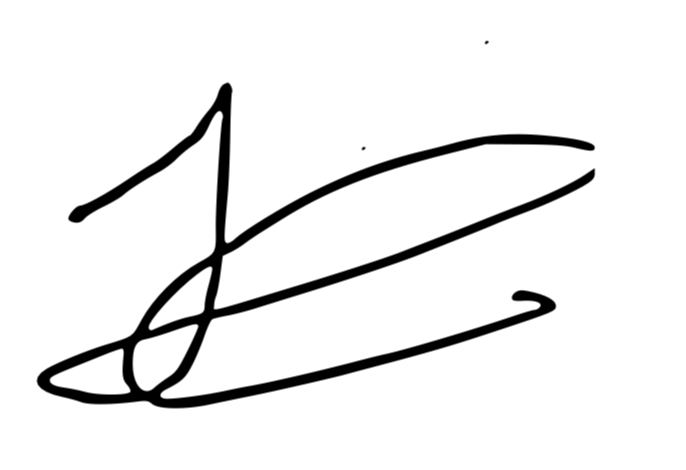

Grado Universitario en Ingeniería Informática\ 2025-2026\ Trabajo Fin de Grado
"Propuesta de algoritmo de explicación contrafactual para el análisis de modelos predictivos de series temporales"\
\ José David Rico Días\
Tutor\ Antonio Berlanga de Jesús\ Colmenarejo, Septiembre 2026\
{width="4.2cm"}\ Esta obra se encuentra sujeta a la licencia Creative Commons Reconocimiento
Dedicatoria {#dedicatoria .unnumbered}
Mamá, Ari, Sara, Samuel sois las personas que más me han apoyado, mi familia. Todos hemos luchado para poder continuar mis estudios, y mis éxitos han sido igualmente vuestros éxitos. A la comunidad universitaria, y en especial al Grupo de Inteligencia Artificial Aplicada, conmigo han ido mucho más allá de lo necesario. Atesoro increíbles recuerdos y experiencias que me acompañarán durante toda mi vida.
Gracias.
Introducción {#cap:introduccion}
Los modelos de regresión de series temporales se usan para predecir la evolución de variables que se ven afectadas por el paso de tiempo, como la demanda energética o la actividad económica de un país. Poder tomar mejores decisiones es una las principales utilidades de los modelos de series temporales. Pero en ocasiones no es solo necesario obtener una predicción precisa, sino también entender por qué esa predicción se ha hecho, y en un escalón superior, cómo podemos cambiar el presente para llegar a un estado futuro deseado; en qué tenemos que invertir hoy para que el modelo prediga beneficios futuros.
Una forma de obtener mejor entendimiento a estas preguntas es a través de las explicaciones contrafactuales, las cuales comparan una instancia observada con una alternativa hipotética: ¿qué valores deberían haber sido diferentes para alcanzar un objetivo determinado?. En las series temporales estas instancias son instantes pasados, que están ordenados y pueden estar relacionadas entre sí. Una explicación contrafactual no tiene porqué respetar la coherencia temporal.
Este TFG detalla e implementa CFGTS (CounterFactual Generation for
Time Series), un algoritmo para generar y evaluar explicaciones
contrafactuales en modelos autorregresivos de series temporales. A
partir de un modelo de regresión ajustado, una instancia temporal y un
valor objetivo de predicción, el algoritmo busca candidatos que
equilibren la aproximación al objetivo y la cercanía a la observación
original. Después, construye una región local de cobertura y asigna a
cada candidato una puntuación de consistencia causal basada en la
estructura temporal de sus variables.
Aportaciones
Las aportaciones realizadas por este trabajo han sido:
-
Formalizar el problema.
-
Diseñar un algoritmo de 3 fases que: genera contrafactuales, genera un espacio acoplado (conjunto de cobertura) y por último puntúa los contrafactuales según su consistencia causal.
-
Formaliza las condiciones mediante el cual el algoritmo es capaz de encontrar soluciones. Uno de los puntos principales es la demostración de que es necesario puntuar los contrafactuales mediante un grafo, ya que sino se generaría un sesgo de mediación.
-
Implementa el algoritmo en una biblioteca Python. La biblioteca está disponible para su descarga mediante
PyPi. -
Evalúa el comportamiento de la propuesta, comparando modelos lineales y no lineales, y contrastando los candidatos generados con un control aleatorio.
Estructura del documento
El documento se organiza de la siguiente forma: el Capítulo 2{reference-type="ref" reference="cap:motivacion"}, Motivación, presenta los casos de uso que originan el problema. A continuación, el Capítulo 3{reference-type="ref" reference="cap:fundamentos"}, Fundamentos teóricos, introduce los conceptos de estadística, series temporales, causalidad y explicabilidad necesarios para el desarrollo posterior, y el Capítulo 4{reference-type="ref" reference="cap:estadodelarte"}, Estado del arte, revisa los métodos relacionados de generación de contrafactuales y modelos surrogados.
El Capítulo 5{reference-type="ref"
reference="cap:analisis"}, Análisis del problema, concreta los
requisitos de CFGTS. El
Capítulo 6{reference-type="ref"
reference="cap:propuesta"}, Propuesta, desarrolla su formalización, las
tres fases del algoritmo y su implementación. Después, el
Capítulo 7{reference-type="ref"
reference="cap:resultados"}, Resultados, describe el protocolo
experimental y analiza el comportamiento obtenido. Los capítulos finales
examinan el marco regulador
(Capítulo 8{reference-type="ref"
reference="cap:regulacion"}), los impactos del trabajo
(Capítulo 9{reference-type="ref"
reference="cap:impacto"}), la planificación
(Capítulo 10{reference-type="ref"
reference="cap:planificacion"}) y el presupuesto
(Capítulo 11{reference-type="ref"
reference="cap:presupuesto"}), antes de cerrar con las conclusiones
(Capítulo 12{reference-type="ref"
reference="cap:conclusiones"}) y las futuras líneas de investigación
(Capítulo 13{reference-type="ref"
reference="cap:futuras_lineas"}). Los anexos reúnen el glosario, las
demostraciones y las declaraciones requeridas.
Motivación {#cap:motivacion}
La motivación de este trabajo surge desde dos perspectivas:
-
Un problema que me encontré durante una etapa de trabajo en Santander Corporate and Investment Banking: dados los movimientos diarios en rendimiento de un portfolio de deuda, explicar qué tipo de portfolio tendríamos que haber tenido ayer para que el movimiento hubiese sido cero, en vez del movimiento finalmente observado. Los instrumentos de deuda presentan autocorrelación y correlación cruzada. Es necesario predecir los movimientos de ambos instrumentos, y explicar qué movimientos en los instrumentos de deuda en los días anteriores podrían haber llevado a un movimiento cero en el día actual. Este problema se puede formular como un problema de generación de explicaciones contrafactuales para modelos predictivos de series temporales.
-
El Trabajo de Fin de Grado que realicé en el Grado en Administración de Empresas, el cual implementó un modelo de series temporales para predecir los movimientos del libro de órdenes de varias empresas cotizadas. El libro de órdenes es un vector de precios, volúmenes, y número de agentes en competencia, para un instrumento financiero. Una de las incógnitas que los investigadores en microestructura de mercados intentan activamente resolver es ¿En qué estado tendría que haber estado el libro de órdenes para que el precio no hubiese cambiado? Este problema igualmente se puede formular como un problema de generación de explicaciones contrafactuales para modelos predictivos de series temporales.
Ambas motivaciones nacen de un interés personal, pero la generación de contrafactuales en caso particular de las series temporales no solo tiene aplicaciones en finanzas, pues como veremos a lo largo de este trabajo las técnicas de generación de contrafactuales son aplicables en múltiples dominios, mientras exista un modelo y una predicción que explicar. Las buenas explicaciones contrafactuales son plausibles, aumentan nuestra confianza en el modelo y amplían nuestro conocimiento sobre el fenómeno que se modela, lo que es especialmente relevante en dominios de alto impacto como la medicina, la justicia o las finanzas.
Fundamentos teóricos {#cap:fundamentos}
En esta sección se desarrollan los fundamentos teóricos de las técnicas que se usarán para resolver el problema de generación de explicaciones contrafactuales para modelos predictivos de series temporales. Se presentan los conceptos básicos sobre series temporales, causalidad pearliana, instancias contrafactuales y optimización multi-objetivo.
Estadística
La estadística se encarga del estudio de fenómenos inciertos, y se apoya en el lenguaje de la probabilidad para cuantificar creencias [@Pearl2016-nx].
Probabilidad y notación básica
Sea (\Omega, \mathcal{F}, \mathbb{P}) un espacio de probabilidad, donde \Omega es el espacio muestral, \mathcal{F} es una \sigma-álgebra de eventos y \mathbb{P}:\mathcal{F}\to[0,1] es una medida de probabilidad tal que: \mathbb{P}(\Omega)=1, \qquad \mathbb{P}(A)\geq 0\;\;\forall A\in\mathcal{F}, \qquad \mathbb{P}\left(\bigcup_{i=1}^{\infty} A_i\right)=\sum_{i=1}^{\infty}\mathbb{P}(A_i) para toda familia numerable de eventos disjuntos \{A_i\}. Es decir, la probabilidad es una función que asigna a cada evento un número entre 0 y 1, de tal forma que el evento seguro tiene probabilidad 1, el evento imposible tiene probabilidad 0, y la probabilidad de la unión de eventos disjuntos es igual a la suma de todas sus probabilidades. Usando el ejemplo de un dado justo:
-
\Omega=\{1,2,3,4,5,6\}
-
\mathcal{F}=\mathcal{P}(\Omega)=2^{\Omega}=\{\emptyset,\{1\},\{2\},\ldots ,\{6\},\{1,2\},\{1,3\},\ldots,\Omega\}
-
\mathbb{P}(A)=|A|/|\Omega| para cada A\in\mathcal{F}
-
\mathbb{P}(\{1,2\})=|\{1,2\}|/|\Omega|=2/6=1/3. Es decir la probabilidad de que el dado salga 1 o 2 es 1/3.
Variables
Una variable aleatoria es una función medible X:\Omega\to\mathcal{X}, donde \mathcal{X} es su espacio de valores.
Variable discreta. Si \mathcal{X} es finito (discreto), su función de masa de probabilidad se define por p_X(x)=\mathbb{P}(X=x), \qquad \sum_{x\in\mathcal{X}} p_X(x)=1.
Variable continua. Si X es continua, entonces debe existir un f_X tal que \mathbb{P}(a\leq X\leq b)=\int_a^b f_X(x)\,dx, \qquad \int_{-\infty}^{\infty} f_X(x)\,dx=1.
Para dos variables X,Y, la distribución conjunta se denota por \mathbb{P}(X=x,Y=y)=\mathbb{P}(x,y), y las marginales se obtienen por \mathbb{P}(X=x)=\sum_y \mathbb{P}(x,y) \quad\text{o}\quad f_X(x)=\int f_{X,Y}(x,y)\,dy.
Eventos
Un evento es cualquier subconjunto A\in\mathcal{F}. En términos de
variables, afirmaciones como
\{X=x\},\quad \{X\in B\},\quad \{X=x,\,Y=y\},\quad \{X\in B_1\cup B_2\}
son eventos. Operaciones lógicas se traducen en operaciones de
conjuntos: A\cap B\;(\text{y''}),
\qquad
A\cup B\;(\text{o''}),
\qquad
A^c\;(\text{no''}).o''}),
\qquad
A^c\;(\text{no''}).
Probabilidad condicional
La probabilidad condicional de un evento A dado un evento B con \mathbb{P}(B)>0 se define como \mathbb{P}(A\mid B)=\frac{\mathbb{P}(A\cap B)}{\mathbb{P}(B)}. \label{eq:conditional_probability_definition}
En particular, \mathbb{P}(X=x\mid Y=y)=\frac{\mathbb{P}(X=x,Y=y)}{\mathbb{P}(Y=y)}.
De la definición se derivan identidades clave: \mathbb{P}(A\cap B)=\mathbb{P}(A\mid B)\,\mathbb{P}(B)=\mathbb{P}(B\mid A)\,\mathbb{P}(A), \label{eq:product_rule_probability}
\mathbb{P}(A)=\sum_i \mathbb{P}(A\mid B_i)\,\mathbb{P}(B_i), \label{eq:total_probability_rule} si \{B_i\} es una partición de \Omega,
\mathbb{P}(A\mid B)=\frac{\mathbb{P}(B\mid A)\,\mathbb{P}(A)}{\mathbb{P}(B)}, \label{eq:bayes_rule} que corresponde al teorema de Bayes.
Independencia
Dos eventos A y B son independientes si \mathbb{P}(A\mid B)=\mathbb{P}(A), \label{eq:event_independence_conditional} equivalentemente, \mathbb{P}(A\cap B)=\mathbb{P}(A)\mathbb{P}(B). \label{eq:event_independence_product}
La independencia es simétrica: si A es independiente de B, entonces B es independiente de A.
Dos eventos A y B son condicionalmente independientes dado C si \mathbb{P}(A\mid B,C)=\mathbb{P}(A\mid C), \label{eq:conditional_independence_events} y, de forma equivalente, \mathbb{P}(A\cap B\mid C)=\mathbb{P}(A\mid C)\mathbb{P}(B\mid C). \label{eq:conditional_independence_factorization}
Para variables aleatorias, X \perp Y si para todo par (x,y) se cumple \mathbb{P}(X=x\mid Y=y)=\mathbb{P}(X=x), \label{eq:variable_independence_conditional} equivalentemente, \mathbb{P}(X=x,Y=y)=\mathbb{P}(X=x)\mathbb{P}(Y=y), \label{eq:variable_independence_joint_factorization} y en el caso continuo, f_{X,Y}(x,y)=f_X(x)f_Y(y).
Cuando X e Y no son independientes en general, pero sí lo son al fijar Z, se escribe X \perp Y \mid Z.
Distribuciones de probabilidad
La distribución de probabilidad de una variable discreta X es el conjunto de valores \{p_X(x)\}_{x\in\mathcal{X}}, con 0\leq p_X(x)\leq 1, \qquad \sum_{x\in\mathcal{X}} p_X(x)=1.
Para variables continuas, la distribución se representa mediante una densidad f_X, y su función de distribución acumulada F_X(x)=\mathbb{P}(X\leq x)=\int_{-\infty}^{x} f_X(t)\,dt.
Para un vector de variables \mathbf{V}=(X_1,\dots,X_n), la distribución conjunta se denota por p_{\mathbf{V}}(x_1,\dots,x_n) \quad\text{o}\quad f_{\mathbf{V}}(x_1,\dots,x_n), según el caso discreto o continuo, y satisface la normalización correspondiente: \sum_{x_1}\cdots\sum_{x_n} p_{\mathbf{V}}(x_1,\dots,x_n)=1, \qquad \int\cdots\int f_{\mathbf{V}}(x_1,\dots,x_n)\,dx_1\cdots dx_n=1.
Ley de probabilidad total
Si A y B son eventos mutuamente excluyentes, entonces \mathbb{P}(A\cup B)=\mathbb{P}(A)+\mathbb{P}(B). \label{eq:sum_rule_disjoint_events}
Para cualquier evento A y cualquier evento B, \mathbb{P}(A)=\mathbb{P}(A\cap B)+\mathbb{P}(A\cap B^c). \label{eq:binary_partition_probability}
Más generalmente, si \{B_1,\dots,B_k\} es una partición de \Omega, entonces \mathbb{P}(A)=\sum_{i=1}^{k}\mathbb{P}(A\cap B_i) =\sum_{i=1}^{k}\mathbb{P}(A\mid B_i)\mathbb{P}(B_i). \label{eq:law_total_probability_partition}
La regla del producto puede escribirse como \mathbb{P}(A\cap B)=\mathbb{P}(A\mid B)\mathbb{P}(B), \label{eq:product_rule_again} y, junto con la simetría \mathbb{P}(A\cap B)=\mathbb{P}(B\cap A), lleva a \mathbb{P}(A\mid B)=\frac{\mathbb{P}(B\mid A)\mathbb{P}(A)}{\mathbb{P}(B)}, \label{eq:bayes_rule_again} que es la regla de Bayes.
Ejemplo (descomposición por contextos). Sea D el evento "defectuoso" y sea F\in\{F_1,F_2\} la fábrica de origen. Si \mathbb{P}(F_1)=0.30, \qquad \mathbb{P}(F_2)=0.70, \qquad \mathbb{P}(D\mid F_1)=\frac{1}{5000}, \qquad \mathbb{P}(D\mid F_2)=\frac{1}{10000}, entonces, por [eq:law_total_probability_partition]{reference-type="eqref" reference="eq:law_total_probability_partition"}, \mathbb{P}(D)=\mathbb{P}(D\mid F_1)\mathbb{P}(F_1)+\mathbb{P}(D\mid F_2)\mathbb{P}(F_2) =\frac{1}{5000}(0.30)+\frac{1}{10000}(0.70)=0.00013.
Uso de la regla de Bayes
En inferencia estadística suele interpretarse A como una hipótesis y B como evidencia observada. El objetivo es actualizar la creencia previa sobre A, denotada por \mathbb{P}(A), hacia la probabilidad posterior \mathbb{P}(A\mid B): \underbrace{\mathbb{P}(A\mid B)}_{\text{posterior}} = \frac{\underbrace{\mathbb{P}(B\mid A)}_{\text{verosimilitud}}\underbrace{\mathbb{P}(A)}_{\text{prior}}}{\underbrace{\mathbb{P}(B)}_{\text{evidencia}}}. \label{eq:bayesian_update_decomposition}
Si las hipótesis H_1,\dots,H_k forman una partición, entonces \mathbb{P}(H_i\mid B)=\frac{\mathbb{P}(B\mid H_i)\mathbb{P}(H_i)}{\sum_{j=1}^{k}\mathbb{P}(B\mid H_j)\mathbb{P}(H_j)}. \label{eq:bayes_partition_hypotheses}
Valores esperados
Cuando una variable aleatoria toma valores numéricos, una medida de resumen fundamental es su valor esperado (media).
Para una variable discreta X, \mathbb{E}[X]=\sum_{x} x\,\mathbb{P}(X=x). \label{eq:expected_value_discrete}
Para una variable continua X con densidad f_X, \mathbb{E}[X]=\int_{-\infty}^{\infty} x f_X(x)\,dx. \label{eq:expected_value_continuous}
Más generalmente, para una función medible g, \mathbb{E}[g(X)] = \sum_x g(x)\mathbb{P}(X=x) \quad\text{o}\quad \mathbb{E}[g(X)] = \int_{-\infty}^{\infty} g(x) f_X(x)\,dx, \label{eq:expected_value_function} según el caso discreto o continuo.
La esperanza condicional de Y dado X=x es \mathbb{E}[Y\mid X=x]=\sum_y y\,\mathbb{P}(Y=y\mid X=x) \quad\text{o}\quad \mathbb{E}[Y\mid X=x]=\int_{-\infty}^{\infty} y f_{Y\mid X}(y\mid x)\,dy. \label{eq:conditional_expectation_definition}
Ejemplo (dado justo). Si X\in\{1,2,3,4,5,6\} y \mathbb{P}(X=x)=1/6, entonces \mathbb{E}[X]=\sum_{x=1}^{6} x\frac{1}{6}=\frac{1+2+3+4+5+6}{6}=3.5. Si la recompensa es g(X)=X^2, entonces \mathbb{E}[X^2]=\sum_{x=1}^{6} x^2\frac{1}{6}=\frac{91}{6}\approx 15.17.
Además, \mathbb{E}[X] minimiza el error cuadrático medio entre constantes; si c es una constante elegida al azar, entonces: \mathbb{E}[X]=\arg\min_{c\in\mathbb{R}}\,\mathbb{E}\big[(X-c)^2\big], \label{eq:mean_mse_optimality} y análogamente, \mathbb{E}[Y\mid X=x]=\arg\min_{c\in\mathbb{R}}\,\mathbb{E}\big[(Y-c)^2\mid X=x\big]. \label{eq:conditional_mean_mse_optimality}
Cuando la distribución es asimétrica, otras medidas (como la mediana) pueden ser preferibles bajo criterios de pérdida distintos.
Varianza y covarianza
La varianza de una variable aleatoria X mide su dispersión alrededor de la media \mu_X=\mathbb{E}[X]: \operatorname{Var}(X)=\sigma_X^2=\mathbb{E}\left[(X-\mu_X)^2\right] \label{eq:variance_definition_stat}
La desviación típica se define como \sigma_X=\sqrt{\operatorname{Var}(X)}, \label{eq:std_definition_stat} y se expresa en las mismas unidades que X.
Ejemplo. Si X es el resultado de un dado justo, \mathbb{E}[X]=3.5 \qquad \mathbb{E}[X^2]=\frac{91}{6}, entonces \operatorname{Var}(X)=\mathbb{E}[X^2]-\mathbb{E}[X]^2 =\frac{91}{6}-\left(\frac{7}{2}\right)^2 =\frac{35}{12}, \qquad \sigma_X=\sqrt{\frac{35}{12}}\approx 1.708.
La covarianza entre X e Y es \sigma_{XY}=\operatorname{Cov}(X,Y)=\mathbb{E}\left[(X-\mathbb{E}[X])(Y-\mathbb{E}[Y])\right], \label{eq:covariance_definition_stat} y puede reescribirse como \operatorname{Cov}(X,Y)=\mathbb{E}[XY]-\mathbb{E}[X]\mathbb{E}[Y]. \label{eq:covariance_alt_form_stat}
La correlación lineal es \rho_{XY}=\frac{\operatorname{Cov}(X,Y)}{\sigma_X\sigma_Y}, \qquad -1\leq\rho_{XY}\leq 1. \label{eq:correlation_definition_stat}
Si X e Y son independientes, entonces \operatorname{Cov}(X,Y)=0 \quad\text{y por tanto}\quad \rho_{XY}=0 \;\; (\sigma_X,\sigma_Y>0). \label{eq:independence_implies_zero_cov_stat} La implicación recíproca no es cierta en general: covarianza nula no implica independencia salvo bajo hipótesis adicionales (por ejemplo, normalidad conjunta).
Regresión
En regresión se busca predecir una variable respuesta Y a partir de una variable explicativa X. En términos de error cuadrático medio, el mejor predictor de Y dado X=x es m(x)=\mathbb{E}[Y\mid X=x]. \label{eq:best_predictor_conditional_mean_stat}
Donde m(x) se aproxima mediante una función parametrizada sobre x; la más habitual es la lineal: \hat{y}=a+bx. \label{eq:simple_linear_regression_form_stat}
Dado un conjunto de observaciones (x_i,y_i)_{i=1}^{n}, el ajuste de mínimos cuadrados ordinarios resuelve (\hat{a},\hat{b})=\arg\min_{a,b}\sum_{i=1}^{n}(y_i-a-bx_i)^2. \label{eq:ols_objective_simple_stat}
Si los datos son la población completa, la pendiente lineal óptima de Y sobre X es b=R_{Y\mid X}=\frac{\operatorname{Cov}(X,Y)}{\operatorname{Var}(X)} =\frac{\sigma_{XY}}{\sigma^2_X}, \label{eq:population_slope_from_cov_stat} y el intercepto a=\mathbb{E}[Y]-b\,\mathbb{E}[X]. \label{eq:population_intercept_stat}
Series temporales
No hay nada más natural para el ser humano que el concepto del tiempo: la realidad se experimenta como una sucesión irreversible de eventos. El interés humano se centra en comprender esa sucesión de eventos, predecir lo que ocurrirá a continuación, y explicar por qué ocurren las cosas. Las series temporales son la formalización matemática de esa sucesión de eventos, y los modelos de series temporales son herramientas para predecir y explicar esa sucesión.
Alrededor del año 600 A.C., reyes y sacerdotes viajaban a la ciudad griega de Delfos para consultar a la pitonisa sobre el futuro. La pitonisa, sentada sobre un trípode, inhalaba vapores de gas natural que emanaban de una grieta en la tierra, lo que le inducía un estado de trance. En ese estado la pitonisa pronunciaba crípticas profecías[@deBoer2001]. El interés en predecir el futuro es tan antiguo como la propia civilización humana.
Volviendo a la formalización, una serie temporal es un conjunto de observaciones x_t, donde t representa un momento en el tiempo concreto. La serie temporal puede ser discreta, si t pertenece a un conjunto de instantes discretos, o continua, si t puede tomar cualquier valor real. Usualmente las series temporales son discretas ya que las medidas se toman en instantes concretos, como por ejemplo cada hora, cada día, etc.
Un modelo de series temporales para los datos observados \{x_t\} es una especificación de las distribuciones conjuntas de dichos datos, en forma de secuencia de variables aleatorias \{X_t\} de las que \{x_t\} es una instancia de la distribución. Con frecuencia el término series temporales se usa para referirse tanto al dato como al proceso generador; la temperatura (distribución) es una serie temporal, así como un dataset de temperaturas también es una serie temporal.
Normalmente se especifican los valores esperados \mathbb{E}[X_t] y los productos esperados \mathbb{E}[X_{t+h}X_t], para t = 1, 2, \ldots y h = 0, 1, 2, \ldots, centrándose en las propiedades de la secuencia \{X_t\} que dependen únicamente de ellos [@Brockwell2006].

Series temporales multivariables {#series-temporales-multivariables .unnumbered}
Existen problemas de series temporales que no se pueden describir únicamente con una variable, sino que es necesario el uso de múltiples variables que pueden estar correlacionadas. Este tipo de series temporales se denominan series temporales multivariadas, denotadas por el vector \{\mathbf{X}_t\}, en la que no solo existe dependencia dentro de cada componente \{X_{ti}\}, sino también interdependencia entre distintos componentes de la serie, \{X_{ti}\} y \{X_{tj}\}, con i \neq j. Gran parte de la teoría de series temporales univariantes se extiende casi de forma natural al caso multivariante [@Brockwell2006]. Expandiendo las componentes podemos escribir la serie como: \mathbf{X}_t = \begin{pmatrix} X_{t1} \\ X_{t2} \\ \vdots \\ X_{tp} \end{pmatrix}, \qquad t \in \mathcal{T}
donde cada componente X_{ti} representa la variable aleatoria i-ésima observada en el instante t, para i = 1, 2, \ldots, p.

Taxonomía de problemas en series temporales
Las series temporales como dato pueden ser de interés desde múltiples perspectivas: predecir la evolución de la serie, comparar varias series, decidir si un punto en una serie es una anomalía, etc. Esta taxonomía se recoge de [@Fu2011], [@Esling2012], [@Ding2008] y [@Anderson1994].
Para todos y cada uno de los siguientes tipos de problemas, pueden encontrarse formulaciones tanto en el caso univariante como en el multivariante.
Regresión
La regresión es una tarea supervisada cuyo objetivo consiste en predecir el valor de una variable de interés a partir de una o varias variables explicativas. En el contexto de las series temporales, este planteamiento permite relacionar la evolución en el tiempo para una magnitud objetivo, con información observada en instantes anteriores. Por ejemplo, puede resultar útil explicar las ventas mensuales a partir del gasto publicitario, o anticipar la demanda eléctrica diaria a partir de la temperatura. La variable que se desea pronosticar suele denominarse variable dependiente, respuesta o explicada, mientras que las variables utilizadas para construir la predicción se conocen como regresores o variables explicativas.
Desde el punto de vista estadístico, la regresión en series temporales busca aproximar la dependencia entre la variable objetivo y sus variables explicativas mediante una relación funcional suficientemente simple como para ser interpretable y suficientemente flexible como para proporcionar buenas predicciones [@Hyndman2021]. Dependiendo del horizonte considerado, el problema puede plantearse como una predicción de un solo paso o como una predicción de varios pasos hacia delante.
Regresión lineal simple. El caso más elemental aparece cuando se utiliza un único predictor. Entonces la relación entre la variable objetivo y y la variable explicativa x puede escribirse como: y_t = \beta_0 + \beta_1 x_t + \varepsilon_t En esta expresión, \beta_0 representa el intercepto y \beta_1 la pendiente de la recta de regresión. El primero indica el valor esperado de y_t cuando x_t = 0, mientras que el segundo recoge la variación media esperada en y_t ante un aumento unitario de x_t. El término \varepsilon_t agrupa la parte no explicada por el modelo; no debe interpretarse como un error en sentido coloquial, sino como la contribución de todos aquellos factores que influyen en la varianza de y_t y que no han quedado incorporados explícitamente en la ecuación, incluyendo el ruido.
Regresión lineal múltiple. Cuando la predicción depende de varias variables explicativas, la especificación anterior se extiende de forma natural a y_t = \beta_0 + \beta_1 x_{1,t} + \beta_2 x_{2,t} + \cdots + \beta_k x_{k,t} + \varepsilon_t, \label{eq:multiple_linear_regression} donde x_{1,t}, \ldots, x_{k,t} son variables numéricas observadas en el instante t. En este caso, cada coeficiente \beta_j debe interpretarse como el efecto marginal del predictor correspondiente una vez controlado el efecto del resto de variables incluidas en el modelo, es decir manteniendo constantes las demás variables.
Supuestos del modelo. La utilidad de la regresión lineal depende de varios supuestos:
-
La relación lineal propuesta sea una aproximación razonable del fenómeno estudiado.
-
Los errores (\varepsilon_1, \ldots, \varepsilon_T) tengan media cero.
-
Los errores no presenten autocorrelación.
-
Los errores sean independientes de las variables explicativas.
-
Los errores sigan una distribución normal con varianza constante \sigma^2.
Si estas condiciones no se cumplen, las estimaciones pueden resultar sesgadas o ineficientes, y parte de la estructura presente en los datos quedaría sin modelizar. En particular, la hipótesis de normalidad con varianza constante simplifica la construcción de intervalos de predicción, que no deben confundirse con los intervalos de confianza.
Por último, el modelo lineal clásico trata las variables explicativas como variables fijadas externamente. En experimentos controlados esta hipótesis es natural, pero con datos observacionales, como ocurre en muchas aplicaciones económicas y empresariales, los valores de las variables explicativas no se controlan sino que simplemente se observan. En consecuencia, dicho supuesto debe entenderse como una idealización analítica que facilita el estudio del problema, no como una descripción literal del proceso generador de los datos.
Predicción con modelos lineales.
Una vez estimados los coeficientes del modelo (por ejemplo, mediante mínimos cuadrados ordinarios), la predicción puntual de la variable objetivo puede obtenerse sustituyendo las estimaciones y los valores observados de las variables explicativas en la ecuación de regresión. En el caso de un modelo lineal múltiple, la predicción ajustada viene dada por \hat{y}_t = \hat{\beta}_0 + \hat{\beta}_1 x_{1,t} + \hat{\beta}_2 x_{2,t} + \cdots + \hat{\beta}_k x_{k,t}, \label{eq:linear_fitted_values} donde el término de error no aparece porque la predicción trabaja con el valor esperado condicional de y_t. Si esta expresión se evalúa para t = 1, \ldots, T usando los valores observados de las variables explicativas en la muestra, se obtienen los valores ajustados del conjunto de entrenamiento. Sin embargo, en series temporales el interés principal no suele estar en reproducir la muestra histórica, sino en anticipar valores futuros de la variable objetivo [@Hyndman2021].
Predicciones ex ante y ex post. En regresión para series temporales conviene distinguir entre dos tipos de predicción según la información disponible en el momento de calcularlas. Las predicciones ex ante se elaboran utilizando únicamente la información conocida con anterioridad al periodo que se quiere pronosticar; por tanto, constituyen predicciones genuinas. Su principal dificultad es que requieren disponer también de valores futuros para las variables explicativas, lo que obliga a pronosticar esos regresores con modelos adicionales o a recurrir a proyecciones externas. En cambio, las predicciones ex post se calculan una vez conocidos los valores efectivamente observados de las variables explicativas. No son pronósticos genuinos, pero resultan útiles para estudiar el comportamiento del modelo y descomponer el origen de los errores de predicción.
La comparación entre predicciones ex ante y ex post es especialmente útil porque permite separar dos fuentes de incertidumbre: la incertidumbre asociada al propio modelo de regresión y la derivada de tener que pronosticar las variables explicativas.
Un ejemplo de esta diferencia se encuentra en los modelos que predicen precipitaciones. Una predicción ex ante nos permite predecir la lluvia del siguiente periodo. Una predicción ex post nos permite, usando valores históricos, comparar la predicción con la cantidad real de lluvia, para poder dar una estimación de cuánto se desvía la lluvia actual respecto a lo esperado; es una de las formas de medir los efectos del cambio climático.
Modelos predictivos con retardos. Una forma habitual de hacer la regresión consiste en emplear como regresores valores retardados de las variables explicativas. Si el objetivo es obtener una predicción a h pasos, una formulación natural es y_{t+h} = \beta_0 + \beta_1 x_{1,t} + \cdots + \beta_k x_{k,t} + \varepsilon_{t+h}, \qquad h \geq 1 \label{eq:lagged_predictive_regression} En esta especificación, las variables explicativas se observan h periodos antes que la variable que se desea pronosticar. Esto tiene una ventaja práctica importante: al proyectar el modelo más allá del final de la muestra, los valores de entrada ya son conocidos y no es necesario predecir simultáneamente todas las variables explicativas. Además, esta formulación suele ser más verosímil ya que muchos efectos no se materializan de forma instantánea, sino con cierto retraso [@Anderson1994]. Cuando incluso esta estrategia resulta insuficiente, puede recurrirse a análisis por escenarios, fijando trayectorias plausibles para las variables explicativas y evaluando cómo cambian las predicciones del modelo bajo cada una de ellas.
Intervalos de predicción. Junto a la predicción puntual, en la práctica interesa cuantificar su incertidumbre. En el caso de la regresión lineal simple, y bajo el supuesto de errores normales, un intervalo de predicción aproximado al 95\% para una nueva observación puede expresarse como \hat{y} \pm 1.96\,\hat{\sigma}_e\sqrt{1 + \frac{1}{T} + \frac{(x - \bar{x})^2}{(T-1)s_x^2}} \label{eq:simple_regression_prediction_interval} donde T es el tamaño muestral, \bar{x} es la media observada del predictor, s_x es su desviación típica y \hat{\sigma}_e es el error estándar residual. Para niveles de cobertura distintos basta con reemplazar el valor 1.96 por el cuantil correspondiente. Esta expresión muestra además que la incertidumbre de la predicción crece cuando el valor del predictor se aleja de su media muestral, lo que refleja que el modelo predice con mayor precisión en regiones del espacio de entrada bien representadas por los datos observados [@Hyndman2021].
Forma matricial. En problemas con múltiples observaciones y varias variables explicativas, resulta conveniente escribir el modelo en forma matricial. Sea \mathbf{y} = (y_1, \ldots, y_T)^\top \qquad \boldsymbol{\varepsilon} = (\varepsilon_1, \ldots, \varepsilon_T)^\top \qquad \boldsymbol{\beta} = (\beta_0, \beta_1, \ldots, \beta_k)^\top y sea además la matriz de datos X de dimensión T \times (k+1), donde la primera columna es un vector de unos para el intercepto y las siguientes columnas contienen los valores de las variables explicativas para cada observación: X = \begin{pmatrix} 1 & x_{1,1} & x_{2,1} & \cdots & x_{k,1} \\ 1 & x_{1,2} & x_{2,2} & \cdots & x_{k,2} \\ \vdots & \vdots & \vdots & \ddots & \vdots \\ 1 & x_{1,T} & x_{2,T} & \cdots & x_{k,T} \end{pmatrix} Con esta notación, el modelo de regresión lineal puede escribirse de forma compacta como \mathbf{y} = X\boldsymbol{\beta} + \boldsymbol{\varepsilon} \label{eq:matrix_regression_model} donde se asume que \mathbb{E}[\boldsymbol{\varepsilon}] = \mathbf{0} y \operatorname{Var}(\boldsymbol{\varepsilon}) = \sigma^2 I. La matriz X tiene T filas, una por observación, y k+1 columnas, correspondientes al intercepto y a las k variables explicativas incluidas en el modelo.
Estimación por mínimos cuadrados. En esta formulación, la estimación por mínimos cuadrados ordinarios se obtiene minimizando la suma de cuadrados residual, \boldsymbol{\varepsilon}^\top \boldsymbol{\varepsilon} = (\mathbf{y} - X\boldsymbol{\beta})^\top (\mathbf{y} - X\boldsymbol{\beta}). La solución del problema viene dada por la ecuación: \hat{\boldsymbol{\beta}} = (X^\top X)^{-1} X^\top \mathbf{y}. \label{eq:normal_equation} Esta expresión requiere que X tenga rango columna completo (por el Teorema de Rouché-Frobenius); de lo contrario, si la matriz X^\top X es singular (no invertible) entonces el modelo no puede estimarse de forma única. Este problema aparece, por ejemplo, cuando se incluyen variables indicadoras redundantes y se incurre en la denominada dummy variable trap. La varianza residual puede estimarse mediante \hat{\sigma}_e^2 = \frac{1}{T-k-1}(\mathbf{y} - X\hat{\boldsymbol{\beta}})^\top (\mathbf{y} - X\hat{\boldsymbol{\beta}}). \label{eq:residual_variance_matrix}
Valores ajustados y validación cruzada. La ecuación permite expresar los valores ajustados como \hat{\mathbf{y}} = X\hat{\boldsymbol{\beta}} = X(X^\top X)^{-1}X^\top \mathbf{y} = H\mathbf{y}, \label{eq:hat_matrix} donde H = X(X^\top X)^{-1}X^\top se conoce como matriz sombrero, ya que transforma \mathbf{y} en \hat{\mathbf{y}}. Si se denotan por h_1, \ldots, h_T los elementos diagonales de H, el estadístico de validación cruzada de tipo leave-one-out puede calcularse como \operatorname{CV} = \frac{1}{T}\sum_{t=1}^{T}\left(\frac{e_t}{1-h_t}\right)^2, \label{eq:cv_hat_matrix} donde e_t es el residuo obtenido al ajustar el modelo con las T observaciones. Esta identidad evita tener que reestimar el modelo T veces para evaluar el error de predicción fuera de muestra (out-of-sample)[@Hyndman2021].
Predicción e intervalos en forma matricial. Sea \mathbf{x}_* un vector fila que contiene los valores de las variables explicativas, con el mismo formato que las filas de X, para los que se desea obtener una predicción. Entonces, la predicción puntual viene dada por \hat{y}_* = \mathbf{x}_*\hat{\boldsymbol{\beta}} = \mathbf{x}_*(X^\top X)^{-1}X^\top \mathbf{y} \label{eq:forecast_matrix_form} y la varianza estimada de predicción puede escribirse como \hat{\sigma}_e^2\left[1 + \mathbf{x}_*(X^\top X)^{-1}\mathbf{x}_*^\top\right] \label{eq:forecast_variance_matrix} Bajo el supuesto de errores normales, un intervalo de predicción aproximado al 95\% adopta la forma \hat{y}_* \pm 1.96\,\hat{\sigma}_e\sqrt{1 + \mathbf{x}_*(X^\top X)^{-1}\mathbf{x}_*^\top} \label{eq:forecast_prediction_interval_matrix} Este intervalo incorpora tanto la incertidumbre asociada al término de error como la incertidumbre causada por estimar los coeficientes del modelo. Sin embargo, no recoge la incertidumbre adicional procedente de posibles errores en los valores futuros de las variables explicativas.
Correlación, causalidad y predicción. En modelos predictivos (tanto si son de series temporales como si no lo son) es necesario distinguir entre correlación, causalidad y poder de predicción. Que una variable x resulte útil para predecir otra variable y no implica, por sí mismo, que x cause a y. La relación observada puede deberse a una causalidad en sentido contrario (y causa a x) o a la presencia de una tercera variable omitida que influya simultáneamente sobre ambas; un factor de confusión. Un ejemplo clásico es la asociación entre las ventas de helados y el número de ahogamientos en una zona costera [@pearl2017]: ambas variables pueden moverse juntas sin que exista una relación causal directa entre ellas, simplemente porque las dos aumentan cuando sube la temperatura. En este caso, la temperatura actúa como variable de confusión, es decir, como una variable no incluida en el modelo que influye tanto sobre la respuesta como sobre al menos una de las variables explicativas.
Tampoco debe identificarse causalidad con dirección de predicción. Es posible construir un modelo predictivo razonable incluso cuando la relación causal relevante apunta en sentido opuesto al modelo de predicción. Por ejemplo, un descenso inusual en el número de ciclistas por la mañana puede anticipar lluvia por la tarde, no porque los ciclistas modifiquen el tiempo atmosférico, sino porque la previsión meteorológica influye previamente sobre la decisión de desplazarse en bicicleta. En consecuencia, las correlaciones pueden ser valiosas para predecir aun cuando no exista un vínculo causal directo, cuando la causalidad sea inversa o cuando intervengan factores de confusión.
Predictores correlacionados. Cuando dos o más variables explicativas están muy correlacionadas, resulta difícil separar con precisión sus efectos individuales. Esta situación no impide necesariamente obtener buenas predicciones, porque el modelo puede seguir explotando la información conjunta contenida en esas variables, pero sí complica tareas como la predicción por escenarios o el análisis de la contribución de cada variable (análisis de sensibilidades), ya que cualquier cambio hipotético en una variable debería ser coherente con su relación histórica con las demás.
Multicolinealidad. Un caso especialmente relevante de esta dificultad es la multicolinealidad, que aparece cuando dos o más variables explicativas aportan información muy similar dentro de un modelo de regresión múltiple. Puede manifestarse porque dos variables estén altamente correlacionadas entre sí, o porque una combinación lineal de algunas variables esté casi perfectamente relacionada con otra combinación lineal distinta. El ejemplo más conocido es la dummy variable trap: si se incluyen variables indicadoras para todas las categorías de una variable cualitativa junto con un intercepto, una de ellas queda determinada exactamente por las demás y aparece una dependencia lineal perfecta.
Clusterización {#clusterización .unnumbered}
La tarea de clusterización trata de encontrar agrupaciones (clusters) de series temporales similares entre sí. Este tipo de problemas se considera de información completa y son problemas no supervisados, ya se basa en usar una función de homogeneidad que agrupe series lo más similares entre sí y lo más distintas entre grupos. Un ejemplo típico en finanzas es clusterizar los movimientos de pares de monedas, y descubrir si ciertos pares de monedas se mueven respecto a una moneda \"base\", para conocer si se agrupan entorno a los movimiento del dólar, el euro o el yen.
Similaridad {#similaridad .unnumbered}
La tarea de similaridad consiste en cuantificar hasta qué punto dos series temporales se asemejan, mediante una función de distancia \operatorname{Dist}(T, T'). Se trata de un problema no supervisado, ya que no depende de etiquetas, sino de cómo se define la proximidad entre secuencias posiblemente ruidosas, desalineadas en el tiempo o incluso muestreadas a ritmos distintos [@Ding2008; @Fu2011]. Una clasificación habitual distingue entre medidas de tipo lock-step, que comparan el punto i-ésimo de una serie con el punto i-ésimo de la otra, y medidas elásticas, que permiten tanto correspondencias de uno a muchos como deformaciones temporales [@Ding2008].
Dentro del primer grupo destacan las distancias inducidas por normas L_p, y en particular la distancia euclídea L_2, por su simplicidad, coste lineal y facilidad de indexación, aunque son sensibles al ruido y a los desfases locales [@Faloutsos1994]. Entre las medidas elásticas, dynamic time warping (DTW) permite comprimir o estirar localmente una serie para mejorar el emparejamiento [@BerndtClifford1994], mientras que la familia de distancias basadas en edición, como LCSS, EDR y ERP, tolera huecos, emparejamientos parciales y discrepancias locales [@Ding2008; @ChenOzsuOria2005; @ChenNg2004].
Si T = (x_1, \ldots, x_n) y T' = (x'_1, \ldots, x'_n) son dos series de igual longitud, una familia clásica de medidas lock-step viene dada por las distancias inducidas por normas L_p: d_p(T, T') = \left(\sum_{i=1}^{n} |x_i - x'_i|^p\right)^{1/p}, \qquad p \geq 1. Como casos particulares se obtienen la distancia Manhattan, d_1, la distancia euclídea, d_2, y la distancia máxima, d_{\infty}(T, T') = \max_{1 \leq i \leq n} |x_i - x'_i|. Estas medidas son atractivas por su simplicidad, coste lineal y facilidad de indexación, aunque resultan sensibles al ruido y a los desfases locales [@Faloutsos1994].
Entre las medidas elásticas, DTW (Dynamic Time Warping) permite comprimir o estirar localmente una serie para mejorar el emparejamiento [@BerndtClifford1994]. Si T = (x_1, \ldots, x_n) y T' = (x'_1, \ldots, x'_m), con n \neq m, la distancia se expresa como: \operatorname{DTW}(T, T') = D(n,m), D(0,0)=0, \qquad D(i,0)=D(0,j)=+\infty, D(i,j) = |x_i - x'_j| + \min\{D(i-1,j), D(i,j-1), D(i-1,j-1)\}, para 1 \leq i \leq n y 1 \leq j \leq m. Por su parte, una forma normalizada de la medida LCSS (Longest Common Subsequence) puede escribirse como d_{\mathrm{LCSS}}(T, T') = 1 - \frac{\mathrm{LCSS}_{\varepsilon,\delta}(T, T')}{\min(n,m)}, donde \varepsilon controla la tolerancia en amplitud y \delta la tolerancia temporal. Esta familia de distancias basadas en edición, junto con EDR (Edit Distance on Real sequence) y ERP (Edit Distance with Real Penalty), tolera huecos, emparejamientos parciales y discrepancias locales [@Ding2008; @ChenOzsuOria2005; @ChenNg2004; @Morse2007].
Existen además propuestas más especializadas, como TQuEST (Threshold Query based Similarity Search), basada en intervalos de cruce de umbral, o SpADe (Shape-based Pattern Detection), orientada a detectar patrones con desplazamientos y escalados en tiempo y amplitud [@Assfalg2006; @Chen2007SpADe]. En la práctica, la elección de la medida de similaridad depende del equilibrio deseado entre robustez frente a desalineaciones, número de parámetros, interpretabilidad y coste computacional [@Ding2008].
Clasificación
La clasificación de series temporales trata de asignar una etiqueta (label) a la serie. Este tipo de problemas se considera de información completa, ya que se dispone de la serie completa para tomar la decisión. Por ejemplo, clasificar una serie temporal de temperatura como cómoda o incómoda. Entra dentro de la clase de problemas supervisados, ya que se dispone de un conjunto de entrenamiento con series temporales etiquetadas.
Dentro de la tarea de clasificación se pueden distinguir dos subtipos de problemas:
-
Clasificación de series temporales completas, donde se asigna una etiqueta a toda la serie.
-
Clasificación de instantes temporales, donde se asigna una etiqueta a un único instante temporal de la serie. Dentro de subtipo se encuentra la tarea de detección de anomalías, donde se asigna una etiqueta de normal o anómalo a cada instante temporal de la serie.
Las técnicas principales para clasificar series temporales se pueden diferenciar entre [@faouzi:hal-03558165]:
-
Basadas en métricas: knn con distancia DTW
-
Basadas en kernel: SVM.
-
Basados en deep learning: modelos de redes de neuronas, en cualquiera de sus arquitecturas.
Segmentación {#segmentación .unnumbered}
También conocido como resumen, tiene por objetivo crear una nueva serie temporal, derivada de la original, usando la menor cantidad de datos posibles y conservando la mayor cantidad de información posible. Se considera un subproblema del problema de la discretización, dado que se busca reducir la cantidad de datos a través de la creación de segmentos o resúmenes de la serie temporal original.
Causalidad Pearliana
El estudio de la causalidad permite interpretar los datos (observaciones) más allá de simples relaciones entre variables, dado un modelo causal. También ayuda a estimar efectos concretos, como el impacto del tabaco, políticas públicas, etc. A diferencia de la estadística clásica, la causalidad añade un marco conceptual capaz de describir relaciones de causa y efecto que el lenguaje estadístico estándar no puede expresar por sí solo. El lenguaje causal descrito por Pearl amplía las respuestas allí donde las herramientas estadísticas tradicionales no son capaces de llegar.
Una de las mejores metáforas sobre la relación de las causas y efectos, y nuestro conocimiento sobre estos, se encuentra en el libro divulgativo The book of why del propio Judea Pearl. En él se explica la La escalera de la causalidad, una metáfora en la que se según se sube la escalera, más seguros podemos encontrarnos de que las causas y efectos son reales, siendo los peldaños la asociación, la intervención y los contrafactuales; cada peldaño requiere herramientas matemáticas distintas y responde a preguntas diferentes [@pearl2017].
Para motivar el estudio de la causalidad Pearliana se suele usar la paradoja de Simpson, popularizada por Edward Simpson: a un grupo de pacientes enfermos se les ofrece la posibilidad de probar un nuevo fármaco. Entre quienes toman el medicamento, el porcentaje de recuperación es menor que entre quienes no lo toman. Sin embargo, al desagregar los datos por sexo, se observa que se recuperan más hombres que toman el fármaco que hombres que no lo toman, y también se recuperan más mujeres que toman el fármaco que mujeres que no lo toman. En otras palabras, el medicamento parece beneficiar tanto a hombres como a mujeres, pero perjudicar a toda población considerada en conjunto [@Simpson1951]. El resultado parece absurdo, o incluso imposible, y precisamente por eso se considera una paradoja.
Un ejemplo con datos continuos más relacionado con el campo de la informática: a los usuarios que se les muestra más un anuncio publicitario, se les observa una menor tasa de conversión (por ejemplo, comprar un producto). Sin embargo, al desagregar por edad, se observa que en cada grupo de edad, los usuarios que ven más el anuncio tienen una mayor tasa de conversión. En este caso, la variable de confusión es la edad: los usuarios más jóvenes son más propensos a comprar el producto, independientemente de la cantidad de publicidad; existe un sesgo de variable omitida, que ha provocado que el coeficiente de la regresión tenga signo contrario.


Grafos causales como lenguaje matemático
La paradoja de Simpson muestra que, en problemas causales, los datos observados no siempre bastan para tomar decisiones correctas: es necesario incorporar hipótesis sobre el proceso generador de los datos (DGP, Data Generating Process). Ese proceso puede expresarse de forma compacta mediante grafos causales dirigidos acíclicos (DAG, Directed Acyclic Graphs) [@Pearl2016-nx].
Un grafo G=(V,E) está formado por un conjunto de nodos V (variables) y un conjunto de aristas E (relaciones). En causalidad, las aristas son dirigidas y se interpretan como influencias causales directas. Si existe una flecha X \to Y, entonces X es padre de Y y Y es hijo de X.
Un camino es una secuencia de nodos conectados por aristas. Un camino dirigido sigue la orientación de las flechas. Si existe un camino dirigido de X a Y, decimos que X es ancestro de Y y Y descendiente de X. Cuando no hay caminos dirigidos que vuelvan al nodo de origen, el grafo es acíclico.
Este lenguaje permite distinguir:
-
relaciones causales directas (flechas presentes),
-
asociaciones espurias por confusión (caminos de retroceso o backdoor),
-
y conjuntos de ajuste para estimar efectos causales.
En el ejemplo de conversión, se consideran tres variables:
-
A: edad del usuario,
-
P: exposición publicitaria,
-
C: conversión (p.ej., compra).
La historia causal compatible con la paradoja de Simpson es:
-
la edad influye en la exposición (A \to P), ya que los más jóvenes no necesitan tanta publicidad para comprar el producto, y viceversa.
-
la edad influye en la conversión (A \to C), ya que los más jóvenes son más propensos a comprar el producto, y viceversa.
-
y la exposición puede influir causalmente en la conversión (P \to C).
El DAG correspondiente es:
Este grafo hace explícito un factor de confusión entre P y C: P \leftarrow A \rightarrow C
Modelos causales estructurales
Un modelo causal estructural (MCE, o SCM Structural Causal Model) describe cómo un modelo causal asigna valores a las variables de interés. Consta de dos conjuntos de variables U y V, y un conjunto de funciones \mathbf{f}:
-
Las variables de U son exógenas: externas al modelo, sin ancestros, representadas como nodos raíz en el grafo.
-
Las variables de V son endógenas: cada una recibe su valor de una función f_i \in \mathbf{f} que depende de otras variables del modelo.
Una variable X es causa directa de Y si X aparece en f_Y; es causa de Y si lo es de forma directa o a través de otras causas. El grafo asociado al MCE contiene un nodo por variable y una arista dirigida Y \to X siempre que Y aparezca en f_X; trabajaremos con MCE cuyo grafo sea un DAG.
El modelo gráfico resulta útil porque, aunque contiene menos información que el MCE completo (no especifica la forma funcional de cada f_i), permite razonar sobre la estructura causal de forma intuitiva con solo inspeccionar las aristas.
En el ejemplo de conversión, el MCE es: \begin{cases} A := U_A \\ P := f_P(A,\,U_P) \\ C := f_C(P,\,A,\,U_C) \end{cases} \label{eq:scm_conversion} donde U_A, U_P y U_C son factores exógenos no observados (características demográficas no capturadas, ruido en la asignación publicitaria e influencias externas sobre la compra). La edad A es exógena: no puede ser causada por P ni por C. El grafo asociado coincide con el DAG de la Figura 3.2{reference-type="ref" reference="fig:dag_conversion_publicidad"}.
Gracias al MCE, la pregunta causal queda bien definida: intervenir do(P=p) elimina f_P y fija P exógenamente, bloqueando el camino de confusión P \leftarrow A \rightarrow C.
Criterio de ajuste por backdoor. Un conjunto de variables \mathbf{Z} satisface el criterio backdoor respecto del par (P, C) en un DAG G si:
-
Ninguna variable de \mathbf{Z} es descendiente de P, y
-
\mathbf{Z} bloquea todos los caminos de retroceso entre P y C, es decir, todos los caminos que comienzan con una arista dirigida hacia P.
Cuando \mathbf{Z} satisface el criterio backdoor, el efecto causal de P sobre C es identificable a partir de datos observacionales mediante la fórmula de ajuste: \mathbb{P}(C \mid do(P=p)) = \sum_{a} \mathbb{P}(C \mid P=p,\, A=a)\,\mathbb{P}(A=a), a \in \{"18-30", "30-50", "50-80"\} \label{eq:backdoor_scm_conversion} En el ejemplo, \mathbf{Z} = \{A\} satisface ambas condiciones: la edad no es descendiente de la exposición publicitaria, y bloquea el único camino de retroceso P \leftarrow A \rightarrow C. La fórmula promedia la relación exposición-conversión dentro de cada estrato de edad usando la distribución marginal de A, recuperando así el efecto causal neto de P sobre C y evitando la inversión de signo característica de la paradoja de Simpson.
Intervenciones
El objetivo último de muchos estudios estadísticos es predecir los efectos de las intervenciones. De hecho muchas respuestas que dan las herramientas estadísticas no responden a la pregunta correcta; continuando con nuestro ejemplo de la conversión, el técnico de marketing no está interesado en conocer el efecto promedio, sino en el efecto de intervenir sobre la exposición publicitaria. No es lo mismo preguntar ¿qué ocurre con la variable Y si cambia X? que la pregunta ¿qué ocurre con la variable Y si fijo X a un valor que yo decido?. Cuando se recogen datos sobre factores asociados a la conversión, se busca en realidad algo sobre lo que intervenir para aumentar su frecuencia. Cuando se realiza un estudio sobre un nuevo fármaco contra el cáncer, se trata de identificar cómo responde la enfermedad de un paciente cuando se interviene medicándolo.
Una mera asociación entre dos variables no significa necesariamente que una de ellas cause a la otra. Esta es una de las razones por las que un experimento controlado aleatorizado (Randomized Controlled Trial, RCT) se considera el mejor procedimiento para la investigación causal: en un experimento correctamente aleatorizado, todos los factores que influyen en la variable de resultado o bien son estáticos o bien varían aleatoriamente, excepto uno, de modo que cualquier cambio en la variable de resultado debe atribuirse a ese único factor de entrada.
Desafortunadamente, muchas preguntas de interés no se prestan a experimentos controlados aleatorizados; no es posible encerrar a los usuarios de la web en una sala y asignarles aleatoriamente una cantidad de publicidad.
En los casos en que los experimentos controlados aleatorizados no son factibles, se pueden realizar estudios observacionales, en los que simplemente registran los datos sin controlarlos. El problema de este tipo de estudios es que resulta difícil separar lo causal de lo meramente correlacional. Por eso es necesario contar con un modelo causal previo a la toma de datos.
Intervención frente a condicionamiento. La diferencia entre intervenir sobre una variable y condicionar sobre ella es fundamental. Cuando se interviene sobre una variable en un modelo, se fija su valor: se modifica el sistema y los valores de otras variables cambian como consecuencia. Cuando se condiciona sobre una variable, no se modifica nada; simplemente se restringe la atención al subconjunto de casos en que la variable toma el valor de interés. Lo que cambia en este caso es nuestra percepción del mundo, no el mundo en sí mismo.
Formalmente, esta distinción se refleja en la notación do, creada por Pearl. Se distingue entre el caso en que una variable X toma el valor x de forma natural y el caso en que se fija X = x mediante una intervención, denotando este último como do(X = x). Así, \mathbb{P}(Y = y \mid X = x) es la probabilidad de que Y = y condicionada a observar X = x, mientras que \mathbb{P}(Y \mid do(X = x)) es la probabilidad de Y = y cuando se interviene para hacer X = x. En terminología distribucional, \mathbb{P}(Y = y \mid X = x) refleja la distribución poblacional de Y entre los individuos cuyo valor de X es x, mientras que \mathbb{P}(Y = y \mid do(X = x)) representa la distribución poblacional de Y si el valor de X se fijara en x para todos y cada uno de los individuos de la población. No estamos hablando de un subconjunto de la población, sino de la población completa bajo una intervención.
Cirugía sobre el grafo. Cuando se interviene sobre una variable, se anula su tendencia natural a variar en respuesta a otras variables del sistema. Esto equivale a realizar una cirugía sobre el grafo causal: se eliminan todas las aristas dirigidas hacia esa variable. En el ejemplo de conversión, intervenir sobre P para fijarlo en un valor específico implica eliminar la flecha A \to P, lo que bloquea el factor de confusión P \leftarrow A \rightarrow C y permite estimar el efecto causal neto de P sobre C.
La Figura 3.3{reference-type="ref" reference="fig:dag_conversion_publicidad_intervenido"} muestra esta cirugía sobre el ejemplo anterior. Tras la intervención do(P=p), la exposición publicitaria deja de venir determinada por sus causas habituales y pasa a quedar fijada externamente. Ni A ni U_P influyen ahora sobre P.
Una de las suposiciones implícitas es que la intervención no tiene efectos secundarios no especificados, es decir, que asignar el valor X=x para un individuo no altera directamente las variables posteriores de forma distinta a la recogida en el modelo. Gráficamente correspondería a que fuera del modelo no existen aristas adicionales que conecten X con otras variables posteriores; cuando existen efectos secundarios, deben especificarse explícitamente en el modelo causal.
Mediación
Con frecuencia una variable no afecta a otra de una única forma, sino por varias vías simultáneas. Una parte del efecto puede ser directa, y otra parte puede transmitirse indirectamente a través de una variable intermedia, denominada variable mediadora. Distinguir entre ambos mecanismos es útil porque permite entender no solo si una intervención funciona, sino también cómo funciona.
En el ejemplo de conversión publicitaria, la exposición a publicidad P puede influir directamente sobre la conversión C, pero también puede hacerlo de forma indirecta a través de una variable mediadora M, como el recuerdo de marca. En ese caso, el efecto total de P sobre C se descompone en una vía directa P \to C y una vía indirecta P \to M \to C.
En principio, podría parecer que para aislar el efecto directo basta con condicionar sobre la variable mediadora. Siguiendo con el ejemplo, una idea ingenua sería comparar la conversión entre usuarios con distinto nivel de exposición publicitaria pero con el mismo nivel de recuerdo de marca. Sin embargo, este razonamiento deja de ser válido cuando existen variables que confunden la relación entre el mediador y el resultado.
Por ejemplo, supóngase que existe una variable I que representa la intención previa de compra. Los usuarios con mayor afinidad pueden recordar mejor el anuncio y, al mismo tiempo, tener mayor probabilidad de convertir. En ese caso, I actúa como factor de confusión entre M y C. Entonces, condicionar sobre M no aísla limpiamente el efecto directo de P sobre C, porque puede abrir caminos espurios y mezclar dependencia causal con dependencia inducida por selección.
La dificultad de la mediación consiste en definir qué significa mantener fija la variable mediadora sin introducir sesgos adicionales. La solución causal consiste en no condicionar sobre el mediador, sino intervenir sobre él [@Pearl2016-nx]. Si en lugar de restringirnos a usuarios con un mismo valor de M, fijamos teóricamente el valor del mediador mediante do(M=m), entonces desaparecen las aristas entrantes a M y se evita que la dependencia espuria pase a través de ellas, incluso cuando las aristas sean desconocidas.
Esto permite definir el efecto directo controlado (Controlled Direct Effect, CDE) de cambiar el valor de P desde p hasta p' manteniendo fijo el mediador en m:
Esta definición expresa la idea de comparar dos mundos posibles que solo difieren en el nivel de exposición publicitaria, mientras el mediador se mantiene constante por intervención. Su ventaja frente al condicionamiento es que sigue siendo válida incluso cuando la relación entre el mediador y el resultado está confundida, siempre que las probabilidades intervenidas sean identificables a partir de los datos observados.
En general, el efecto directo puede depender del valor fijado para el mediador. En el ejemplo publicitario, podría ocurrir que la publicidad tenga poco efecto directo cuando el recuerdo de marca ya es alto, pero un efecto mayor cuando dicho recuerdo es bajo. Por tanto, para describir completamente el efecto directo controlado conviene estudiar varios valores relevantes de m; fijar el mediador a distintos valores.
Para identificar este efecto a partir de datos observacionales, la estrategia sigue la misma lógica que en el ajuste por backdoor. Primero, se intenta eliminar el operador do(P=p) ajustando por un conjunto que bloquee los caminos de retroceso desde P hasta C una vez intervenido el mediador. Después, se intenta eliminar do(M=m) ajustando por un conjunto que bloquee los caminos de retroceso entre M y C. Si ambas operaciones son posibles, el efecto directo controlado puede estimarse a partir de probabilidades condicionales ordinarias.
La mediación indirecta es todavía más delicada que la directa, porque no existe una forma simple de "apagar" solo el efecto directo sin afectar simultáneamente a otras partes del sistema. En modelos lineales, a veces se identifica el efecto indirecto como la diferencia entre el efecto total y el efecto directo. Sin embargo, en modelos no lineales esta resta puede dejar de tener una interpretación causal clara, especialmente cuando existen interacciones entre la exposición y el mediador.
Efecto total y mediación
La inferencia causal formaliza los efectos de mediación mediante resultados potenciales [@Muthn2014]. Se denota C(p, M(p^{*})) la conversión que se observaría si la exposición publicitaria fuera P = p pero el recuerdo de marca M tomara el valor que habría asumido bajo P = p^{*}. Con esta notación el efecto total se descompone como: \begin{aligned} \mathrm{TE} & = \mathbb{E}[C(1) - C(0)], \label{eq:te_cf} \\ \mathrm{PNDE} & = \mathbb{E}[C(1,\,M(0)) - C(0,\,M(0))], \label{eq:pnde} \\ \mathrm{TNIE} & = \mathbb{E}[C(1,\,M(1)) - C(1,\,M(0))], \label{eq:tnie} \end{aligned} de modo que \mathrm{TE} = \mathrm{PNDE} + \mathrm{TNIE}. El PNDE (Pure Natural Direct Effect) mide el impacto directo de la publicidad sobre la conversión cuando el recuerdo de marca se fija al nivel que habría tenido sin publicidad, es decir, bloqueando la vía P \to M \to C. El TNIE (Total Natural Indirect Effect) mide el cambio en conversión atribuible únicamente al cambio que la publicidad induce en el recuerdo de marca, manteniendo fijo el nivel de exposición en P = 1.
Considerando el modelo lineal sin interacción entre publicidad y recuerdo de marca, \begin{aligned} C_i & = \beta_0 + \beta_1 M_i + \beta_2 P_i + \varepsilon_{1i}, \\ M_i & = \gamma_0 + \gamma_1 P_i + \varepsilon_{2i}, \end{aligned} los efectos naturales toman la forma [@Muthn2014]: \mathrm{PNDE} = \beta_2, \qquad \mathrm{TNIE} = \beta_1\gamma_1. \label{eq:pnde_tnie_lin}
El efecto indirecto es el producto del efecto de la publicidad sobre el recuerdo de marca (\gamma_1) y del efecto del recuerdo de marca sobre la conversión (\beta_1). La Figura [fig:dag_mediacion_efectos]{reference-type="ref" reference="fig:dag_mediacion_efectos"} ilustra esta descomposición. Esta distinción entre PNDE y TNIE será fundamental en el capítulo de Propuesta, donde los retardos intermedios de un sistema dinámico actúan como mediadores y el sesgo del estimador MCO corresponde exactamente a recuperar el PNDE en lugar del efecto total TE.
Causalidad en series temporales
Los grafos causales y los modelos causales estructurales presentados hasta ahora describen sistemas estáticos: cada variable se considera en una única instancia temporal. Cuando los datos provienen de una serie temporal, la misma magnitud se observa repetidamente a lo largo del tiempo y su valor en un instante puede depender de su propio pasado y del de las demás variables (si la serie es multivariada). El mismo formalismo causal se puede extender al caso dinámico, con especial atención a los procesos autorregresivos. Combinamos dos perspectivas complementarias: la de los grafos de series temporales, que despliegan el proceso instante a instante [@Runge2023], y la de los modelos causales recursivos, que formalizan la factorización de un sistema generado secuencialmente [@Kiiveri_Speed_Carlin_1984].
Modelo causal estructural temporal. Sea un proceso multivariante \mathbf{Z}_t = (Z^1_t, \ldots, Z^n_t)^\top observado en instantes discretos t \in \mathbb{Z}. Un modelo causal estructural temporal asigna a cada variable Z^j_t una ecuación generadora Z^j_t := f^j\!\left(\mathrm{pa}(Z^j_t),\, \varepsilon^j_t\right), \qquad j = 1, \ldots, n, \label{eq:temporal_scm} donde f^j es el mecanismo que produce la j-ésima coordenada, \mathrm{pa}(Z^j_t) es su conjunto de padres causales y \boldsymbol{\varepsilon}_t = (\varepsilon^1_t, \ldots, \varepsilon^n_t)^\top son ruidos exógenos mutuamente independientes y a lo largo del tiempo. La diferencia esencial con el caso estático es que los padres pueden situarse en el instante actual o en instantes anteriores, pero nunca en el futuro: \mathrm{pa}(Z^j_t) \subseteq \left\{ Z^i_{t-\tau} : 1 \le i \le n,\; 0 \le \tau \le \tau_{\max} \right\} \setminus \{Z^j_t\}, \label{eq:parents_window} donde \tau_{\max} es el retardo máximo del sistema. La restricción \tau \ge 0 codifica el principio de que el futuro no causa el pasado; los padres con \tau = 0 son enlaces contemporáneos y los de \tau \ge 1 son enlaces retardados.
Estacionariedad causal. Supondremos que la estructura causal es estacionaria: los mecanismos f^j, las distribuciones de los ruidos \varepsilon^j_t y el patrón de padres \mathrm{pa}(Z^j_t) no dependen del instante t, sino únicamente de los retardos relativos. Esta hipótesis es la que justifica que un único modelo ajustado sobre una ventana deslizante describa la dinámica en cualquier instante.
Grafo de series temporales y grafo resumen. La estructura de la ecuación [eq:temporal_scm]{reference-type="eqref" reference="eq:temporal_scm"} se representa mediante el grafo de series temporales, un grafo dirigido cuyos nodos son pares (variable, instante) y cuyas aristas conectan cada padre con su hijo: Z^i_{t-\tau} \rightarrow Z^j_t \quad \Longleftrightarrow \quad Z^i_{t-\tau} \in \mathrm{pa}(Z^j_t). \label{eq:ts_edges} Como las aristas solo avanzan en el tiempo (o permanecen en el mismo instante, en sentido único), el grafo de series temporales desplegado sobre una ventana finita es acíclico, lo que lo convierte en un grafo causal admisible al que se aplican directamente los conceptos de las secciones anteriores. La Figura 3.6{reference-type="ref" reference="fig:ts_graph_var"} muestra este despliegue para un sistema autorregresivo bivariante. Si colapsamos todos los instantes en un único nodo por variable obtenemos el grafo de la Figura 3.7{reference-type="ref" reference="fig:ts_summary_var"}: una representación compacta que, a diferencia del grafo desplegado, sí puede contener ciclos y bucles propios, ya que recoge la realimentación entre variables a lo largo del tiempo.
Caso autorregresivo lineal. El caso más sencillo de este tipo de grafos se obtiene al considerar mecanismos f^j lineales. Separando los padres contemporáneos de los retardados, el modelo estructural [eq:temporal_scm]{reference-type="eqref" reference="eq:temporal_scm"} se escribe como un modelo autorregresivo estructural (SVAR): \mathbf{Z}_t = A_0\,\mathbf{Z}_t + \sum_{\tau=1}^{\tau_{\max}} A_\tau\,\mathbf{Z}_{t-\tau} + \boldsymbol{\varepsilon}_t, \label{eq:svar} donde la matriz A_0 (de diagonal nula) recoge los efectos contemporáneos y cada A_\tau los efectos al retardo \tau. Cuando no hay enlaces contemporáneos (A_0 = 0) el sistema se reduce a un modelo vectorial autorregresivo (VAR) puro, \mathbf{Z}_t = \sum_{\tau=1}^{\ell} A_\tau\,\mathbf{Z}_{t-\tau} + \boldsymbol{\varepsilon}_t, \label{eq:var_p} que coincide exactamente con la ecuación [eq:formal_varp]{reference-type="eqref" reference="eq:formal_varp"} desarrollada más adelante, identificando el retardo máximo \tau_{\max} con el orden \ell del VAR. La conexión entre coeficientes y aristas es directa: la entrada (u,v) de la matriz de retardo, [A_\tau]_{uv}, es el peso de la arista Z^v_{t-\tau} \rightarrow Z^u_t. Por tanto, el patrón de ceros de las matrices A_\tau se identifica con las aristas ausentes del grafo de series temporales: un cero estructural es una independencia causal.
Como ejemplo, el sistema bivariante de la Figura 3.6{reference-type="ref" reference="fig:ts_graph_var"}, con \mathbf{Z}_t = (X_t, Y_t)^\top, corresponde a las ecuaciones \begin{aligned} X_t & := a_1\,X_{t-1} + a_2\,X_{t-2} + b\,Y_{t-1} + \varepsilon^X_t, \\ Y_t & := c\,X_{t-1} + d_1\,Y_{t-1} + d_2\,Y_{t-2} + \varepsilon^Y_t, \end{aligned} \label{eq:var2_bivariate} es decir, un VAR(2) con matrices de retardo A_1 = \begin{pmatrix} a_1 & b \\ c & d_1 \end{pmatrix}, \qquad A_2 = \begin{pmatrix} a_2 & 0 \\ 0 & d_2 \end{pmatrix}. Aquí n = 2 variables y \tau_{\max} = 2 retardos, de modo que predecir el instante actual a partir de la ventana pasada requiere n \times \tau_{\max} = 4 entradas ---las coordenadas X_{t-1}, X_{t-2}, Y_{t-1}, Y_{t-2}--- para producir las 2 salidas X_t, Y_t.
El desdoblamiento como modelo causal recursivo. Desplegar el proceso sobre una ventana temporal finita produce un grafo dirigido acíclico finito, y todo grafo de este tipo define un modelo causal recursivo en el sentido de Kiiveri, Speed y Carlin [@Kiiveri_Speed_Carlin_1984]: existe un orden de las variables (el orden temporal, refinado por el orden contemporáneo) compatible con las aristas, de manera que la densidad conjunta se factoriza como producto de condicionales locales, \mathbb{P}\!\left(\mathbf{z}_{t-\tau_{\max}:\,t}\right) = \prod_{t'}\,\prod_{j=1}^{n} \mathbb{P}\!\left(z^j_{t'} \mid \mathrm{pa}(z^j_{t'})\right). \label{eq:recursive_factorization} Esta factorización recursiva es la que legitima trasladar al dominio temporal toda la maquinaria causal estática: la condición de Markov, los criterios de separación, y los procedimientos de ajuste por puerta trasera (backdoor) para identificar efectos a partir de datos observacionales. En el caso lineal, los condicionales de la ecuación [eq:recursive_factorization]{reference-type="eqref" reference="eq:recursive_factorization"} son exactamente las filas de la ecuación [eq:var_p]{reference-type="eqref" reference="eq:var_p"}.
Intervenciones y efectos a lo largo del tiempo. Una intervención do(Z^j_{t'} = z) se modela, igual que en el caso estático, mediante cirugía sobre el grafo desplegado: se sustituye la ecuación generadora de Z^j_{t'} por el valor fijado y se eliminan sus aristas entrantes, dejando intactas las demás. Su efecto se propaga entonces hacia los instantes futuros a través de las aristas que salen de Z^j_{t'}. En un sistema lineal, el efecto total de Z^v_{t-\tau} sobre Z^u_t se obtiene por el método de las trayectorias: sumar, sobre todas las trayectorias dirigidas que conectan ambos nodos, el producto de los coeficientes de sus aristas, \frac{\partial\, \mathbb{E}\!\left[Z^u_t \mid do(Z^v_{t-\tau})\right]}{\partial\, Z^v_{t-\tau}} \;=\; \sum_{\pi\,:\,Z^v_{t-\tau} \rightsquigarrow Z^u_t}\ \prod_{e \in \pi} [\,A_{\tau(e)}\,]_{e}. \label{eq:ts_path_method}
Este sumatorio de productos se organiza de forma matricial en las matrices de efecto total \mathbf{T}^{(h)} que se desarrollan formalmente más adelante (ecuación [eq:formal_total_lag_effect]{reference-type="eqref" reference="eq:formal_total_lag_effect"}). La distinción es importante: el coeficiente de retardo aislado [A_\tau]_{uv} es solo el efecto directo, mientras que el efecto total acumula además todas las rutas mediadas por instantes intermedios. Una regresión ingenua de Z^u_t sobre Z^v_{t-\tau} no recupera ninguno de los dos de forma limpia, pues mezcla mediación y confusión a través del pasado común; esta es precisamente la brecha que motiva un tratamiento causal explícito de los efectos directos y mediados.
Explicabilidad en IA
La innovación en los métodos de inteligencia artificial ha venido acompañada de un mayor poder de predicción en dominios cada vez más diversos, pero igualmente este mayor poder de predicción ha provocado una mayor complejidad de los métodos y modelos. A diferencia de los modelos estadísticos puros, gobernados por ecuaciones, los métodos de IA se caracterizan por aprender mapas entre conjuntos de datos de acuerdo a un algoritmo. Existen mapas que son fácilmente explicables, como los árboles de decisión, y otros en los que es imposible dar una explicación directa, como las redes de neuronas. Muchos métodos de IA dan lugar al conocido como \"problema de la caja negra\", es decir, el modelo es una caja negra que admite entradas y proporciona salidas, sin que podamos saber fácilmente por qué.
El problema de la caja negra es estudiado en profundidad por el campo de la IA explicable (XAI, Explainable AI). La XAI permite obtener nuevas interpretaciones sobre los resultados y funcionamientos de modelos, que a priori no son explicables.
La interpretabilidad es el grado en el que un ser humano es capaz de entender la causa de una decisión [@Miller2019], y es el término más básico en explicabilidad: una persona es capaz de entender el porqué de un resultado. Esta definición además permite dar un grado de interpretabilidad a los modelos, los modelos más interpretables son más fáciles de entender, y viceversa.
La importancia de la interpretabilidad de los modelos radica en que, aunque tengamos modelos con métricas perfectas, solo la interpretabilidad de los resultados permite que las personas confíen en las respuestas; por ejemplo, en el campo sanitario es tan importante conocer el porqué de una enfermedad como saber qué enfermedad tiene un paciente. En segundo lugar, recurrir a modelos (ya sean IA o de cualquier tipo) para dar solución a cierto problema (por ejemplo, clasificar si un anuncio aumentará el número de clics) solo permite responder al qué (aumento de clics) pero no al porqué (qué elementos del anuncio provocan mayores clics), y en muchas ocasiones es más importante el porqué. Otras razones por las que la interpretabilidad es necesaria son:
-
Curiosidad: la necesidad humana de entender aunque no nos suponga ningún beneficio directo. Por ejemplo saber porqué un modelo clasifica un planeta como habitable o no habitable.
-
Encontrar un significado a los fenómenos que no entendemos. Por ejemplo ¿Por qué Amazon me recomienda estos productos?

-
Detectar sesgo: para poder reconducir o prevenir que el modelo tome decisiones sesgadas, tomando decisiones que serían consideradas injustas.
-
Aceptación social, para que el modelo pueda ser usado sin causar malestar.
-
Encontrar un lenguaje común. Por ejemplo un robot limpiador puede quedarse parado porque su motor paso a paso no puede girar al menos a 20 rpm; la señal real es el pin 12 necesita al menos 200mA, está por encima del límite programado; la interpretación con lenguaje común debería ser estoy atascado porque no consigo girar la rueda.
-
Auditar los modelos, para prevenir fallos sistemáticos. Por ejemplo un modelo de clasificación de cáncer puede tener un 99.9% de accuracy promedio, pero para un tipo de cáncer concreto tener un 20%.
Una explicación consiste en una forma superior de interpretabilidad, y es una respuesta a una pregunta de tipo porqué, por ejemplo ¿por qué el alumno tardó tanto en entregar el TFG?. Las buenas explicaciones cumplen [@Miller2019]:
-
Son contrastivas [@Lipton1990]. No solo queremos conocer porqué el modelo dio un resultado A, sino también porqué A y no otro resultado A'. Las explicaciones contrastivas nos dan una respuesta sobre las diferencias que han provocado una respuesta A frente a una respuesta A'. Las explicaciones contrastivas dependen totalmente de la aplicación que se le dé al modelo; por ejemplo, un modelo puede predecir que un paciente tiene un melanoma. Desde el punto de vista del médico, la explicación contrastiva es ¿qué diferencia a este paciente de otro paciente con características similares?, pero desde el punto de vista del paciente la explicación contrastiva sería ¿qué valores debería tener distintos para que no hubiese predicho melanoma?. El médico puede probar otras terapias, mientras que el paciente puede fijarse en otros pacientes para copiar su estilo de vida; aunque el modelo es el mismo, la explicación contrastiva es distinta.
-
Son selectivas, pues dan los motivos que más han influenciado la decisión del modelo.
-
Son sociales, dependen del conocimiento y capacidad del receptor, y están hechas para las personas. A un joven ingeniero informático le puedes explicar que la web no funciona porque debido a falta de memoria en los nodos, hay un
CrashLoopBackoffen lospods, y ha causado un retry storm, pero a un ejecutivo debes explicarle que la caída de la web se debe a causas ajenas al equipo de ingeniería, y se está trabajando en recuperarla. Ambas explicaciones son ciertas, pero están adaptadas a la persona que la recibe. -
Se centran en lo más sorprendente para el receptor de la explicación, pues las personas se fijan más en las razones sorprendentes que en las comunes.
-
Son fieles, pues sino no sirven de nada.
-
Son consistentes con las creencias que tiene el receptor de la explicación. Las explicaciones deben seguir el modelo mental del receptor sobre las causas y los efectos. Una explicación demasiado sorprendente puede ser descartada como incierta.
-
Se pueden refutar, es decir que si no fuese cierta la explicación se puede comprobar. Por ejemplo para el modelo de publicidad creamos una explicación que dice que dice que el tamaño del título afecta en los clicks; se puede refutar poniendo el tamaño del título igual que el texto principal y observando como bajan los clicks.

Los métodos de XAI son diversos y permiten atacar los problemas de explicabilidad desde distintos ángulos, dependiendo de las necesidades del problema. Según [@molnar2025; @Kamath2021], los problemas de explicabilidad se pueden acotar según:
-
Alcance de la explicabilidad
-
Global. Los métodos de alcance global son útiles cuando se busca explicar el comportamiento agregado del modelo, y se provee de métodos que permiten comprender el modelo independientemente de los inputs utilizados. Este tipo de alcance da un entendimiento sobre los mecanismos internos del modelo.
-
Local. En contraste, el alcance local trata de explicar como un subconjunto de las posibles entradas se comporta una vez entra al modelo para producir la salida. Lo que se busca es comprender cómo se ha generado el output a partir de cierto input, es decir acotando el funcionamiento del modelo a las partes que involucran dicho input.
-
Etapa de uso del modelo
-
Previo al uso de un modelo. Aquí pertenecen las técnicas que solo son aplicables a los datos, y también se le conoce como EDA, Exploratory Data Analysis. Los métodos de explicabilidad previos al uso del modelo tratan de adquirir un entendimiento de cómo se generan los datos y cómo se relacionan.
-
Con el modelo entrenado. También se lo conoce como métodos autoexplicativos, y usan la estructura interna del modelo, que suele ser inherentemente explicable, para producir la explicación. Incluye métodos como los árboles de decisión.
-
Con el modelo produciendo salidas. Se suelen aplicar a modelos considerados cajas negras, como las redes de neuronas, y son aplicables cuando la estructura interna del modelo no permite adquirir un entendimiento.
-
Conocimiento sobre el modelo
-
Específico del modelo. Cuando el procedimiento para adquirir explicabilidad es específico, se trata de explotar cierta estructura o conocimiento que tenemos del modelo para producir explicaciones; esto causa que dichos métodos solo puedan usarse en modelos concretos. Por ejemplo, los métodos de explicabilidad de los árboles de decisión son necesariamente específicos, ya que se debe tener un árbol y no otro tipo de estructura. Son métodos más ventajosos que los agnósticos, porque explotan más información.
-
Agnóstico al modelo. Son métodos de XAI aplicables a cualquier modelo, y no explotan el funcionamiento del modelo, sino que a través de las entradas, salidas y ejecutar el modelo varias veces, es posible obtener explicaciones. Por ejemplo el método LIME (Local Interpretable Model-agnostic Explanations).
Estado del arte {#cap:estadodelarte}
Explicaciones contrafactuales
Las explicaciones contrafactuales son predicciones que describen el cambio mínimo a realizar a una instancia para que el modelo prediga un nuevo valor predefinido. Estas predicciones responden a preguntas del tipo \"si X no hubiese ocurrido, Y no habría ocurrido\", como por ejemplo \"si hubiese tenido mayor salario, me habrían concedido el préstamo\". Las explicaciones contrafactuales son predicciones sobre mundos hipotéticos, ya que la instancia original es el suceso que en realidad sí ocurrió. Las explicaciones contrafactuales deben ser amigables con los seres humanos, similares a la instancia original, accionables y variadas [@molnar2025].
Dichos mundos hipotéticos pueden responder a dos tipos de preguntas: de regresión o de clasificación. Los contrafactuales de clasificación son los más ampliamente estudiados, mientras que los contrafactuales de regresión tienen una literatura más débil.
Comenzando por una revisión más sistemática, en las revisiones realizadas por [@Guidotti2022; @Kan2024; @Artelt2019; @Verma2024; @Chou2022] se condensan las temáticas más relevantes del campo de las explicaciones contrafactuales para modelos de clasificación (no se han encontrado revisiones de contrafactuales de regresión, que son los más relevantes para este trabajo).
Los métodos de frontera para la búsqueda de contrafactuales intentan proveer de un balance de las siguientes propiedades deseables:
-
Validez. Si respecto a una instancia original x y un valor objetivo y*, se genera una nueva instancia x' tal que efectivamente se llega al resultado deseado.
-
Minimalidad. No deberían cambiarse atributos innecesariamente. Por ejemplo si dos explicaciones contrafactuales c_1, c_2 dicen que deberías llegar a 25000€ de salario para obtener un crédito, pero c_2 además dice que te deberías mudar, se debería preferir c_1 por tener menos variaciones.
-
Similaridad. El contrafactual debería ser lo más cercano a la instancia original. Existe gran debate en la literatura sobre cómo definir la similaridad, aunque la mayoría de métodos se decantan por usar distancias de tipo norma (L_2, L_{\infty}, etc.)
-
Plausibilidad. Dada la distribución original de los datos, los contrafactuales deberían poder existir dentro de esa distribución. El problema de saber si una instancia contrafactual es plausible depende de poseer datos que reflejen fidedignamente la distribución real. Además la plausibilidad se ve afectada por la \"maldición de la dimensionalidad\".
-
Poder discriminante. Un contrafactual debería cambiar las variables que más afectan a la decisión final en orden. Es decir, si un sistema de créditos asigna como variable más importante el salario, el contrafactual debería reflejar esta importancia cambiando más el salario que el resto de variables.
-
Accionabilidad. Todos los contrafactuales tienen como objetivo personas, por ello es necesario proveer contrafactuales que puedan dar pasos a los usuarios para cambiar el resultado del modelo. Por ejemplo un contrafactual podría decir que siendo más joven te habrían dado el crédito, pero esa explicación no es accionable para un usuario.
-
Causalidad. Es un paso posterior a que un contrafactual sea plausible y accionable: el contrafactual debería ser capaz de mantener las relaciones que existen entre las variables. Por ejemplo, el tipo de interés de un crédito se ve afectado por los años de amortización; en una deuda de tipo unsecured, a mayor tiempo, mayor interés, ceteris paribus, y no sería causal una explicación contrafactual en la que se baje el tiempo de la deuda y se mantuviese el interés. Es una de las grandes incógnitas de la literatura cómo incorporar causalidad a las explicaciones contrafactuales.
-
Diversidad. Es deseable que se generen varias explicaciones válidas, de tal forma que el usuario objetivo de las explicaciones tenga un mejor entendimiento. Es una pregunta abierta de la literatura el cómo ordenar los contrafactuales que ya son diversos.
Así mismo los algoritmos que generan las explicaciones contrafactuales deberían cumplir ser:
-
Eficientes. Deberían generar la explicación en un tiempo razonable para el usuario
-
Estables. Dados dos modelos que den predicciones similares (por ejemplo un Knn y CatBoost), un mismo algoritmo de generación de contrafactuales debería dar explicaciones parecidas para ambos modelos.
-
Consistentes. Un algoritmo de generación de contrafactuales es consistente si los cambios que se realizan en el modelo original (por ejemplo por entrenar con nuevos datos) refleja los cambios del modelo de forma fidedigna. Por ejemplo si el modelo de aceptación de crédito ahora necesita un mínimo de 30000€ para poder dar un crédito, el algoritmo de generación de explicaciones debería tener en cuenta el nuevo mínimo.
-
Justos. Es quizás lo más difícil de conseguir, pues implica que variar ciertos atributos de la explicación no invalida la validez de la explicación. Por ejemplo, en un sistema de crédito el algoritmo de generación debería ser capaz de generar la misma explicación contrafactual independientemente de la raza de la persona.
Los métodos existentes no dominan simultáneamente todas las propiedades, sino que dependiendo del modelo y tipo de datos es necesario aplicar una variedad de técnicas para encontrar las explicaciones.
Podemos clasificar los algoritmos de generación de contrafactuales según:
-
Método de generación
-
Por fuerza bruta. Es uno de los primeros métodos que se desarrollaron, y consiste en una búsqueda de tipo \"grid search\", probando todas las posibilidades de la distribución hasta encontrar una instancia que cambie el valor objetivo.
-
Por métodos de optimización. Es el método que usa la mayoría de algoritmos. Primero se definen una o varias funciones de pérdida, y luego se usa un algoritmo de optimización para generar los contrafactuales.
-
Por métodos heurísticos. Son mucho más eficientes que los métodos de optimización, con la contrapartida de no presentar contrafactuales con buenas propiedades. Suelen presentarse en algoritmos específicos al modelo, también en problemas con tipos de datos más concretos (como texto).
-
Información sobre el modelo original
-
Agnósticos al modelo, si el algoritmo de generación se puede aplicar a cualquier modelo.
-
Específicos del modelo, si el algoritmo de generación sólo puede aplicarse a un modelo concreto.
-
Según el uso de los datos de entrenamiento
-
Exógenos a los datos. Este tipo de algoritmos no usan las instancias de los datos de entrenamiento del modelo original para generar los contrafactuales. Pueden generar contrafactuales que estén fuera de los datos de entrenamiento
-
Endógeno a los datos. Cuando el algoritmo es endógeno a los datos, buscará los contrafactuales en el propio dataset de entrenamiento. Este tipo de algoritmos están muy relacionados con los de generación de instancias prototípicas.
Continuando con la literatura, podemos encontrar algoritmos concretos más relevantes a los problemas que se tratan en este trabajo.
Respecto a los algoritmos de generación de contrafactuales de
clasificación, encontramos en el estado del arte métodos que intentan
balancear las propiedades antes expuestas. En [@Marzari2024] se centran
en la robustez de las explicaciones contrafactuales en modelos de redes
de neuronas, generando los contrafactuales cambiando los parámetros de
la red de neuronas. En [@Mothilal2020] muestran DiCE, en el que
principalmente se añade un término de pérdida que penaliza la falta de
diversidad, y en modelos tipo caja negra realizan la búsqueda de los
contrafactuales con un algoritmo genético. Concretando aún más en el
dominio de las series temporales, los algoritmos intentan explotar la
estructura temporal de los datos para aumentar la plausibilidad de las
explicaciones. En [@Ates2021] describen CoMTE, el cual basa su
procedimiento en las instancias \"distractoras\", instancias reales del
conjunto de datos a las cuales, mediante un algoritmo de tipo greedy,
se les van intercambiando las características hasta que cambia la
clasificación; de todos los cambios estudiados, se busca el que menos
cambios tenga respecto a la instancia original. En [@Delaney2021]
implementan Native Guide, el cual se basa en encontrar la instancia
más cercana que cambie la salida del modelo (también conocida como
nearest-unlike neighbour); se usa una distancia Manhattan con búsqueda
de tipo greedy. En [@Filali2022] detallan Timex, donde minimizan tres
objetivos simultáneos: diferencia de objetivos, diferencia respecto a la
instancia original y, como novedad, la diferencia entre baricentros de
las series; luego generan un nuevo conjunto de datos con distintas
predicciones que se usa para encontrar el contrafactual mediante
distancia Manhattan. En [@Bahri2024] presentan DiscoX, en el que usan
una medida basada en series de discordia (una serie temporal de
discordia es una subsecuencia que tiene la mayor distancia respecto a
otra T, es decir, una serie de discordia en T con referencia a T'
tiene forma similar a T pero muy distinta a T'), y construyen un
nuevo conjunto de datos que se usa para buscar el contrafactual mediante
perturbaciones. En [@Lang2023] describen SPARCE, un método de generación
que se centra más en generar contrafactuales variados; para ello
entrenan una red GAN que luego optimizan por descenso de gradiente. La
función de pérdida combina tres términos: uno de validez, uno de
proximidad y otro de variedad. En [@Qi2024] proponen TIME-CF, que usa
shapelets (segmentos de la serie con formas características); el
algoritmo de generación de contrafactuales trata de sustituir los
shapelets (generados con una red GAN) hasta hallar el contrafactual.
En [@Wang2024] exponen Glacier, donde primero entrenan un autoencoder,
sobre el que aplican descenso de gradiente minimizando una función de
pérdida que combina similitud con plausibilidad; el resultado es un
único contrafactual. Continuando con [@Xiangyu2025], implementan CFWoT
(Counterfactuals Without Training Data), en el que mediante
aprendizaje por refuerzo se varía la instancia original hasta que se
encuentra un estado en el que se ha alcanzado el objetivo contrafactual;
se reportan los contrafactuales de menor a mayor distancia respecto a la
instancia original.
Por último, aunque la literatura es escasa, para los casos de regresión (o predicción) en series temporales se encuentran los siguientes métodos: en [@Yan2023] presentan CounTS, un modelo de series temporales inherentemente interpretable que aplica directamente el framework de Pearl. En CounTS usan como base un modelo de redes de neuronas bayesianas, con el que no solo se entrena el valor de salida sino que se va entrenando para conocer la distribución de probabilidad original de los datos. Con este modelo, es posible hacer tanto el paso de inferencia como el paso de generar el contrafactual. El contrafactual se genera mediante descenso del gradiente hasta que la instancia contrafactual tenga llega a una probabilidad de existencia definida. Por último, en [@Wang2023] implementan ForecastCF, en el que dado un modelo de series temporales diferenciable f(\cdot), se busca mediante descenso de gradiente el contrafactual dentro de un intervalo [\alpha, \beta] usando la función de pérdida \mathcal{L} =\|f(x^*) - \alpha\| + \|\beta - f(x^*)\|; las principales innovaciones fueron determinar el contrafactual en un rango concreto y aplicar el descenso del gradiente de contrafactuales a un modelo de regresión.
La literatura actual no ha desarrollado métodos de explicación contrafactual de regresión en la misma medida que para el caso de clasificación [@Guidotti2022].
Modelos surrogados
Los modelos surrogados son modelos que se entrenan para aproximar la distribución de un modelo más complejo, normalmente de tipo caja negra. Estos modelos surrogados son inherentemente interpretables, lo que permite extraer conclusiones a través del nuevo modelo, tanto del funcionamiento del modelo complejo como de los datos usados.
Los modelos surrogados pueden ser tanto globales (si se entrenan sobre la distribución completa) o locales (si se usa un subconjunto) [@Kamath2021; @molnar2025]. En ambos casos, también se conoce al proceso de obtener modelos surrogados como \"destilación\", sobre todo en un contexto de modelos de redes de neuronas [@hinton2015]. Este trabajo se centrará en los modelos surrogados locales, pues se ajustan al objetivo del problema a resolver. Los modelos surrogados locales tienen un amplio uso en la ingeniería aeroespacial, por ejemplo para calcular las turbulencias en las puntas de las alas o el frenado de un satélite en la reentrada a la atmósfera [@Ghosh2021].
Respecto al uso en inteligencia artificial, la metodología de interpretabilidad con modelos surrogados ha evolucionado de usar un único método para analizar todo el modelo, a generar un ensemble de modelos, calibrados para distintas zonas de la distribución de entrada del modelo a interpretar [@Pitra2025]; la potencia del modelo surrogado depende en gran medida de la región de estudio y de la no linearidad del modelo original. En particular, se consideran métodos de frontera aquellos que usan procesos gaussianos, sobre todo cuando es necesario dar una cota de error máxima al modelo surrogado. En [@Jia2020] presentan AutoSM (Auto Surrogate Model), un algoritmo genético que dado el tamaño de muestra, escala, ruido, etc. ajusta los hiperparámetros de de un árbol de decisión, este árbol de decisión luego da lugar a distintos modelos surrogados que se usan finalmente para la interpretración. En [@Hess2013] explican el método PROGRESS (Progressive Reinforcement-Learning-Based Surrogate Selection), un método de aprendizaje por refuerzo para seleccionar un ensemble óptimo a partir de una familia de modelos surrogados. En [@Raissi2016DeepMG] y [@Kerleguer2024] usan una combinación de procesos gaussianos y redes neuronales para conseguir que el modelo surrogado capture las características no lineales del modelo original, especialmente si existen saltos de discontinuidad. En [@Yuan2024] se usan modelos surrogados de tipo árbol bayesiano para poder dar garantías estadísticas sobre la incertidumbre del error; este tipo de modelo surrogados son útiles para que la interpretación pueda tener un error no solo especificado, sino también calibrado. En [@Boodaghidizaji2022] presentan un modelo surrogado únicamente basado en redes de neuronas profundas para problemas de física de fluidos, adquiriendo mejor rendimiento que los procesos gaussianos en condiciones de alta dimensionalidad. Respecto a la selección del subconjunto de entrenamiento del modelo surrogado, se suele optar por usar de forma completa la región de interés.
Por último el método canónico de generación de modelos surrogados lo encontramos en LIME. LIME es un método propuesto por [@Ribeiro2016] en el que dada una instancia \mathbf{x}, se genera una vecindad de puntos (perturbación), y por medio de la ejecución repetida del modelo original se obtiene un nuevo subconjunto de datos, ignorando los datos originales. El modelo surrogado es inherentemente interpretrable, y se suelen usar modelos surrogados basados en MCO, lasso o árboles de decisión. El modelo surrogado funciona como una aproximación local fidedigna. Sin pérdida de generalidad, se puede describir el caso de LIME con MCO, (que es el de mayor interés en este trabajo):
-
Se escoge un punto de interés (pivote) sobre el que centrar el modelo surrogado.
-
Genera una perturbación alrededor del punto de interés usando una distribución de media y varianza igual por cada columna del modelo.
-
Las muestras generadas en la perturbación se ponderan de acuerdo a la cercanía con la instancia original. Por defecto LIME usa (en datos tabulares) un kernel de suavizado exponencial.
-
Con la muestra relevante, se entrena el modelo surrogado. Por defecto se usa una regresión tipo Ridge ^1 , pero se puede usar cualquier modelo de regresión.
LIME por defecto usa un kernel con suavizado exponencial para escoger la vecindad de puntos. El tamaño de kernel es 0.75 por la raíz cuadrada del número de columnas del modelo surrogado ^2. Este valor por defecto afecta completamente al rendimiento y parámetros finales del modelo surrogado, siendo además que el valor del tamaño de kernel y el hecho de usar un kernel de suavizado exponencial, son elecciones arbritarias [@molnar2025].
Una de los problemas no resueltos en la literatura es escoger un modelo surrogado que sepamos que tiene un error acotado, en qué regiones y qué vecindad de datos se debe usar para generar el modelo surrogado [@Werth2018]. La tendencia general es en escoger modelos surrogados que tengan un rendimiento adecuado a lo largo de varias métricas, como varianza, media o interpretabilidad, y no solo escoger el modelo surrogado con el menor error. El paso de escoger un modelo surrogado (y las regiones aplicables) cada vez se apoya más en métodos automáticos, en vez de ser un paso previo a la interpretación del modelo; el hecho de que existan regiones más explicables de forma automática da una pista al investigador de dónde el modelo original se comporta de forma esperada y dónde no.
Análisis del problema {#cap:analisis}
El problema que aborda CFGTS puede formularse del siguiente modo: dado
un modelo autorregresivo multi-salida ya ajustado
\hat{f}: \mathbb{R}^{n_{\text{In}}} \rightarrow \mathbb{R}^{D}, una
única instancia original \mathbf{x}_0 y un objetivo contrafactual
\mathbf{y}^{*} \in \mathbb{R}^{D}, se desea encontrar las
perturbaciones de \mathbf{x}_0 que satisfagan simultáneamente cuatro
requisitos:
-
No depender del conjunto de entrenamiento original, ya que el escenario de uso asume acceso únicamente a un modelo ya ajustado (fitted) y a una observación individual.
-
Aproximar un objetivo contrafactual vectorial en las D salidas del modelo, no solo en una variable escalar aislada.
-
Respetar la estructura temporal codificada en los retardos de entrada, de forma que las modificaciones propuestas sigan siendo coherentes con la dinámica de la serie temporal.
-
Incorporar una puntuación de calidad causal que compare, para cada salida, el cambio esperado según un modelo causal auxiliar con el cambio real inducido por el predictor, agregando después esa consistencia en una puntuación media global.
Este planteamiento es más restrictivo que la generación de
contrafactuales en datos tabulares estáticos. En primer lugar, la
plausibilidad no puede contrastarse directamente contra una nube de
ejemplos observados porque CFGTS no dispone de los datos de
entrenamiento; el objetivo es explotar la información temporal contenida
en el modelo. En su lugar, debe reconstruir una región local de interés
a partir del propio modelo, la instancia original y el objetivo
contrafactual. En segundo lugar, las variables de entrada representan
retardos temporales, por lo que una modificación arbitraria puede romper
dependencias entre instantes consecutivos aunque el vector resultante
siga perteneciendo al espacio de búsqueda, es una regla universal que el
futuro no causa el pasado.
Además, el problema se sitúa con frecuencia en la frontera de la
distribución inducida por el modelo. El objetivo \mathbf{y}^{*} puede
quedar lejos de la predicción original
\hat{\mathbf{y}}_0 = \hat{f}(\mathbf{x}_0) o cerca del borde de las
salidas alcanzables mediante perturbaciones locales de \mathbf{x}_0.
En esas regiones la información es escasa y la respuesta del modelo
puede ser heterogénea entre salidas. Por esta razón, CFGTS no se
limita a optimizar candidatos contrafactuales: también construye un
conjunto de cobertura alrededor del trayecto entre \hat{\mathbf{y}}_0
y \mathbf{y}^{*} y lo enriquece con pasos de forward walking, es
decir ejecutar el modelo hacia delante de forma autorregresiva, con el
fin de estimar efectos causales (respecto a \hat{f}) más estables sin
requerir acceso al conjunto de entrenamiento.
Propuesta {#cap:propuesta}
En este capítulo se presenta CFGTS (CounterFactual Generation for
Time Series), un algoritmo de generación de explicaciones
contrafactuales para modelos predictivos de series temporales. El
algoritmo se estructura en tres fases secuenciales: (1) generación de
candidatos contrafactuales mediante optimización multi-objetivo, (2)
generación de un conjunto de cobertura para enriquecer el espacio
muestral, y (3) evaluación causal de cada contrafactual generado.
Conceptualmente, CFGTS opera en dos espacios acoplados. En el espacio
de entrada busca perturbaciones plausibles de la instancia original; en
el espacio de salida construye una vecindad alrededor de la predicción
original y del objetivo contrafactual, y sobre esa vecindad estima un
modelo causal auxiliar. La calidad final de cada contrafactual se mide
por el grado de alineación entre el cambio esperado según ese modelo
causal y el cambio realmente inducido por el predictor en todas sus
salidas.
Notación
Sea \hat{f}: \mathbb{R}^{n_{\text{In}}} \rightarrow \mathbb{R}^{D} un modelo autorregresivo ajustado que, dada una observación \mathbf{x} \in \mathbb{R}^{n_{\text{In}}}, produce un vector de predicción \hat{\mathbf{y}} = \hat{f}(\mathbf{x}). En el caso de interés, las n_{\text{In}} = D \times T entradas del modelo son variables temporales retardadas; por ejemplo, X_{t-1}, X_{t-2}, Y_{t-1} y Y_{t-2}. Por su parte, las D salidas corresponden a las variables en el instante actual; por ejemplo, X_t e Y_t.
Se define:
-
\mathbf{x}_0 \in \mathbb{R}^{n_{\text{In}}}: la instancia original para la que se desea generar la explicación.
-
\mathbf{y}^{*} \in \mathbb{R}^{D}: el vector objetivo contrafactual deseado para las salidas del modelo.
-
\hat{\mathbf{y}}_0 = \hat{f}(\mathbf{x}_0): la predicción del modelo para la instancia original.
-
W \subseteq \{1, \ldots, n_{\text{In}}\}: el conjunto de índices de variables modificables (whitelist). Si no se especifica, W = \{1, \ldots, n_{\text{In}}\}.
-
[r_{\min}, r_{\max}] \subset \mathbb{R}: el rango de búsqueda para cada variable.
-
n_{\text{walk}} \in \mathbb{N}: el número de pasos de avance temporal utilizados por la implementación para enriquecer el conjunto de validación causal.
Entradas del algoritmo
El algoritmo recibe como entrada la tupla: \langle \hat{f},\; \mathbf{x}_0,\; \mathbf{y}^{*},\; W,\; r_{\min},\; r_{\max},\; n_{\text{walk}} \rangle
donde \hat{f} debe ser un modelo ya ajustado (fitted), \mathbf{x}_0 es una única observación (una fila), \mathbf{y}^{*} es el vector de salidas deseado para la explicación contrafactual y n_{\text{walk}} controla el enriquecimiento temporal usado durante la validación causal.
Salidas del algoritmo
El algoritmo produce un conjunto de instancias contrafactuales: \mathcal{C} = \{(\mathbf{x}'_k,\; \hat{\mathbf{y}}'_k,\; s_k)\}_{k=1}^{K}
donde para cada contrafactual k:
-
\mathbf{x}'_k \in \mathbb{R}^{n_{\text{In}}} es el vector de variables modificado.
-
\hat{\mathbf{y}}'_k = \hat{f}(\mathbf{x}'_k) \in \mathbb{R}^{D} es el vector de predicciones del modelo para dicho contrafactual.
-
s_k \in (0, 1] es la puntuación media de calidad causal del contrafactual a través de las D salidas.
Algoritmo de explicación contrafactual
El algoritmo CFGTS se ejecuta en tres fases secuenciales:
-
Generación de candidatos contrafactuales mediante optimización multi-objetivo.
-
Generación de un conjunto de cobertura para enriquecer el espacio muestral.
-
Evaluación causal de cada contrafactual generado.
Para cada fase se presenta, en primer lugar, la formalización matemática de sus definiciones y objetivos; a continuación, el algoritmo que los materializa; y, por último, las propiedades demostradas que justifican su comportamiento, cuyas demostraciones se desarrollan en el Anexo B.
Fase 1: Generación de candidatos contrafactuales
Esta subsección formaliza y resuelve la Fase 1 del algoritmo: la generación de candidatos contrafactuales mediante optimización bi-objetivo.
Espacio de características y modelo
-
Sean n_{\text{In}} \in \mathbb{N} la dimensión del espacio de entrada y D \in \mathbb{N} la dimensión de salida del modelo.
-
Un punto en el espacio de entrada es un vector \mathbf{x} \in \mathbb{R}^{n_{\text{In}}}, representado como una función \mathbf{x}: \{0, \ldots, n_{\text{In}}-1\} \to \mathbb{R}.
-
Un valor objetivo es un vector \mathbf{y}^* \in \mathbb{R}^D, representado como una función \mathbf{y}^*: \{0, \ldots, D-1\} \to \mathbb{R}.
-
Un modelo autorregresivo ajustado es una función arbitraria \hat{f}: \mathbb{R}^{n_{\text{In}}} \to \mathbb{R}^D, que toma n_{\text{In}} = D \times T entradas (para D variables y T retardos temporales) y produce D predicciones.
Obsérvese que no se impone ninguna restricción sobre la forma funcional de \hat{f} ---puede ser un modelo lineal, un Random Forest, una red neuronal, etc.---, lo que refleja la generalidad del algoritmo CFGTS.
Región factible
La región factible es el conjunto de puntos cuyas coordenadas están acotadas por los límites de búsqueda:
Esto corresponde al hipercubo [r_{\min}, r_{\max}]^{n_{\text{In}}}.
Funciones objetivo
Se definen las dos funciones objetivo a minimizar simultáneamente:
-
Error relativo de predicción (J_1): mide la suma de errores relativos por componente de salida entre la predicción del modelo y el valor objetivo \mathbf{y}^* \in \mathbb{R}^D: J_1(\mathbf{x}') = \sum_{k=0}^{D-1} \frac{|y^*_k - f_k(\mathbf{x}')|}{|y^*_k|} \label{eq:formal_j1}
-
Distancia euclídea (J_2): mide la proximidad del candidato \mathbf{x}' a la instancia original \mathbf{x} en el espacio de entrada \mathbb{R}^{n_{\text{In}}}: J_2(\mathbf{x}') = \|\mathbf{x} - \mathbf{x}'\|_2 = \sqrt{\sum_{i=0}^{n_{\text{In}}-1} (x_i - x'_i)^2} \label{eq:formal_j2}
Dominancia de Pareto
Definición 6.1 (Dominancia de Pareto). Dados \mathbf{x}', \mathbf{x}'' \in \mathbb{R}^{n_{\text{In}}}, decimos que \mathbf{x}' domina en el sentido de Pareto a \mathbf{x}'' (respecto de \hat{f}, \mathbf{y}^* y \mathbf{x}) si y solo si:
-
J_1(\mathbf{x}') \leq J_1(\mathbf{x}'')
-
J_2(\mathbf{x}') \leq J_2(\mathbf{x}'')
-
Al menos una de las dos desigualdades anteriores es estricta.
Escribimos \mathbf{x}' \succ_P \mathbf{x}''.
Definición 6.2 (Optimalidad de Pareto). Un punto \mathbf{x}' \in \mathcal{F}(r_{\min}, r_{\max}) es Pareto-óptimo si no existe ningún \mathbf{x}'' \in \mathcal{F}(r_{\min}, r_{\max}) que lo domine: \nexists\; \mathbf{x}'' \in \mathcal{F}(r_{\min}, r_{\max}) : \mathbf{x}'' \succ_P \mathbf{x}'
Contrafactual válido
Definición 6.3 (Contrafactual válido). Un punto \mathbf{x}' \in \mathbb{R}^{n_{\text{In}}} es un contrafactual válido con tolerancia \varepsilon \geq 0 si:
-
\mathbf{x}' \in \mathcal{F}(r_{\min}, r_{\max}) (factibilidad)
-
\forall\, k \in \{0, \ldots, D-1\},\; |f_k(\mathbf{x}') - y^*_k| \leq \varepsilon (cada componente de la predicción está dentro de la tolerancia)
Definición 6.4 (Problema contrafactual completo). El problema contrafactual consiste en encontrar \mathbf{x}' que sea simultáneamente un contrafactual válido y Pareto-óptimo.
Algoritmo
Identificando la instancia genérica \mathbf{x} con la instancia concreta \mathbf{x}_0, el problema contrafactual se resuelve mediante optimización bi-objetivo sobre J_1 (ecuación [eq:formal_j1]{reference-type="eqref" reference="eq:formal_j1"}) y J_2 (ecuación [eq:formal_j2]{reference-type="eqref" reference="eq:formal_j2"}) mediante un algoritmo de tipo Tree-structured Parzen Estimator (TPE), obteniendo un frente de Pareto: \mathcal{P} = \{\mathbf{x}' \in \mathcal{F}(r_{\min}, r_{\max}) : \mathbf{x}' \text{ es Pareto-óptimo respecto de } J_1 \text{ y } J_2\} Las soluciones del frente de Pareto \mathcal{P} constituyen el conjunto inicial de candidatos contrafactuales \mathcal{C}_0, según el Algoritmo [alg:counterfactual]{reference-type="ref" reference="alg:counterfactual"}.
Inicializar estudio de optimización bi-objetivo Muestrear \mathbf{x}' \sim \text{TPE}([r_{\min}, r_{\max}]^{n_{\text{In}}}) Calcular J_1(\mathbf{x}') según ([eq:formal_j1]{reference-type="ref" reference="eq:formal_j1"}) Calcular J_2(\mathbf{x}') según ([eq:formal_j2]{reference-type="ref" reference="eq:formal_j2"}) Registrar (\mathbf{x}', J_1, J_2) en el estudio
\mathcal{C}_0 \leftarrow soluciones del frente de Pareto
Propiedades demostradas
Las siguientes propiedades garantizan que J_1, J_2, la región factible y la noción de contrafactual válido usadas por el Algoritmo [alg:counterfactual]{reference-type="ref" reference="alg:counterfactual"} están bien definidas y se comportan como cabría esperar; en particular, explican por qué el algoritmo recupera trivialmente la instancia original cuando esta ya satisface el objetivo, y por qué el frente de Pareto que exploran los optimizadores no puede contener contradicciones internas.
Propiedades de las funciones objetivo
Teorema 6.1 (No negatividad de la distancia). Para todo \mathbf{x}, \mathbf{x}' \in \mathbb{R}^{n_{\text{In}}}: J_2(\mathbf{x}') = \|\mathbf{x} - \mathbf{x}'\|_2 \geq 0
Teorema 6.2 (No negatividad del error relativo). Para todo modelo \hat{f}, valor objetivo \mathbf{y}^* \in \mathbb{R}^D y punto \mathbf{x}' \in \mathbb{R}^{n_{\text{In}}}: J_1(\mathbf{x}') \geq 0
Teorema 6.3 (Predicción exacta implica error cero). Si f_k(\mathbf{x}') = y^*_k para todo k \in \{0, \ldots, D-1\}, entonces J_1(\mathbf{x}') = 0.
Teorema 6.4 (Distancia cero del punto consigo mismo). Para todo \mathbf{x} \in \mathbb{R}^{n_{\text{In}}}, se cumple J_2(\mathbf{x}) = \|\mathbf{x} - \mathbf{x}\|_2 = 0.
Teorema 6.5 (Irreflexividad de la dominancia de Pareto). Ningún punto se domina a sí mismo en el sentido de Pareto: \neg\;(\mathbf{x}' \succ_P \mathbf{x}')
Propiedades de la región factible
Teorema 6.6 (No vacuidad de la región factible). Si r_{\min} \leq r_{\max}, entonces \mathcal{F}(r_{\min}, r_{\max}) \neq \emptyset.
Argumento. El punto constante \mathbf{x} = (r_{\min}, \ldots, r_{\min}) pertenece a \mathcal{F}(r_{\min}, r_{\max}). ◻
Teorema 6.7 (Monotonía de la región factible). Si r_{\min} \leq r'_{\min} y r'_{\max} \leq r_{\max}, entonces: \mathcal{F}(r'_{\min}, r'_{\max}) \subseteq \mathcal{F}(r_{\min}, r_{\max})
Es decir, restringir los límites de búsqueda produce una región factible más pequeña.
Teorema 6.8 (Punto constante en la región factible). Si r_{\min} \leq c \leq r_{\max}, entonces el punto constante (c, c, \ldots, c) \in \mathcal{F}(r_{\min}, r_{\max}).
Propiedades del contrafactual
Teorema 6.9 (Monotonía de la tolerancia). Si \varepsilon_1 \leq \varepsilon_2 y \mathbf{x}' es un contrafactual válido con tolerancia \varepsilon_1, entonces \mathbf{x}' es también un contrafactual válido con tolerancia \varepsilon_2. Es decir, relajar la tolerancia amplía el conjunto de contrafactuales válidos.
Teorema 6.10 (La instancia original como contrafactual). Si la instancia \mathbf{x} pertenece a la región factible y f_k(\mathbf{x}) = y^*_k para todo k \in \{0, \ldots, D-1\}, entonces \mathbf{x} es un contrafactual válido con tolerancia \varepsilon = 0. Es decir, si el modelo ya predice el valor objetivo para la instancia original en todas las componentes, no se necesita modificación alguna.
Teorema 6.11 (Contrafactual perfecto). Si f_k(\mathbf{x}) = y^*_k para todo k \in \{0, \ldots, D-1\}, entonces J_1(\mathbf{x}) = 0 y J_2(\mathbf{x}) = 0 simultáneamente. Un contrafactual que coincide con la instancia original y cuya predicción iguala el objetivo en todas las componentes alcanza el mínimo en ambos objetivos.
Teorema 6.12 (Invariancia de escala de J_1). Para todo c \neq 0, si g_k(\mathbf{x}) = c \cdot f_k(\mathbf{x}) para todo k, entonces: J_1^{(g, c \cdot \mathbf{y}^*)}(\mathbf{x}') = J_1^{(\hat{f}, \mathbf{y}^*)}(\mathbf{x}') Es decir, escalar simultáneamente cada componente del modelo y del valor objetivo por un mismo factor no cambia el error relativo.
Fase 2: Generación del conjunto de cobertura
Esta subsección formaliza y resuelve la Fase 2 del algoritmo: la generación del conjunto de cobertura mediante la minimización de la discrepancia estelar centrada L^2 para un modelo multi-salida \hat{f}: \mathbb{R}^{n_{\text{In}}} \to \mathbb{R}^{D}. Disponer de un conjunto de muestras con suficiente diversidad en el espacio de salida es necesario para poder estimar, en la Fase 3, los efectos de cada variable sobre todas las salidas del modelo.
Se debe recordar de la discusión en el marco teórico que escoger un intervalo adecuado para buscar los contrafactuales es un problema activamente investigado. En este trabajo se ha optado por usar la discrepancia estelar y formular la generación del conjunto de datos como un problema de optimización. La discrepancia estelar es una métrica usada en el campo de los métodos numéricos quasi-montecarlo, y se usa principalmente para construir mejores conjuntos aleatorios. El diseño e implementación están inspirados en el trabajo de [@Clment2025; @CLEMENT2022101645] y [@ZHOU2013283].
Intervalo de cobertura
Dados el vector de predicción actual \hat{\mathbf{y}} = \hat{f}(\mathbf{x}) \in \mathbb{R}^{D} y el objetivo \hat{\mathbf{y}}' \in \mathbb{R}^{D}, se define un intervalo de cobertura por componente. Para cada d \in \{0, \ldots, D-1\}:
Estos intervalos se agrupan en una familia \boldsymbol{\mathcal{I}} = (\mathcal{I}_d)_{d=0}^{D-1}, uno por cada salida del modelo. Cada intervalo queda determinado por sus extremos (a_d, b_d) con la restricción a_d \leq b_d.
Normalización a [0, 1]
Para aplicar la fórmula de discrepancia, las predicciones dentro del intervalo se normalizan al intervalo unitario mediante la transformación afín:
donde a y b son los extremos del intervalo de cobertura con a < b.
Discrepancia estelar centrada L^2
La calidad de la cobertura se mide mediante la discrepancia estelar centrada L^2, que cuantifica la desviación respecto de una distribución uniforme en [0, 1].
Se define el núcleo elemental: k(u) = 1 + \frac{1}{2}\left|u - \frac{1}{2}\right| - \frac{1}{2}\left|u - \frac{1}{2}\right|^2 \label{eq:formal_disc_kernel}
y el núcleo por pares: K(u_i, u_j) = 1 + \frac{1}{2}\left|u_i - \frac{1}{2}\right| + \frac{1}{2}\left|u_j - \frac{1}{2}\right| - \frac{1}{2}|u_i - u_j| \label{eq:formal_pair_kernel}
La discrepancia estelar centrada L^2 de una muestra \{u_1, \ldots, u_m\} \subset [0, 1] se define como: D^2(\mathcal{S}) = \frac{13}{12} - \frac{2}{m}\sum_{i=1}^{m} k(u_i) + \frac{1}{m^2}\sum_{i=1}^{m}\sum_{j=1}^{m} K(u_i, u_j) \label{eq:formal_discrepancy}
Conjunto de cobertura y objetivo
Definición 6.5 (Conjunto de cobertura). Un conjunto de cobertura de tamaño m es una colección de m puntos en \mathbb{R}^{n_{\text{In}}}: \mathcal{S} = \{\mathbf{x}_1, \ldots, \mathbf{x}_m\} \subset \mathbb{R}^{n_{\text{In}}}
Definición 6.6 (Región factible de cobertura). El conjunto de cobertura debe residir en el hipercubo factible: \mathcal{S} \subseteq [r_{\min}, r_{\max}]^{n_{\text{In}}}
Definición 6.7 (Objetivo de cobertura por componente). Fijado un objetivo d, sea \mathcal{S}_{\mathcal{I}_d} = \{k : a_d \leq f_d(\mathbf{x}_k) \leq b_d\} el subconjunto de índices cuyas predicciones caen en el intervalo \mathcal{I}_d = [a_d, b_d], con p_d = |\mathcal{S}_{\mathcal{I}_d}| > 0. El objetivo de cobertura por componente es: \operatorname{Cov}_d(\mathcal{S}) = D^2\!\left(\left\{\varphi_{a_d,b_d}(f_d(\mathbf{x}_k)) : k \in \mathcal{S}_{\mathcal{I}_d}\right\}\right)
Definición 6.8 (Objetivo medio de cobertura). El objetivo global
minimizado por CFGTS es la media de las discrepancias de cobertura a
través de las D salidas:
\operatorname{MeanCov}(\mathcal{S}) = \frac{1}{D}\sum_{d=0}^{D-1} \operatorname{Cov}_d(\mathcal{S})
Esta definición corresponde a la media de las discrepancias por
componente.
Definición 6.9 (Optimalidad de cobertura). Un conjunto de cobertura factible \mathcal{S}^* es óptimo si para todo otro conjunto de cobertura factible \mathcal{S}' se cumple: \operatorname{MeanCov}(\mathcal{S}^*) \leq \operatorname{MeanCov}(\mathcal{S}') Es decir, ningún otro conjunto factible logra menor discrepancia media sobre las D salidas.
Algoritmo
Instanciando el intervalo de cobertura de la ecuación [eq:formal_coverage_interval]{reference-type="eqref" reference="eq:formal_coverage_interval"} con \hat{\mathbf{y}} = \hat{\mathbf{y}}_0 = \hat{f}(\mathbf{x}_0) y \hat{\mathbf{y}}' = \mathbf{y}^{*}, cada componente d tiene diámetro 3|\hat{y}_{0,d} - y^{*}_d| (Teorema 6.13{reference-type="ref" reference="thm:cov_diameter"}). Dada una muestra de predicciones por componente \{z_{1,d}, \ldots, z_{N,d}\} \subset \mathbb{R}, se filtran los puntos dentro del intervalo, se normalizan mediante \varphi_{a_d,b_d} (ecuación [eq:formal_rescale]{reference-type="eqref" reference="eq:formal_rescale"}) y se evalúa la discrepancia estelar centrada L^2 (ecuación [eq:formal_discrepancy]{reference-type="eqref" reference="eq:formal_discrepancy"}, con los núcleos [eq:formal_disc_kernel]{reference-type="eqref" reference="eq:formal_disc_kernel"} y [eq:formal_pair_kernel]{reference-type="eqref" reference="eq:formal_pair_kernel"}). Si ninguna predicción cae dentro del intervalo de una componente, se asigna una penalización grande a esa componente. La generación del conjunto de cobertura se formula entonces como la minimización del objetivo medio de cobertura \operatorname{MeanCov}(\mathcal{S}), resuelta igualmente mediante TPE, según el Algoritmo [alg:coverage]{reference-type="ref" reference="alg:coverage"}.
\hat{\mathbf{y}}_0 \leftarrow \hat{f}(\mathbf{x}_0) Inicializar estudio de optimización mono-objetivo Muestrear N puntos \{\mathbf{x}^{(1)}, \ldots, \mathbf{x}^{(N)}\} \sim \text{TPE}([r_{\min}, r_{\max}]^{n_{\text{In}}}) z_{i,d} \leftarrow f_d(\mathbf{x}^{(i)}) para i = 1, \ldots, N y d = 1, \ldots, D Calcular \operatorname{MeanCov}(\mathcal{S}) según ([eq:formal_discrepancy]{reference-type="ref" reference="eq:formal_discrepancy"}) Registrar la discrepancia media en el estudio
\mathcal{S} \leftarrow mejor conjunto de N muestras encontrado
Propiedades demostradas
Propiedades del intervalo de cobertura
Teorema 6.13 (Diámetro del intervalo de cobertura por componente). Para cada d, el diámetro del intervalo de cobertura es exactamente 3|\hat{y}_d - \hat{y}'_d|: \max(\hat{y}_d, \hat{y}'_d) + |\hat{y}_d - \hat{y}'_d| - \left(\min(\hat{y}_d, \hat{y}'_d) - |\hat{y}_d - \hat{y}'_d|\right) = 3|\hat{y}_d - \hat{y}'_d|
Teorema 6.14 (Contenencia por componente). Para cada d, el intervalo de cobertura correspondiente contiene ambos valores de predicción: \hat{y}_d \in \mathcal{I}_d(\hat{\mathbf{y}}, \hat{\mathbf{y}}') \quad \text{y} \quad \hat{y}'_d \in \mathcal{I}_d(\hat{\mathbf{y}}, \hat{\mathbf{y}}')
Teorema 6.15 (Anchura positiva). Si \hat{y}_d \neq \hat{y}'_d, el intervalo de cobertura \mathcal{I}_d tiene anchura estrictamente positiva: \hat{y}_d \neq \hat{y}'_d \implies a_d < b_d donde (a_d, b_d) son los extremos de \mathcal{I}_d(\hat{\mathbf{y}}, \hat{\mathbf{y}}').
Propiedades de la normalización
Teorema 6.16 (Imagen en los extremos). Para a < b: \varphi_{a,b}(a) = 0 \qquad \text{y} \qquad \varphi_{a,b}(b) = 1
Teorema 6.17 (Monotonía de la normalización). Si a < b e y_1 \leq y_2, entonces \varphi_{a,b}(y_1) \leq \varphi_{a,b}(y_2).
Teorema 6.18 (Imagen en el intervalo unitario). Si a < b e y \in [a, b], entonces \varphi_{a,b}(y) \in [0, 1].
Teorema 6.19 (Punto medio normalizado). El punto medio del intervalo se normaliza al centro del intervalo unitario: \varphi_{a,b}\!\left(\frac{a+b}{2}\right) = \frac{1}{2}
Propiedades de la discrepancia
Teorema 6.20 (Valor del núcleo en el centro). El núcleo elemental evaluado en u = 1/2 vale exactamente 1: k\!\left(\frac{1}{2}\right) = 1
Teorema 6.21 (Simetría del núcleo por pares). El núcleo por pares es simétrico: K(u, v) = K(v, u), \quad \forall\, u, v \in \mathbb{R}
Propiedades del conjunto de cobertura
Teorema 6.22 (Cobertura completa por componente). Para un objetivo fijo d, si todas las m predicciones caen dentro del intervalo de cobertura correspondiente, es decir, f_d(\mathbf{x}_k) \in [a_d, b_d] para todo k, entonces existe una biyección entre los índices del conjunto de cobertura y los índices filtrados de esa componente. En particular, p_d = m y no se descarta ninguna muestra para el objetivo d.
Fase 3: Evaluación causal de contrafactuales
Esta subsección formaliza y resuelve la Fase 3 del algoritmo: la construcción de un grafo dirigido acíclico (DAG) a partir de las variables temporales, la validación de la whitelist, la puntuación de consistencia causal por objetivo y su agregación media, y la comparación formal entre una estimación causal basada en el DAG y una regresión lineal ajustada que, en sistemas dinámicos, bloquea trayectorias mediadas y por tanto cambia el estimando. Esta fase recibe como entrada los candidatos contrafactuales \mathcal{C}_0 de la Fase 1 y el conjunto de cobertura \mathcal{S} de la Fase 2, y asigna a cada contrafactual \mathbf{x}'_k una puntuación por componente s_{k,d} \in (0, 1] y una puntuación media s_k \in (0, 1].
Grafo dirigido acíclico causal
Definición 6.10 (DAG causal). Un grafo dirigido acíclico causal sobre un conjunto de vértices \{0, \ldots, V-1\} consiste en una relación binaria E \subseteq V \times V que satisface la condición de no tener auto-bucles: \forall\, v \in V,\; (v, v) \notin E donde (i, j) \in E se interpreta como "i influye causalmente en j".
El conjunto de vértices del grafo CFGTS está formado por
n_{\text{In}} + D nodos: n_{\text{In}} variables de entrada
X_0, \ldots, X_{n_{\text{In}}-1} y D variables de salida
Y_0, \ldots, Y_{D-1}.
Estructura temporal
Cada variable explicativa puede tener una estructura temporal asociada,
descrita por un par (\text{id}_{\text{base}}, \text{lag}) donde
\text{id}_{\text{base}} identifica la variable base y
\text{lag} \geq 0 indica el retardo temporal (e.g., X_t-2 tiene
\text{lag} = 2).
Definición 6.11 (Causalidad temporal). Sean \text{tf}_1 y \text{tf}_2 dos variables con estructura temporal. Decimos que \text{tf}_1 causa temporalmente a \text{tf}_2 si: \text{lag}(\text{tf}_1) > \text{lag}(\text{tf}_2) Es decir, una variable en un instante pasado puede causar una variable en un instante más reciente.
Construcción del grafo CFGTS
Las aristas del grafo causal CFGTS se construyen según dos reglas:
-
Aristas hacia todas las salidas: toda variable de entrada X_i se conecta con cada salida Y_d: \forall\, i \in \{0, \ldots, n_{\text{In}}-1\},\; \forall\, d \in \{0, \ldots, D-1\},\quad (X_i, Y_d) \in E
-
Aristas temporales entre entradas: para cada par de variables explicativas X_i, X_j con i \neq j, si \text{lag}(X_i) > \text{lag}(X_j), entonces: (X_i, X_j) \in E
Whitelist
Definición 6.12 (Whitelist). Una whitelist W \subseteq \{0, \ldots, n_{\text{In}}-1\} es un subconjunto de índices de variables que el optimizador puede modificar.
Definición 6.13 (Respeto a la whitelist). Un contrafactual \mathbf{x}' respeta la whitelist W respecto de \mathbf{x} si solo difiere de \mathbf{x} en las variables de W: \forall\, i \notin W,\quad x'_i = x_i
Efectos causales, efecto total y cambio esperado
Definición 6.14 (Sistema dinámico lineal de orden \ell). Sea n \in \mathbb{N} el número de variables observadas. Un sistema dinámico lineal con \ell retardos se escribe como \mathbf{Z}_t = A_1 \mathbf{Z}_{t-1} + A_2 \mathbf{Z}_{t-2} + \cdots + A_\ell \mathbf{Z}_{t-\ell} + \boldsymbol{\varepsilon}_t, \qquad A_{\ell} \in \mathbb{R}^{n \times n}. \label{eq:formal_varp} La entrada (u,v) de A_{\ell} cuantifica el efecto directo de la variable v en el instante t-\ell sobre la variable u en el instante t.
Definición 6.15 (Efecto total dinámico por horizonte). Se define recursivamente la familia de matrices de efecto total (\mathbf{T}^{(h)})_{h \geq 0} por \mathbf{T}^{(0)} = I_n, \qquad \mathbf{T}^{(h+1)} = \sum_{j=0}^{h} A_{j+1}\,\mathbf{T}^{(h-j)}, \label{eq:formal_total_lag_effect} con la convención A_q = 0 cuando q > \ell. La matriz \mathbf{T}^{(h+1)} agrega todas las trayectorias dirigidas que conectan el instante t-(h+1) con el instante t.
Definición 6.16 (Efecto directo y efecto mediado). Para cada horizonte h+1 \geq 1 se define \mathbf{D}^{(h+1)} = A_{h+1}, \qquad \mathbf{M}^{(h+1)} = \sum_{j=0}^{h-1} A_{j+1}\,\mathbf{T}^{(h-j)}. \label{eq:formal_direct_mediated} Así, \mathbf{D}^{(h+1)} recoge únicamente la contribución directa del retardo h+1, mientras que \mathbf{M}^{(h+1)} recoge las contribuciones que atraviesan al menos un nodo intermedio.
Definición 6.17 (Efectos causales por objetivo). Para cada salida d \in \{0, \ldots, D-1\} denotamos por \boldsymbol{\tau}^{(d)} \in \mathbb{R}^{n_{\text{In}}} el vector de efecto total relevante para la puntuación causal de Y_d. En un sistema dinámico, sus componentes son las entradas adecuadas de las matrices \mathbf{T}^{(h)} asociadas a los distintos retardos presentes en la representación de entrada del modelo.
Una estimación concreta usada para puntuar el contrafactual se representa por un vector \widehat{\boldsymbol{\beta}}^{(d)} \in \mathbb{R}^{n_{\text{In}}}. El caso ideal corresponde a \widehat{\boldsymbol{\beta}}^{(d)} = \boldsymbol{\tau}^{(d)}.
Definición 6.18 (Cambio esperado y cambio real por objetivo). *Para un contrafactual \mathbf{x}' respecto de la instancia \mathbf{x} y una salida fija d: $$\begin{aligned} \Delta y_d^{\text{esperado}}!\left(\widehat{\boldsymbol{\beta}}^{(d)}\right) & = \sum_{i=0}^{n_{\text{In}}-1} \widehat{\beta}_i^{(d)} \cdot (x'_i - x_i), \label{eq:formal_expected_delta} \ \Delta y_d^{\text{real}} & = f_d(\mathbf{x}') - f_d(\mathbf{x}). \label{eq:formal_actual_delta}
\end{aligned}$$*
Puntuación de consistencia causal
Definición 6.19 (Puntuación de consistencia causal por objetivo). La puntuación de consistencia causal para una salida fija d y una estimación \widehat{\boldsymbol{\beta}}^{(d)} mide la alineación entre el cambio predicho y el cambio real del modelo: s_d\!\left(\mathbf{x}'; \widehat{\boldsymbol{\beta}}^{(d)}\right) = 1 - \frac{\left|\Delta y_d^{\text{esperado}}\!\left(\widehat{\boldsymbol{\beta}}^{(d)}\right) - \Delta y_d^{\text{real}}\right|}{\left|\Delta y_d^{\text{esperado}}\!\left(\widehat{\boldsymbol{\beta}}^{(d)}\right)\right| + |\Delta y_d^{\text{real}}| + \varepsilon} \label{eq:formal_causal_score} donde \varepsilon > 0 es una constante de regularización para estabilidad numérica.
Definición 6.20 (Puntuación media de consistencia causal). Sea \widehat{\boldsymbol{\beta}} = (\widehat{\boldsymbol{\beta}}^{(0)}, \ldots, \widehat{\boldsymbol{\beta}}^{(D-1)}). La puntuación global del contrafactual se obtiene promediando las puntuaciones por salida: s(\mathbf{x}'; \widehat{\boldsymbol{\beta}}) = \frac{1}{D}\sum_{d=0}^{D-1} s_d\!\left(\mathbf{x}'; \widehat{\boldsymbol{\beta}}^{(d)}\right) Esta es la cantidad que se toma como puntuación media global del contrafactual.
Modelo lineal y consistencia con el DAG
Definición 6.21 (Modelo lineal por objetivo). Fijada una salida d, la componente f_d del modelo es lineal con pesos \mathbf{w}^{(d)} \in \mathbb{R}^{n_{\text{In}}} e intercepto b_d \in \mathbb{R} si: f_d(\mathbf{x}) = \sum_{i=0}^{n_{\text{In}}-1} w_i^{(d)} \cdot x_i + b_d Aquí \mathbf{w}^{(d)} son los coeficientes internos del modelo para la salida d (cómo f_d calcula su salida), no necesariamente los efectos causales reales del proceso generador de datos.
Definición 6.22 (Consistencia con el DAG). Fijada una salida d, los efectos estimados \boldsymbol{\beta}^{(d)} son consistentes con el DAG respecto de los pesos del modelo \mathbf{w}^{(d)} y el conjunto de padres P \subseteq \{0, \ldots, n_{\text{In}}-1\} si:
-
\forall\, i \in P,\quad \beta_i^{(d)} = w_i^{(d)} (coincidencia en padres)
-
\forall\, i \notin P,\quad \beta_i^{(d)} = 0 (cero fuera de padres)
Definición 6.23 (Error de predicción por objetivo). Fijada una salida d, dados dos vectores de coeficientes \boldsymbol{\gamma}^{(d)}, \boldsymbol{\theta}^{(d)} \in \mathbb{R}^{n_{\text{In}}}, se define el error de predicción relativo a la perturbación \mathbf{x}' - \mathbf{x} por E_d(\boldsymbol{\gamma}^{(d)}, \boldsymbol{\theta}^{(d)}, \mathbf{x}, \mathbf{x}') = \sum_{i=0}^{n_{\text{In}}-1} (\gamma_i^{(d)} - \theta_i^{(d)}) \cdot (x'_i - x_i). Los vectores \boldsymbol{\gamma}^{(d)} y \boldsymbol{\theta}^{(d)} juegan roles asimétricos: \boldsymbol{\gamma}^{(d)} es el vector de coeficientes estimado que se evalúa, mientras que \boldsymbol{\theta}^{(d)} es el vector de referencia contra el que se compara. La expresión (\gamma_i^{(d)} - \theta_i^{(d)})(x'_i - x_i) mide la discrepancia entre el cambio esperado según \boldsymbol{\gamma} y el cambio esperado según \boldsymbol{\theta}, proyectada sobre la perturbación real \mathbf{x}' - \mathbf{x}: E_d(\boldsymbol{\gamma}^{(d)}, \boldsymbol{\theta}^{(d)}, \mathbf{x}, \mathbf{x}') = \underbrace{\sum_i \gamma_i^{(d)}(x'_i - x_i)}_{\Delta y^{\text{esperado según }\boldsymbol{\gamma}}} - \underbrace{\sum_i \theta_i^{(d)}(x'_i - x_i)}_{\Delta y^{\text{esperado según }\boldsymbol{\theta}}}. En particular, E_d = 0 siempre que \boldsymbol{\gamma}^{(d)} = \boldsymbol{\theta}^{(d)}, con independencia de la perturbación. Esta definición se instanciará de dos formas en lo que sigue: con \boldsymbol{\theta}^{(d)} = \mathbf{w}^{(d)} para resultados relativos a un modelo lineal genérico, y con \boldsymbol{\theta}^{(d)} = \boldsymbol{\tau}^{(d)} para comparar CausalModel frente a MCO respecto del efecto total.
Sesgo dinámico por bloqueo de mediación
En esta formulación del sesgo del MCO no se identifica con un error aditivo arbitrario respecto de un coeficiente directo, sino con el sesgo por bloqueo de trayectorias mediadas en sistemas dinámicos. Para un horizonte h+1 se define el sesgo matricial del MCO ajustado por \mathbf{B}_{\mathrm{MCO}}^{(h+1)} = \mathbf{D}^{(h+1)} - \mathbf{T}^{(h+1)}. \label{eq:formal_mco_bias_matrix}
En otras palabras, la regresión lineal ajustada por todos los retardos estima el efecto directo y no el efecto total; la diferencia entre ambos es exactamente la contribución mediada omitida.
CausalModel vs Naive LIME
De cara a motivar la propuesta, se presenta una variación del modelo visto hasta ahora. Se ha motivado la existencia de una estructura de grafo demostrando que cuando se omiten las interacciones se introducen sesgos. Es natural entonces, usar algún tipo de modelo que tenga en cuenta la estructura de grafo autorregresivo. Si por el contrario se usa un modelo que use únicamente una regresión directa, de tipo MCO, pueden llegar a darse sesgos en la respuesta de la calidad del contrafactual. Gran parte de este trabajo se centra en motivar porqué ignorar la estructura induce sesgos.
Fijada una salida d, la comparación correcta se formula respecto del efecto total \boldsymbol{\tau}^{(d)}, no respecto del coeficiente directo condicionado, y se consideran dos modelos alternativos:
-
CausalModel (con DAG y criterio de puerta trasera): \widehat{\boldsymbol{\beta}}_{\text{causal}}^{(d)} = \boldsymbol{\tau}^{(d)}. Es el estimador alineado con el efecto total que se quiere puntuar.
-
Naive LIME (MCO ajustado, pero sin usar el DAG): \widehat{\boldsymbol{\beta}}_{\text{mco}}^{(d)} = \boldsymbol{\tau}^{(d)} + \mathbf{b}^{(d)}, donde \mathbf{b}^{(d)} \in \mathbb{R}^{n_{\text{In}}} es el vector de sesgo (también conocido como término independiente).
Algoritmo
A partir del conjunto de datos \mathcal{D} = \mathcal{C}_0 \cup \mathcal{S} se construye el grafo causal \mathcal{G} = (V, E) según las reglas de construcción anteriores y, sobre él, se estima \widehat{\boldsymbol{\beta}}^{(d)} mediante DAG con el criterio de puerta trasera, para cada salida d y cada variable de entrada X_j. A continuación, para cada contrafactual \mathbf{x}'_k \in \mathcal{C}_0 y cada salida d se calculan el cambio esperado y el cambio real (ecuaciones [eq:formal_expected_delta]{reference-type="eqref" reference="eq:formal_expected_delta"} y [eq:formal_actual_delta]{reference-type="eqref" reference="eq:formal_actual_delta"}) y la puntuación de consistencia causal s_{k,d} (ecuación [eq:formal_causal_score]{reference-type="eqref" reference="eq:formal_causal_score"}), agregada finalmente en la puntuación media s_k. El Algoritmo [alg:scoring]{reference-type="ref" reference="alg:scoring"} resume este procedimiento; el Teorema 6.46{reference-type="ref" reference="thm:dag_dominates"} y sus generalizaciones multi-salida justifican por qué estimar \widehat{\boldsymbol{\beta}}^{(d)} mediante el criterio de puerta trasera sobre \mathcal{G}, en lugar de una regresión lineal ingenua sobre todos los retardos, produce puntuaciones al menos tan altas.
\mathcal{D} \leftarrow \mathcal{C}_0 \cup \mathcal{S} Construir grafo causal \mathcal{G} a partir de las variables de \mathcal{D} \hat{\mathbf{y}}_0 \leftarrow \hat{f}(\mathbf{x}_0) \mathcal{C} \leftarrow \{(\mathbf{x}'_k, \hat{f}(\mathbf{x}'_k), s_k)\}_{k=1}^{K}
Propiedades demostradas
Las siguientes propiedades garantizan que el grafo causal está bien construido, que la puntuación de consistencia causal usada por el Algoritmo [alg:scoring]{reference-type="ref" reference="alg:scoring"} está bien definida y acotada, y que dicha puntuación favorece sistemáticamente al estimador basado en el DAG frente a una regresión lineal que ignora la estructura temporal.
Propiedades del grafo causal
Teorema 6.23 (Ausencia de auto-bucles en el grafo CFGTS). El grafo
causal construido por CFGTS no contiene auto-bucles:
\forall\, v,\quad (v, v) \notin E
Argumento. Si v es una variable de entrada, la regla (a) requiere que el destino sea alguna salida Y_d \neq v; la regla (b) requiere i \neq j. Si v es una salida Y_d, no existe ninguna regla que genere aristas salientes desde las salidas. ◻
Propiedades de la causalidad temporal
Teorema 6.24 (Irreflexividad de la causalidad temporal). Ninguna variable se causa a sí misma temporalmente: \neg\,(\text{tf} \xrightarrow{t} \text{tf}).
Teorema 6.25 (Asimetría de la causalidad temporal). Si \text{tf}_1 \xrightarrow{t} \text{tf}_2, entonces \neg\,(\text{tf}_2 \xrightarrow{t} \text{tf}_1).
Teorema 6.26 (Transitividad de la causalidad temporal). Si \text{tf}_1 \xrightarrow{t} \text{tf}_2 y \text{tf}_2 \xrightarrow{t} \text{tf}_3, entonces \text{tf}_1 \xrightarrow{t} \text{tf}_3.
Estas tres propiedades implican que la relación de causalidad temporal es un orden estricto, lo que garantiza la aciclicidad del grafo temporal.
Propiedades de la whitelist
Teorema 6.27 (Whitelist universal). Si W = \{0, \ldots, n_{\text{In}}-1\} (todas las variables de entrada), todo contrafactual respeta la whitelist.
Teorema 6.28 (Reflexividad del respeto a la whitelist). Para toda whitelist W, el punto \mathbf{x} respeta W respecto de sí mismo (\mathbf{x}' = \mathbf{x}).
Propiedades de la puntuación causal por objetivo
Teorema 6.29 (Cota superior por objetivo). Para toda salida fija d y todo contrafactual: s_d(\mathbf{x}') \leq 1.
Teorema 6.30 (Positividad estricta por objetivo). Para toda salida fija d y todo contrafactual: s_d(\mathbf{x}') > 0.
Argumento. Por la desigualdad triangular |a - b| \leq |a| + |b|, la fracción en la definición de s es estrictamente menor que 1 gracias al término \varepsilon > 0 en el denominador. ◻
Teorema 6.31 (Puntuación máxima por alineación perfecta). Si para una salida fija d se cumple \Delta y_d^{\text{esperado}} = \Delta y_d^{\text{real}}, entonces s_d(\mathbf{x}') = 1.
Teorema 6.32 (Puntuación de la instancia original). Si \mathbf{x}' = \mathbf{x}, entonces para toda salida d ambos deltas son cero y s_d(\mathbf{x}) = 1.
Teorema 6.33 (Desalineación implica puntuación sub-óptima). Si para una salida fija d se cumple \Delta y_d^{\text{esperado}} \neq \Delta y_d^{\text{real}}, entonces s_d(\mathbf{x}') < 1.
Propiedades de la puntuación media
Teorema 6.34 (Cota superior de la puntuación media). Si D > 0, entonces para todo contrafactual se cumple s(\mathbf{x}') \leq 1.
Teorema 6.35 (Puntuación media de la instancia original). Si D > 0 y \mathbf{x}' = \mathbf{x}, entonces s(\mathbf{x}) = 1.
Teorema 6.36 (Positividad de la puntuación media). Si D > 0, entonces para todo contrafactual se cumple s(\mathbf{x}') > 0.
Propiedades del cambio esperado
Teorema 6.37 (Linealidad del cambio esperado). Para una salida fija d, el cambio esperado es lineal en la perturbación: si \mathbf{x}'' - \mathbf{x} = (\mathbf{x}' - \mathbf{x}) + (\mathbf{x}'' - \mathbf{x}') coordenada a coordenada, entonces: \Delta y_d^{\text{esperado}}(\mathbf{x}, \mathbf{x}'') = \Delta y_d^{\text{esperado}}(\mathbf{x}, \mathbf{x}') + \Delta y_d^{\text{esperado}}(\mathbf{x}', \mathbf{x}'')
Teorema 6.38 (Cambio esperado nulo fuera del soporte). Para una salida fija d, si \mathbf{x}' solo modifica variables i con \beta_i^{(d)} = 0, entonces \Delta y_d^{\text{esperado}} = 0.
Teorema 6.39 (Reducción por whitelist). Para una salida fija d, si \mathbf{x}' respeta la whitelist W, el cambio esperado se reduce a las variables de W: \Delta y_d^{\text{esperado}} = \sum_{i \in W} \beta_i^{(d)} \cdot (x'_i - x_i)
Propiedades para modelos lineales
Teorema 6.40 (Coincidencia de deltas para modelo lineal). Fijada una salida d, si f_d es lineal con pesos \mathbf{w}^{(d)} y \boldsymbol{\beta}^{(d)} = \mathbf{w}^{(d)} (es decir, se recuperan exactamente los coeficientes del modelo), entonces: \Delta y_d^{\text{esperado}} = \Delta y_d^{\text{real}}
Teorema 6.41 (Puntuación perfecta para modelo lineal calibrado). Fijada una salida d, si f_d es lineal con pesos \mathbf{w}^{(d)} y \boldsymbol{\beta}^{(d)} = \mathbf{w}^{(d)} (efectos correctamente calibrados respecto del modelo), la puntuación es s_d = 1.
Teorema 6.42 (Descomposición de la discrepancia). Para una salida fija d y un modelo lineal f_d con pesos \mathbf{w}^{(d)}: \Delta y_{d,\beta}^{\text{esperado}} - \Delta y_d^{\text{real}} = E_d(\boldsymbol{\beta}^{(d)}, \mathbf{w}^{(d)}, \mathbf{x}, \mathbf{x}') Es decir, la discrepancia entre predicción causal y cambio real es exactamente el error de predicción.
Teorema 6.43 (Error nulo con efectos consistentes con el DAG). Fijada una salida d, si \boldsymbol{\beta}^{(d)} es consistente con el DAG respecto de (P, \mathbf{w}^{(d)}) y w_i^{(d)} = 0 para i \notin P (el modelo no depende de variables fuera de P), entonces E_d(\boldsymbol{\beta}^{(d)}, \mathbf{w}^{(d)}, \mathbf{x}, \mathbf{x}') = 0.
Teorema 6.44 (Puntuación máxima con efectos consistentes con el DAG). Fijada una salida d, si se cumplen las condiciones del teorema anterior, entonces s_d = 1.
Teorema 6.45 (Error no nulo implica puntuación sub-óptima). Fijada una salida d, si E_d(\boldsymbol{\beta}^{(d)}, \mathbf{w}^{(d)}, \mathbf{x}, \mathbf{x}') \neq 0, entonces s_d(\mathbf{x}') < 1.
Teorema 6.46 (Dominancia del DAG sobre efectos mal calibrados). Fijada una salida d, para un modelo lineal f_d con pesos \mathbf{w}^{(d)} y conjunto de padres P: si \boldsymbol{\beta}^{(d)}_{\text{dag}} es consistente con el DAG y \boldsymbol{\beta}^{(d)}_{\text{otro}} tiene error de predicción no nulo respecto de f_d, entonces: s_{d,\boldsymbol{\beta}_{\text{otro}}}(\mathbf{x}') < s_{d,\boldsymbol{\beta}_{\text{dag}}}(\mathbf{x}') = 1
Efectos dinámicos totales y sesgo de mediación
Conviene volver a explicar, paso a paso, el origen de las matrices de efecto total \mathbf{T}^{(h)}, directo \mathbf{D}^{(h+1)} y mediado \mathbf{M}^{(h+1)}, y por qué una regresión por MCO y la estimación basada en el DAG producen estimandos distintos en un sistema dinámico.
Paso 1. Grafo causal desplegado en el tiempo. Un sistema dinámico lineal como el de la ecuación [eq:formal_varp]{reference-type="eqref" reference="eq:formal_varp"} puede "desplegarse" en un grafo dirigido acíclico cuyos nodos son pares (variable, instante) y cuyas aristas son exactamente los coeficientes de retardo. La entrada (u, v) de la matriz A_k es el peso de la arista que va del nodo (v,\, t-k) al nodo (u,\, t). Cada matriz de retardo A_k describe, por tanto, las aristas que saltan exactamente k instantes hacia el futuro. La Figura [fig:dag_desplegado]{reference-type="ref" reference="fig:dag_desplegado"} muestra este despliegue para un sistema con dos variables, X e Y, y tres retardos.
Paso 2. Efecto directo: una sola arista. El efecto directo a horizonte h+1 es la contribución de la única arista de retardo h+1, sin pasos intermedios: \mathbf{D}^{(h+1)} = A_{h+1}. Gráficamente es la flecha que conecta (v,\, t-(h+1)) con (u,\, t) de un solo salto.
Paso 3. Efecto total: suma sobre todas las trayectorias. En un grafo lineal, el efecto que se transmite a lo largo de una trayectoria dirigida es el producto de los pesos de sus aristas (véase [fig:dag_mediacion_efectos]{reference-type="ref" reference="fig:dag_mediacion_efectos"}), y el efecto total entre dos nodos es la suma sobre todas las trayectorias dirigidas que los conectan. El caso base \mathbf{T}^{(0)} = I_n codifica que, a horizonte cero, cada variable solo se afecta a sí misma con peso 1. La recursión de la ecuación [eq:formal_total_lag_effect]{reference-type="eqref" reference="eq:formal_total_lag_effect"} clasifica cada trayectoria por su última arista: si esa última arista tiene retardo j+1 (coeficiente A_{j+1}, aplicado por la izquierda por ser el último paso antes de llegar a t), el tramo restante hasta el instante intermedio acumula todas las maneras de recorrer el horizonte h-j, que es justamente \mathbf{T}^{(h-j)}.
Paso 4. Efecto mediado y descomposición. El efecto mediado \mathbf{M}^{(h+1)} es la misma suma del efecto total pero sin su último término (el directo): recoge todas las trayectorias que pasan por al menos un nodo intermedio. Separando el término directo del resto de la suma se obtiene la identidad \mathbf{T}^{(h+1)} = \underbrace{\mathbf{D}^{(h+1)}}_{\text{trayectorias directas}} + \underbrace{\mathbf{M}^{(h+1)}}_{\text{trayectorias mediadas}} La Figura [fig:efecto_total_h2]{reference-type="ref" reference="fig:efecto_total_h2"} ilustra el caso de dos retardos, donde la única ruta mediada \mathbf{Z}_{t-2} \to \mathbf{Z}_{t-1} \to \mathbf{Z}_t aporta A_1^2, de modo que \mathbf{T}^{(2)} = A_2 + A_1^2.
Paso 5. Por qué MCO y el grafo causal divergen. El estimador causal apunta al efecto total \boldsymbol{\tau}^{(d)}, por lo que ajusta solo por confusores y no condiciona sobre los retardos intermedios que se encuentran sobre las trayectorias causales: conserva las contribuciones mediadas. La regresión MCO, en cambio, regresa la salida sobre todos los retardos simultáneamente; el coeficiente de cada retardo se interpreta entonces manteniendo fijos los demás, incluidos los retardos intermedios. Pero fijar un mediador bloquea la trayectoria que pasa por él (la misma lógica del operador \mathrm{do}(\cdot) de la subsección sobre mediación), de modo que el MCO recupera únicamente la arista directa \mathbf{D}^{(h+1)} = A_{h+1}. La Figura [fig:mco_bloqueo]{reference-type="ref" reference="fig:mco_bloqueo"} muestra este bloqueo.
Paso 6. El sesgo es exactamente la parte mediada. La descomposición del Paso 4 resulta en \mathbf{B}_{\mathrm{MCO}}^{(h+1)} = \mathbf{D}^{(h+1)} - \mathbf{T}^{(h+1)} = \mathbf{D}^{(h+1)} - \bigl(\mathbf{D}^{(h+1)} + \mathbf{M}^{(h+1)}\bigr) = -\mathbf{M}^{(h+1)} El sesgo al estimar por MCO es la contribución mediada omitida con signo negativo. En el caso de dos retardos, el MCO estima A_2 mientras que el efecto total es A_2 + A_1^2.
Teorema 6.47 (Descomposición en efecto directo y mediado). Para todo horizonte h+1 \geq 1: \mathbf{T}^{(h+1)} = \mathbf{D}^{(h+1)} + \mathbf{M}^{(h+1)}. Es decir, el efecto total es la suma del efecto directo y de todas las trayectorias mediadas.
Teorema 6.48 (Sesgo del MCO ajustado). Para todo horizonte h+1 \geq 1: \mathbf{B}_{\mathrm{MCO}}^{(h+1)} = -\mathbf{M}^{(h+1)}. En particular, el sesgo del MCO es exactamente la contribución mediada omitida con signo negativo.
Para h+1=2, la descomposición \mathbf{T}^{(2)} = \mathbf{D}^{(2)} + \mathbf{M}^{(2)} produce exactamente los términos mediados A_1^2 en el caso matricial y \phi_1^2 en el caso escalar. Los dos corolarios siguientes son, por tanto, especializaciones explícitas de esa identidad general.
Corolario 6.49 (Caso VAR(2)). Si el sistema dinámico tiene orden 2, entonces el efecto total a dos retardos satisface \mathbf{T}^{(2)} = A_2 + A_1^2, mientras que el sesgo del MCO ajustado sobre el retardo 2 viene dado por \mathbf{B}_{\mathrm{MCO}}^{(2)} = -A_1^2.
Derivación. Aplicamos primero el teorema de descomposición en efecto directo y mediado al horizonte h+1=2, es decir, con h=1: \mathbf{T}^{(2)} = \mathbf{D}^{(2)} + \mathbf{M}^{(2)}. Por definición del efecto directo, \mathbf{D}^{(2)} = A_2. Por definición del efecto mediado, \mathbf{M}^{(2)} = \sum_{j=0}^{0} A_{j+1}\,\mathbf{T}^{(1-j+1-1)} = A_1\,\mathbf{T}^{(1)}. Para ver de forma explícita de dónde procede este término mediado, escribimos las dos ecuaciones dinámicas consecutivas del sistema VAR(2): \mathbf{Z}_t = A_1\mathbf{Z}_{t-1} + A_2\mathbf{Z}_{t-2} + \boldsymbol{\varepsilon}_t, \mathbf{Z}_{t-1} = A_1\mathbf{Z}_{t-2} + A_2\mathbf{Z}_{t-3} + \boldsymbol{\varepsilon}_{t-1}. Sustituyendo la segunda en la primera, obtenemos \mathbf{Z}_t = A_1\bigl(A_1\mathbf{Z}_{t-2} + A_2\mathbf{Z}_{t-3} + \boldsymbol{\varepsilon}_{t-1}\bigr) + A_2\mathbf{Z}_{t-2} + \boldsymbol{\varepsilon}_t, y, agrupando el coeficiente de \mathbf{Z}_{t-2}, \mathbf{Z}_t = (A_2 + A_1^2)\mathbf{Z}_{t-2} + A_1A_2\mathbf{Z}_{t-3} + A_1\boldsymbol{\varepsilon}_{t-1} + \boldsymbol{\varepsilon}_t. Por tanto, el efecto total de retardo 2 es la suma de la arista directa A_2 y de la trayectoria mediada A_1^2. Equivalentemente, como \mathbf{T}^{(1)} = \mathbf{D}^{(1)} = A_1, se obtiene \mathbf{M}^{(2)} = A_1\,\mathbf{T}^{(1)} = A_1^2. Sustituyendo en la descomposición anterior, \mathbf{T}^{(2)} = A_2 + A_1^2.
Para el sesgo del MCO ajustado, aplicamos el teorema anterior de sesgo de mediación en el mismo horizonte: \mathbf{B}_{\mathrm{MCO}}^{(2)} = -\mathbf{M}^{(2)} = -A_1^2. ◻
Corolario 6.50 (Caso AR(2) escalar). Para el proceso escalar X_t = \phi_1 X_{t-1} + \phi_2 X_{t-2} + \varepsilon_t, el efecto total del retardo 2 es \tau^{(2)} = \phi_2 + \phi_1^2, y el sesgo del MCO ajustado es \operatorname{Bias}_{\mathrm{MCO}}^{(2)} = -\phi_1^2.
Derivación. Este resultado es la especialización escalar del caso VAR(2). En dimensión n=1, las matrices dinámicas se reducen a matrices 1 \times 1: A_1 = [\phi_1], \qquad A_2 = [\phi_2]. En consecuencia, A_1^2 = [\phi_1^2]. El corolario anterior da, en notación matricial, \mathbf{T}^{(2)} = A_2 + A_1^2 = [\phi_2] + [\phi_1^2] = [\phi_2 + \phi_1^2]. Al identificar la única entrada de esta matriz 1 \times 1 con el efecto total escalar, obtenemos \tau^{(2)} = \phi_2 + \phi_1^2.
De forma análoga, \mathbf{B}_{\mathrm{MCO}}^{(2)} = -A_1^2 = [-\phi_1^2], y por tanto el sesgo escalar asociado al retardo 2 es \operatorname{Bias}_{\mathrm{MCO}}^{(2)} = -\phi_1^2. ◻
CausalModel vs Naive LIME por objetivo
Teorema 6.51 (Error de predicción del MCO). Fijada una salida d, el error de predicción de los coeficientes MCO respecto del efecto total es exactamente la contribución del sesgo sobre la perturbación: E_d\!\left(\widehat{\boldsymbol{\beta}}^{(d)}_{\text{mco}}, \boldsymbol{\tau}^{(d)}, \mathbf{x}, \mathbf{x}'\right) = \sum_{i=0}^{n_{\text{In}}-1} b_i^{(d)} \cdot (x'_i - x_i).
Teorema 6.52 (Error nulo del backdoor). Fijada una salida d, el estimador basado en puerta trasera recupera exactamente el efecto total, por lo que E_d\!\left(\widehat{\boldsymbol{\beta}}^{(d)}_{\text{causal}}, \boldsymbol{\tau}^{(d)}, \mathbf{x}, \mathbf{x}'\right) = 0.
Teorema 6.53 (Puntuación máxima del CausalModel). Fijada una salida d, si f_d es lineal con vector de coeficientes \boldsymbol{\tau}^{(d)} e intercepto b_d, entonces el CausalModel satisface s_d\!\left(\mathbf{x}'; \widehat{\boldsymbol{\beta}}^{(d)}_{\text{causal}}\right) = 1.
Teorema 6.54 (Dominancia estricta: perturbación de una sola variable). Fijada una salida d, si \mathbf{x}' difiere de \mathbf{x} en exactamente una variable j, con b_j^{(d)} \neq 0 y x'_j \neq x_j, entonces: s_d\!\left(\mathbf{x}'; \widehat{\boldsymbol{\beta}}^{(d)}_{\text{mco}}\right) < s_d\!\left(\mathbf{x}'; \widehat{\boldsymbol{\beta}}^{(d)}_{\text{causal}}\right) = 1.
Teorema 6.55 (Dominancia estricta: contrafactual general). Fijada una salida d, si \sum_{i=0}^{n_{\text{In}}-1} b_i^{(d)} \cdot (x'_i - x_i) \neq 0, entonces s_d\!\left(\mathbf{x}'; \widehat{\boldsymbol{\beta}}^{(d)}_{\text{mco}}\right) < s_d\!\left(\mathbf{x}'; \widehat{\boldsymbol{\beta}}^{(d)}_{\text{causal}}\right) = 1.
Teorema 6.56 (Dominancia débil: siempre). Fijada una salida d, para cualquier contrafactual: s_d\!\left(\mathbf{x}'; \widehat{\boldsymbol{\beta}}^{(d)}_{\text{mco}}\right) \leq s_d\!\left(\mathbf{x}'; \widehat{\boldsymbol{\beta}}^{(d)}_{\text{causal}}\right) = 1.
Teorema 6.57 (Condición necesaria y suficiente de igualdad). Fijada una salida d, las puntuaciones del CausalModel y del MCO coinciden si y solo si la contribución total del sesgo sobre la perturbación es nula: s_d\!\left(\mathbf{x}'; \widehat{\boldsymbol{\beta}}^{(d)}_{\text{mco}}\right) = s_d\!\left(\mathbf{x}'; \widehat{\boldsymbol{\beta}}^{(d)}_{\text{causal}}\right) \iff \sum_{i=0}^{n_{\text{In}}-1} b_i^{(d)} \cdot (x'_i - x_i) = 0.
Este último resultado caracteriza exactamente cuándo la regresión lineal ajustada puede igualar a la estimación causal basada en el DAG: solo cuando la contribución total del sesgo sobre la perturbación se anula. En general, la diferencia entre ambos métodos no es un caso de omitted variable bias, sino de sesgo por bloqueo de mediación: al condicionar sobre retardos intermedios, MCO reemplaza el efecto total por un efecto directo controlado.
Resultados agregados multi-salida
Teorema 6.58 (Puntuación media máxima del CausalModel). Si D > 0 y cada componente f_d es lineal con vector de efecto total \boldsymbol{\tau}^{(d)}, entonces s\!\left(\mathbf{x}'; \widehat{\boldsymbol{\beta}}_{\text{causal}}\right) = 1.
Teorema 6.59 (Dominancia débil agregada del CausalModel). Si D > 0, la puntuación media obtenida con CausalModel y ajuste backdoor es siempre al menos tan alta como la obtenida con la regresión lineal ajustada: s\!\left(\mathbf{x}'; \widehat{\boldsymbol{\beta}}_{\text{mco}}\right) \leq s\!\left(\mathbf{x}'; \widehat{\boldsymbol{\beta}}_{\text{causal}}\right).
Es importante recalcar que todos los resultados de esta sección son relativos al modelo ajustado \hat{f}: la formalización demuestra que el DAG permite puntuar contrafactuales usando el efecto total dinámico inducido por el modelo, mientras que la regresión lineal ajustada introduce un sesgo exactamente igual a la parte mediada omitida. La formalización no afirma que estos coeficientes coincidan con los efectos estructurales del proceso generador de datos real; afirma únicamente que son los coeficientes correctos para describir, de manera causalmente coherente, el comportamiento del predictor ajustado.
Alcance más allá del caso lineal
Los teoremas de dominancia anteriores se enuncian bajo la hipótesis de que cada componente f_d es lineal. Conviene precisar qué ocurre cuando el modelo ajustado \hat{f} es arbitrario (un Random Forest, una red neuronal, etc.).
En primer lugar, las propiedades que garantizan que la puntuación está bien definida (s_d \in (0, 1], que vale 1 en la instancia original y que el cambio esperado es lineal en la perturbación) se demuestran para \hat{f} arbitrario, sin hipótesis de linealidad. El algoritmo, por tanto, opera correctamente con cualquier modelo.
En segundo lugar, la dirección de la ventaja del modelo causal sobre la regresión MCO tampoco depende de la linealidad: el argumento es que condicionar sobre retardos intermedios bloquea las trayectorias mediadas, de modo que un ajuste MCO estima un efecto directo controlado en lugar del efecto total. Este es un resultado causal de identificación, válido sea cual sea la forma funcional del sistema.
La no linealidad impide una desigualdad estricta universal punto a punto, por dos motivos: (i) el efecto total deja de tener forma cerrada matricial: no existe un coeficiente A_\tau constante, sino una cantidad que depende del punto \mathbf{x} y de la dirección de la perturbación; y (ii) la puntuación compara contra el cambio real \Delta y_d^{\text{real}} = f_d(\mathbf{x}') - f_d(\mathbf{x}), que es no lineal, por lo que para perturbaciones grandes, ninguna estimación lineal de coeficientes lo reproduce exactamente y, en casos patológicos, el vector sesgado del MCO podría quedar circunstancialmente más cerca del cambio real que el efecto total.
Algoritmo completo
Las tres fases se componen secuencialmente en el Algoritmo [alg:cfgts]{reference-type="ref" reference="alg:cfgts"}.
En la implementación de referencia, entre la generación del conjunto de cobertura y la puntuación causal se añade además un paso de forward walking: a partir de cada contrafactual y de cada punto de cobertura, el modelo se recorre recurrentemente durante n_{\text{walk}} pasos para generar observaciones adicionales. Estas observaciones se incorporan al conjunto usado para estimar los efectos causales, pero no modifican la definición matemática de los objetivos ni de la puntuación causal.
Fase 1: \mathcal{C}_0 \leftarrow \text{GenerarContrafactuales}(\hat{f}, \mathbf{x}_0, \mathbf{y}^{*}, r_{\min}, r_{\max}) Fase 2: \mathcal{S} \leftarrow \text{GenerarCobertura}(\hat{f}, \mathbf{x}_0, \mathbf{y}^{*}, r_{\min}, r_{\max}, N) Fase 3: \mathcal{C} \leftarrow \text{EvaluarCausal}(\mathcal{C}_0, \mathcal{S}, \hat{f}, \mathbf{x}_0, n_{\text{walk}})
Implementación
El algoritmo descrito en las secciones anteriores se ha materializado en
cfgts, un paquete de Python de código abierto distribuido bajo
licencia Creative Commons BY-NC-ND. En esta sección se describen los
principios de diseño que guían la implementación, la arquitectura
interna del paquete, el proceso de instalación y un ejemplo completo de
uso.
Principios de diseño
La implementación de CFGTS se rige por los siguientes principios:
-
API de clase única. Todo el algoritmo se encapsula en una única clase pública,
CFGTS. El usuario interactúa exclusivamente con el constructor ---donde se especifican el modelo, la instancia y los parámetros de configuración--- y con el métodorun(), que ejecuta las tres fases del algoritmo y el paso auxiliar de forward walking de forma secuencial. -
Modelo pre-ajustado de scikit-learn. El parámetro principal es un modelo de regresión que implemente la interfaz
RegressorMixinde scikit-learn. El modelo debe estar previamente ajustado (fitted): durante la instanciación,CFGTSinvocacheck_is_fitted()de scikit-learn y lanza una excepción si el modelo no ha sido entrenado. Esta decisión permite queCFGTSsea agnóstico al tipo de regresor utilizado (regresión lineal, Random Forest, redes neuronales envueltas en scikit-learn, etc.), siempre que exponga el métodopredict(). Cuando el problema tiene varias salidas, el modelo puede ser nativamente multi-salida o estar envuelto, por ejemplo, enMultiOutputRegressor. -
Polars como estructura de datos principal. Tanto la instancia de entrada como el valor contrafactual objetivo se representan mediante
DataFramede Polars. Esta elección se justifica por las ventajas de rendimiento de Polars frente a pandas ---ejecución lazy, paralelismo nativo y menor consumo de memoria--- especialmente relevantes cuando el número de variables explicativas es elevado. -
Verbosidad configurable. El nivel de registro (logging) se controla mediante el argumento opcional
verbose, que acepta cualquier nivel estándar de la bibliotecaloggingde Python (por ejemplo,"DEBUG","INFO","WARNING"). Cuando se activa, el sistema registra tiempos de ejecución, puntuaciones causales y advertencias sobre variables fuera de la whitelist. -
Objetivos de optimización encapsulados. Las funciones objetivo se optimizan usando Optuna. Los objetivos se implementan como clases anidadas dentro de
CFGTS:CounterfactualObjectivepara la optimización bi-objetivo de la Fase 1 yCoverageObjectivepara la optimización mono-objetivo de la Fase 2. La generación del conjunto de avance temporal y la validación causal permanecen como métodos privados separados, lo que facilita la extensibilidad y el testeo unitario de cada etapa.
Arquitectura
Estructura del paquete
El paquete cfgts se distribuye como un paquete Python estándar
construido con Hatchling. Requiere Python \geq 3.11 y se estructura en
los siguientes módulos:
-
cfgts/__init__.py: punto de entrada del paquete; exporta la claseCFGTSy la versión. -
cfgts/cfgts.py: módulo principal que contiene la claseCFGTS, las clases objetivo anidadas y las funciones auxiliares de distancia. -
cfgts/logger.py: sistema de registro configurable basado enContextLogger, un adaptador deloggingque incluye un gestor de contextotimeit()para medir tiempos de ejecución. -
cfgts/_version.py: versión del paquete. -
cfgts/py.typed: marcador PEP 561 que indica soporte para comprobación estática de tipos.
Dependencias principales
La Tabla [tab:dependencies]{reference-type="ref" reference="tab:dependencies"} resume las dependencias externas y su función dentro del algoritmo.
Biblioteca Función
scikit-learn Interfaz del modelo (RegressorMixin), validación del ajuste (check_is_fitted)
Optuna Optimización multi-objetivo TPE (Fase 1) y mono-objetivo (Fase 2)
DoWhy Construcción del modelo causal e identificación/estimación de efectos causales (Fase 3)
NetworkX Representación interna del grafo causal dirigido acíclico en formato GML
Polars Estructura de datos principal (DataFrame) para entrada/salida
NumPy Operaciones numéricas vectorizadas
Numba Compilación JIT y paralelización del cálculo de distancias mediante prange
Interfaz de la clase CFGTS
La clase CFGTS expone un constructor con los parámetros descritos en
la Tabla [tab:params]{reference-type="ref"
reference="tab:params"} y dos elementos de la API pública: el método
run() y las propiedades counterfactuals y study.
Parámetro Tipo Defecto Descripción
model RegressorMixin --- Modelo de regresión de scikit-learn previamente ajustado
instance DataFrame --- Instancia original \mathbf{x}_0 (una fila)
counterfactual _value DataFrame --- Vector objetivo \mathbf{y}^{*}
whitelist list[str] | None None Variables modificables W. Si es None, todas las variables son modificables
timeout int 60 Tiempo máximo (en segundos) por fase de optimización
n_walk_steps int 4 Número de pasos de avance temporal usados para enriquecer el conjunto causal
n_trials int | None None Número máximo de ensayos por fase. Cada fase se detiene al alcanzar el primero de los dos límites, n_trials o timeout; fijarlo hace los resultados independientes de la máquina
n_coverage _trials int | None None Sustituye a n_trials solo en la Fase 2. Si es None, se emplea n_trials
range_min int -10 Límite inferior r_{\min} del espacio de búsqueda
range_max int 10 Límite superior r_{\max} del espacio de búsqueda
**kwargs str --- Argumentos opcionales. Clave soportada: verbose (nivel de logging)
El método run() ejecuta secuencialmente las tres fases del algoritmo y
el paso auxiliar de forward walking. Al finalizar, la propiedad
counterfactuals devuelve un DataFrame de Polars cuyas columnas son
las variables explicativas, las columnas objetivo del modelo (por
ejemplo, X_t, Y_t) y la puntuación media de calidad causal
(score). La propiedad study permite acceder al objeto Study de
Optuna correspondiente a la Fase 1, lo que facilita la inspección del
frente de Pareto y los ensayos realizados.
Internamente, cada fase se implementa como un método privado:
-
__generate_counterfactuals(): crea un estudio Optuna bi-objetivo y delega enCounterfactualObjective. -
__generate_coverage_set(): crea un estudio Optuna mono-objetivo y delega enCoverageObjective. -
__generate_forward_set(): recorre el modelo hacia delante desde cada contrafactual y punto de cobertura para generar observaciones adicionales en horizontes futuros. -
__test_counterfactuals_validity(): construye el grafo causal en formato GML, estima los efectos causales con DoWhy y calcula la puntuación media s_k de cada contrafactual a partir de las puntuaciones por salida.
Instalación
CFGTS requiere Python 3.11 o superior. La instalación se realiza
mediante pip:
pip install cfgts
Para un entorno de desarrollo, se recomienda clonar el repositorio y utilizar las herramientas de desarrollo incluidas:
git clone <repositorio>
cd cfgts
python -m venv .venv
source .venv/bin/activate
uv lock
just install
pre-commit install
El proyecto utiliza uv como gestor de dependencias, just como
ejecutor de tareas (linting, tests, documentación) y pre-commit para
validaciones automáticas previas a cada commit.
Uso
El Código [lst:usage]{reference-type="ref"
reference="lst:usage"} muestra un ejemplo completo de uso de CFGTS con
un modelo multi-salida y variables temporales con retardos. La
convención de nombres X_t, X_t-1, Y_t-1, etc., es utilizada por el
algoritmo para inferir automáticamente las aristas temporales del grafo
causal.
from polars import DataFrame
from sklearn.linear_model import LinearRegression
from sklearn.multioutput import MultiOutputRegressor
from cfgts import CFGTS
# 1. Entrenar un modelo autorregresivo multi-salida
X = DataFrame({
"X_t-1": [0, 1, 2, 3, 4],
"X_t-2": [0, 0, 1, 2, 3],
"Y_t-1": [0, 3, 4, 5, 6],
"Y_t-2": [0, 0, 3, 4, 5],
})
y = DataFrame({
"X_t": [1, 2, 3, 4, 5],
"Y_t": [3, 4, 5, 6, 7],
})
model = MultiOutputRegressor(LinearRegression())
model.fit(X, y)
# 2. Definir la instancia original y el objetivo contrafactual
instance = DataFrame({
"X_t-1": [2], "X_t-2": [1],
"Y_t-1": [4], "Y_t-2": [3],
})
target = DataFrame({"X_t": [5], "Y_t": [7]})
# 3. Instanciar y ejecutar CFGTS
cfgts = CFGTS(
model=model,
instance=instance,
counterfactual_value=target,
# Solo modificar los retardos mas recientes
whitelist=["X_t-1", "Y_t-1"],
timeout=30,
n_walk_steps=2,
range_min=-10,
range_max=10,
verbose="INFO",
)
cfgts.run()
# 4. Acceder a los resultados
print(cfgts.counterfactuals)
# DataFrame con columnas: X_t-1, X_t-2, Y_t-1, Y_t-2, X_t, Y_t, score
En el ejemplo anterior se observan los siguientes aspectos relevantes:
-
El modelo se entrena con datos tabulares donde las entradas son variables temporales retardadas y las salidas corresponden al instante actual.
CFGTSno impone restricciones sobre el tipo de regresor: cualquier estimador de scikit-learn que implementepredict()y produzca una salida de dimensión D es compatible. -
El parámetro
whitelistrestringe las variables que el optimizador puede modificar. En el ejemplo del Código [lst:usage]{reference-type="ref" reference="lst:usage"}, solo se permiten cambios en los retardos más recientesX_t-1yY_t-1, pero podrían incluirse otros retardos si el caso de uso lo requiere. -
Los parámetros
range_minyrange_maxdelimitan el espacio de búsqueda para todas las variables, correspondiendo a r_{\min} y r_{\max} de la formalización. -
Los parámetros
timeoutyn_walk_stepscontrolan, respectivamente, el tiempo máximo de las fases de optimización y el horizonte usado para generar observaciones adicionales en la validación causal. -
El resultado accesible mediante
cfgts.counterfactualses unDataFramede Polars donde cada fila es un contrafactual del frente de Pareto, con las columnas de las variables explicativas, las columnas objetivo producidas por el modelo y la puntuación media de calidad causal (score).
Resultados {#cap:resultados}
En este capítulo se presenta una evaluación contra la implementación del
algoritmo CFGTS, descrito en el
Capítulo 6{reference-type="ref"
reference="cap:propuesta"}. El protocolo de evaluación está basado en el
trabajo de [@Wang2023] y [@Kan2024]. Para ello se intenta responder a la
pregunta, ¿incorporar la puntuación causal aporta información relevante
al contrafactual?
Protocolo experimental
Conjuntos de datos
Se emplean tres conjuntos de datos, resumidos en la Tabla [tab:res_datos]{reference-type="ref" reference="tab:res_datos"}. El primero es un conjunto sintético de 20 series AR(2) estacionarias de longitud variable y mecanismo generador lineal, el segundo es un conjunto sintético bivariante VAR(4) de dos variables, y el tercero es la serie de actividad solar Sunspots (1700-2008), no lineal y con un ciclo conocido de (aproximadamente) once años.
Cada serie se entrena con los métodos usuales para series temporales, con un split 60, 20, 20, y se normaliza cada variable por min-max.
Conjunto Vars. Series Vent. test Instancias
Sintético AR(2) 1 20 46 15 Sintético VAR(4) 2 20 66 15 Sunspots 1 1 6 6
Modelos y objetivos
A cada conjunto de datos se ajustan dos modelos: una regresión lineal y un Random Forest. El valor objetivo de cada instancia se define como una ventana de cambio porcentual (cp), y^{*}_d = \operatorname{mediana}(\mathbf{x}_{0,d}) \cdot (1 + cp), con cp = 0{,}50.
La Tabla [tab:res_protocolo]{reference-type="ref" reference="tab:res_protocolo"} recoge la configuración, que constituye 216 ejecuciones de CFGTS.
Parámetro Valor
Horizonte de predicción T 6
Partición 60/20/20
Normalización min-max
Paso entre ventanas de prueba p + T = 9
Modelos Regresión lineal y Random Forest
n_trials (Fase 1) 300
n_coverage_trials (Fase 2) 10
timeout (tope de seguridad) 60 s
[r_{\min}, r_{\max}] [0,\ 3]
n_walk_steps 1
Desplazamiento del objetivo de cambio porcentual cp {,}50
Semillas por instancia \{0, 1, 2\}
Tamaño del submuestreo K 5
Perturbaciones de control por ejecución 25
Semilla base 42[^3]
Magnitudes registradas
De cada ejecución se analizan los contrafactuales generados, y sobre ellos se calcula:
-
\bar{s}, la puntuación media, el estadístico principal.
-
s_{K}, el máximo sobre una submuestra aleatorio de K = 5 contrafactuales. Al fijar K podemos comparar ejecuciones de
CFGTSque generan distinta cantidad de contrafactuales. -
\bar{s}_{\text{ctrl}}, la puntuación media del control aleatorio: 25 perturbaciones de dirección aleatoria que se puntúan invocando
score_candidates()sobre el mismo objetoCFGTS. Comparten, por tanto, los mismos efectos causales estimados. -
J_{\text{obj}}^{\min}, el menor error relativo alcanzado en el frente, que mide si el objetivo llegó realmente a satisfacerse.
-
El número de candidatos por instancia y la desviación típica entre semillas, \sigma_{\text{sem}}.
Validez de los modelos entrenados
Antes de interpretar el score se comprueba que los modelos usados son descripciones razonables de las series. La Tabla [tab:res_smape]{reference-type="ref" reference="tab:res_smape"} recoge el sMAPE de la predicción recursiva a seis pasos sobre el conjunto de prueba. Ningún modelo es degenerado, de modo que los contrafactuales se generan sobre modelos \"realistas\".
Conjunto Lineal Random Forest
Sintético AR(2) 7,62 8,07 Sintético VAR(4) 3,80 3,70 Sunspots 15,63 12,94
Resultados generales
La Tabla [tab:res_principal]{reference-type="ref" reference="tab:res_principal"} contiene el resultado central de la evaluación y la Tabla [tab:res_secundaria]{reference-type="ref" reference="tab:res_secundaria"} los estadísticos complementarios.
Conjunto Modelo \bar{s} \bar{s}_{\text{ctrl}} \Delta p
Sintético AR(2) Lineal {,}975 \pm 0{,}008 {,}891 +0{,}084 \mathbf{<0{,}001} Sintético AR(2) Random Forest {,}599 \pm 0{,}044 {,}516 +0{,}082 \mathbf{{,}017} Sintético VAR(4) Lineal {,}940 \pm 0{,}008 {,}869 +0{,}071 \mathbf{<0{,}001} Sintético VAR(4) Random Forest {,}537 \pm 0{,}061 {,}413 +0{,}124 \mathbf{<0{,}001} Sunspots Lineal {,}948 \pm 0{,}063 {,}917 +0{,}030 {,}26 Sunspots Random Forest {,}500 \pm 0{,}099 {,}421 +0{,}079 {,}06
Conjunto Modelo s_K J_{\text{obj}}^{\min} Cand. \sigma_{\text{sem}}
Sintético AR(2) Lineal {,}995 {,}001 15,8 {,}018 Sintético AR(2) Random Forest {,}783 {,}111 11,3 {,}074 Sintético VAR(4) Lineal {,}983 {,}043 12,7 {,}029 Sintético VAR(4) Random Forest {,}718 {,}358 8,8 {,}075 Sunspots Lineal {,}990 {,}001 12,3 {,}047 Sunspots Random Forest {,}786 {,}135 13,3 {,}072
El primer patrón es que la naturaleza del modelo domina el valor de la puntuación causal, muy por encima del conjunto de datos. La Figura [fig:res_scores]{reference-type="ref" reference="fig:res_scores"} muestra el mismo patrón en forma de distribución.
El segundo patrón, y el más importante, es que el control aleatorio
obtiene puntuaciones inferiores a las de CFGTS. Este resultado se
analiza en la Sección 7.5{reference-type="ref"
reference="sec:res_control"}.
Conjunto de datos sintéticos
Los conjuntos de datos sintéticos que se han usado permite responder a
una de las premisas básicas de este trabajo, un mecanismo generador y
modelo lineales inducen una estructura de tipo grafo causal que CFGTS
puede capturar. La experimentación con los conjuntos datos confirman la
hipótesis en ambos casos. Con modelo lineal, \bar{s} alcanza
{,}975 \pm 0{,}008 en AR(2) y {,}940 \pm 0{,}008 en VAR(4).
Al sustituir el modelo por un Random Forest la puntuación cae a {,}599 \pm 0{,}044 en AR(2) y a {,}537 \pm 0{,}061 en VAR(4). Aquí la puntuación deja de ser alta pero el control también desciende en paralelo, hasta {,}516 y {,}413 respectivamente.
La Figura [fig:res_ejemplo]{reference-type="ref" reference="fig:res_ejemplo"} muestra cualitativamente una ejecución sobre el conjunto AR(2). La predicción se desplaza de forma coherente hacia delante, pese a que la optimización solo controla explícitamente la entrada.
Conjunto de datos reales
Para evaluar un conjunto de datos reales, se ha escogido la serie Sunspots. Esta serie presenta no linealidad, un período de 11 años, amplitud no estacionaria y heterocedasticidad. Además, los modelos usados son desfavorables en esta serie, al ser modelos de orden 3 (inferior al período de 11). La Tabla [tab:res_smape]{reference-type="ref" reference="tab:res_smape"} refleja los errores sMAPE obtenidos al ajustar los modelos lineal y Random Forest a los datos.
El comportamiento de la puntuación causal apenas se distingue del observado en el conjunto sintético: {,}948 \pm 0{,}063 con modelo lineal y {,}500 \pm 0{,}099 con Random Forest. La degradación respecto del escenario controlado es de apenas {,}027 puntos para el modelo lineal.
Esta insensibilidad es en sí misma el resultado: se recuerda de la Fase 3 de la propuesta que la puntuación causal no mide la fidelidad del modelo al proceso real, sino la coherencia interna entre el contrafactual y el mecanismo que el modelo ha aprendido. Un modelo lineal de orden 3 es un mal predictor de la actividad solar (al menos peor que el Random Forest). La consecuencia práctica es que una puntuación causal elevada no debe interpretarse como evidencia de que la explicación sea válida respecto del fenómeno, sino respecto del modelo; si el modelo es una mala representación del fenómeno, la explicación será internamente coherente y a la vez extrínsecamente engañosa.
Contraste con el control aleatorio {#sec:res_control}
La Figura [fig:res_control]{reference-type="ref" reference="fig:res_control"} muestra la comparación del score causal contra contrafactuales aleatorios. Se esperaría que aquellos que se han buscado mediante el algoritmo tuviesen mejor puntuación.
Relación con los objetivos de la Fase 1
Siguiendo con la discusión, se ha comprobado con los conjuntos de datos que mejores contrafactuales llevan a mejores puntuaciones causales, pero entonces cabría preguntarse si el objetivo de optimización no consigue ya obtener contrafactuales que se consideren causales respecto al modelo, sin que tengamos que calcular para ello una puntuación. Para responderlo se computó la correlación entre la puntuación s y cada uno de los objetivos. El resultado agregado sobre las 216 ejecuciones es \rho(s, J_{\text{obj}}) = -0{,}36 y \rho(s, J_{\text{prox}}) = +0{,}36.
La conclusión es que la puntuación causal es prácticamente ortogonal a los objetivos de la Fase 1: ordena los contrafactuales de tal forma que ninguno de los dos objetivos de optimización puede alcanzar.
Marco regulador {#cap:regulacion}
El marco regulador recoge el conjunto de leyes, normas y estándares
relevantes para CFGTS. A diferencia de una aplicación final, CFGTS
no recopila, almacena ni procesa datos personales: recibe un modelo ya
ajustado, una instancia y un objetivo contrafactual, y devuelve
explicaciones puntuadas. La legislación aplicable depende del contexto
en el que un tercero decida desplegar la herramienta, más que de la
propia ejecución del algoritmo. A continuación se mencionan la
legislación aplicable, los estándares de programación y el régimen de
propiedad intelectual relevantes.
Legislación
Protección de datos: RGPD y LOPDGDD
El tratamiento de datos personales dentro de la Unión Europea está regulado por el Reglamento (UE) 2016/679, conocido como Reglamento General de Protección de Datos (RGPD) [@rgpd2016], y en España se complementa con la Ley Orgánica 3/2018, de Protección de Datos Personales y garantía de los derechos digitales (LOPDGDD) [@lopdgdd2018]. En la evaluación de este trabajo (Capítulo 7{reference-type="ref" reference="cap:resultados"}) únicamente se han empleado series sintéticas generadas y la serie open source de actividad solar Sunspots, por lo que no se ha procesado ningún dato de carácter personal.
Sí existe legislación aplicable si CFGTS se despliega sobre modelos
que sí procesan datos personales. Generar y publicar contrafactuales que
se acercan a la instancia original mediante pequeñas perturbaciones
puede constituir en sí mismo una operación de tratamiento de datos
personales (por ejemplo si la instancia contractual es un paciente con
sus constantes vitales), y corresponde al operador valorar si resulta
necesaria una evaluación de impacto según el artículo 35 del RGPD.
Por otro lado, el artículo 22 del RGPD reconoce el derecho de toda persona a no verse sometida a una decisión basada únicamente en un tratamiento automatizado, así como a obtener una explicación significativa de dicha decisión. En [@Wachter2017] se argumenta que una explicación contrafactual es precisamente el mecanismo natural para implementar este derecho sin necesidad de revelar la lógica interna del modelo.
Regulación de la inteligencia artificial: AI Act
El Reglamento (UE) 2024/1689, o Ley de Inteligencia Artificial (AI Act)
[@aiact2024], clasifica los sistemas de IA según su nivel de riesgo e
obliga a los operadores ciertas obligaciones proporcionales al riesgo.
CFGTS no toma decisiones automatizadas y por tanto no constituye un
sistema de IA de alto riesgo según el artículo 6 y el Anexo III del
reglamento. Pero cuando el modelo explicado sí se emplea en alguno de
los ámbitos de alto riesgo el proveedor de ese sistema queda sujeto a
las obligaciones de transparencia del artículo 13 y al derecho a
explicación de las decisiones individuales del artículo 86. CFGTS
puede emplearse como mecanismo para satisfacer estas obligaciones.
Estándares de programación
La implementación sigue un conjunto de estándares técnicos propios del ecosistema Python:
-
Estilo de código: se sigue la guía oficial PEP 8 [@pep8], que define las convenciones de nomenclatura, indentación y organización del código Python. Su cumplimiento se verifica automáticamente mediante el linter
ruff. -
Tipado estático: se aplica PEP 484 (anotaciones de tipos) y PEP 561 (paquetes tipados, marcador
py.typed), el código se anota exhaustivamente y se valida conmypy. -
Distribución: El fichero
pyproject.tomlsigue los estándares PEP 517/518 (especificación del sistema de construcción,hatchling) y PEP 621 (metadatos del proyecto en formato declarativo), lo que garantiza una instalación reproducible del paquete con cualquier gestor compatible (comopipouv).
Propiedad intelectual y licencia
La formalización e implementación presentados en este trabajo son
originales del autor. El paquete cfgts se distribuye bajo licencia
Creative Commons Attribution NonCommercial NoDerivatives 4.0
International (CC BY-NC-ND 4.0), tal y como se recoge en el fichero
LICENSE del repositorio y en la portada de este documento. La licencia
CC BY-NC-ND 4.0 solo permite reproducir y redistribuir el paquete sin
modificar, exclusivamente con fines no comerciales y reconociendo la
autoría original.
La propia Creative Commons desaconseja el uso de sus licencias para software, al no regular la distribución del código fuente frente a la del binario compilado. Una licencia de software reconocida por la Open Source Initiative (por ejemplo, MIT o BSD-3-Clause) sería más adecuada para futuras versiones de la implementación si se desea maximizar su adopción.
Por último, las dependencias externas de la
Tabla [tab:dependencies]{reference-type="ref"
reference="tab:dependencies"} se distribuyen bajo licencias permisivas
de código abierto: MIT (Optuna, DoWhy, Polars), BSD (scikit-learn,
SciPy, NumPy, Numba, NetworkX, pandas), la licencia de la Python
Software Foundation (Matplotlib) y Apache 2.0 (PyArrow). Estas
licencias solo exigen atribución y no imponen condiciones sobre la
redistribución de obras derivadas, por lo que son compatibles con las
restricciones NonCommercial y NoDerivatives de cfgts. La
atribución se hace de forma explícita por el fichero pyproject.toml
que se encuentra en la raíz del repositorio.
Impacto económico, social, medioambiental y ético {#cap:impacto}
Se comprenden los impactos que este trabajo puede tener como aquellas consecuencias directas o indirectas que puede provocar su uso en los ámbitos económico, social, medioambiental y ético. Este trabajo formaliza un algoritmo junto con una implementación de referencia, lo que provoca que los impactos sean principalmente indirectos y potenciales: se materializa en la medida que terceros (investigadores, gobiernos, empresas, etc.) implementen su propia versión del algoritmo.
Impacto económico
El impacto económico se entiende como la posibilidad de alterar el uso
de los recursos económico-financieros de una organización por el uso del
algoritmo. Principalmente se identifica que el uso de CFGTS tiene el
potencial de reducir el coste de incorporar explicabilidad los modelos
desplegados:
-
El algoritmo no necesita el dataset de entrenamiento. Según lo formalizado en Capítulo 6{reference-type="ref" reference="cap:propuesta"}, el algoritmo solo necesita un modelo ajustado, una instancia y un objetivo contrafactual. Es relevanto porque con frecuencia las organizaciones necesitan aplicar políticas de retención de datos (es decir, borrado de datos) ya sea por protección de datos o costes de almacenamiento. Auditar un modelo con
CFGTSse vuelve una operación de menor coste. -
El algoritmo es agnóstico al modelo. Al no imponerse una forma funcional, las organizaciones no tienen que desarrollar algoritmos de explicabilidad específicos por tipo de modelo. La implementación de referencia necesita que el modelo exponga la interfaz de
RegressorMixinde scikit-learn, pero una implementación diferente del algoritmo (por ejemplo una basada enPyTorch) puede usar otro tipo de interfaz. Esto reduce la barrera de entrada a la explicabilidad en los equipos de ciencia de datos encargados de los modelos.
Impacto social
Los modelos de series temporales para los que CFGTS genera
contrafactuales pueden usarse para tomar decisiones con un impacto
directo sobre la sociedad: demanda eléctrica, parámetros clínicos
continuos o número de préstamos en default son problemas en los que
los modelos de series temporales son usados usualmente. En estos
contextos poder generar explicaciones contrafactuales puede mejorar la
confianza del operador en las situaciones en las que no es capaz de
entender porqué el modelo ha predicho cierta cantidad y no otra. Esta
confianza es positiva y entra en línea con las razones de
interpretabilidad expuestas en el
Capítulo 4{reference-type="ref"
reference="cap:estadodelarte"}.
Por otra parte, hay que matizar el límite de la confianza que puede aportar el uso del algoritmo a los operadores del modelo, ya que la puntuación de consistencia causal s mide la coherencia del contrafactual contra lo esperado en un proceso causal. Del Capítulo 7{reference-type="ref" reference="cap:resultados"} se puede recordar que los modelos con un peor poder de predicción pueden obtener mejores puntuaciones de causalidad en sus contrafactuales. Es decir que la puntuación generada no debe arrojar confianza sobre el modelo que genera los contrafactuales, sino sobre los contrafactuales generados. Una puntuación causal elevada puede llevar a un efecto conocido en la literatura como explicabilidad de fachada: una falsa sensación de que el modelo es válido porque sus contrafactuales son válidos.
Por último la naturaleza libre y agnóstica del modelo permite la democratización de la explicabilidad, que tradicionalmente está reservada a grandes empresas con especialistas en inteligencia artificial.
Impacto medioambiental
Por diseño CFGTS no inspecciona los parámetros internos del modelo,
sino que obtiene información del modelo mediante la ejecución repetida
del modelo durante la fase de optimización de la Fase 1. Por ejemplo con
la configuración experimental del
Capítulo 7{reference-type="ref"
reference="cap:resultados"} se dan hasta 300 evaluaciones del modelo en
la Fase 1. Generar los contrafactuales y asignarles la puntuación es
varios órdenes de magnitud más intensivo energéticamente que hacer una
única inferencia. Esto se traduce en un mayor gasto eléctrico, y de
forma indirecta mayor consumo de agua y mayores emisiones de dióxido de
carbono. Este problema no es exclusivo de CFGTS, ya que otros métodos
de explicabilidad como LIME o DiCE también sufren de esta desventaja.
Aun así, la implementación de referencia incluye mecanismos para acotar
el impacto medioambiental mediante los parámetros n_trials,
n_coverage_trials y timeout, que permiten limitar tanto las
evaluaciones como el tiempo máximo de búsqueda en los problemas de
optimización. El operador que despliegue CFGTS puede intercambiar de
forma consciente estabilidad de la explicación por consumo energético.
Impacto ético
De los capítulos de implementación y resultados se puede recordar que la
puntuación causal es relativa a los contrafactuales. La presentación de
estas puntuaciones a operadores no técnicos (como un médico, un
paciente, un responsable de negocio o un regulador gubernamental) puede
dar una apariencia de validez a modelos que no tienen porqué ser
correctos. Esta confusión puede llevar a tomar decisiones con una
confianza indebida. Es responsabilidad del operador de CFGTS comunicar
esta distinción a los usuarios.
Segundo, el algoritmo admite un parámetro llamado whitelist de
variables modificables
(Capítulo 6{reference-type="ref"
reference="cap:propuesta"}). Este mecanismo puede usarse incorrectamente
de la siguiente forma: imaginemos un modelo que deniega un préstamo por
el género del cliente. El operador de CFGTS podría usar el algoritmo
para generar un contrafactual en el que el género no está incluido en la
whitelist, y así poder justificar la decisión sesgada del modelo; se
podrían justificar a posteriori decisiones ya tomadas de forma
discriminatoria.
El planteamiento de generar contrafacuales sin tener acceso a los datos es afín al derecho a una explicación significativa sobre decisiones automatizadas que recoge el artículo 22 del RGPD. El algoritmo tendría un potencial positivo para poder proveer a los ciudadanos de explicaciones sobre decisiones que les afectan.
Planificación {#cap:planificacion}
El proyecto se inició en enero de 2025, con una estimación de entrega en septiembre de 2025; esta estimación rápidamente demostró ser insuficiente con las obligaciones profesionales y la dificultad técnica del trabajo.
El trabajo se desarrolló de forma continuada, aunque no siempre con la misma intensidad, hasta su entrega en septiembre de 2026. Al tratarse de un periodo superior al año y medio, se ha podido compaginar el trabajo con otras obligaciones académicas y profesionales, que han impedido terminar el trabajo antes, dedicando bloques de tiempo relativamente cortos por día pero manteniendo fases de trabajo largas, lo que ha permitido detenerse a reformular partes del planteamiento (como por ejemplo la definición final de la puntuación de consistencia causal y su comparación frente al Naive LIME) sin comprometer la fecha de entrega.
El trabajo se organizó en 5 fases secuenciales y con períodos solapados; la investigación teórica y la formalización matemática se retomaron puntualmente durante la fase de implementación para resolver agujeros teóricos que solo se hicieron evidentes al programar el algoritmo:
-
Fase 1: Investigación y fundamentos teóricos. La fase 1 se dedicó a construir una base sólida de conocimiento en los campos necesarios para abordar el problema: estadística y probabilidad, causalidad pearliana (grafos causales, modelos causales estructurales, intervenciones y mediación), series temporales (modelos autorregresivos, similaridad, clasificación) y el estado del arte en generación de explicaciones contrafactuales, tanto en datos tabulares como en series temporales. Esta fase destaca por dedicarse a revisar bibliografía especializada, mucha más de lo que originalmente se esperaba, y estudiar las limitaciones de los métodos existentes (en esencia el método LIME) cuando se aplican a datos en series temporales. Se perfiló la motivación y el planteamiento del problema que después darían forma a los primeros capítulos de la memoria. Esta fase transcurrió aproximadamente desde enero de 2025 hasta septiembre de 2025, concentrándose especialmente en los primeros meses del proyecto.
-
Fase 2: Diseño y formalización matemática del algoritmo. Una vez asentados la mayoría de fundamentos teóricos, se procedió a diseñar
CFGTScomo algoritmo de dos fases: generación de candidatos mediante optimización bi-objetivo y evaluación causal. Esta fase se centró en formalizar cada componente: las funciones objetivo J_1 y J_2, la noción de dominancia y optimalidad de Pareto, el grafo causal temporal y la puntuación de consistencia causal, así como la comparación entre el estimador basado en el DAG y una regresión lineal ajustada (LIME). El atento lector notará la mención de solo dos fases: el paso del algoritmo relativo a la generación de un conjunto de cobertura y el uso de la discrepancia estelar centrada L^2 se añadió después, al comprobar la falta de estabilidad numérica de las soluciones; un algoritmo sin implementar nunca hubiese podido mostrar la necesidad de este paso. De esta fase surgieron los enunciados y las demostraciones que conforman el Anexo B, un trabajo que exigió varias (en ocasiones demasiadas) iteraciones para refinar las hipótesis de cada teorema y evitar afirmaciones poco defendibles (por ejemplo acotar la dominancia del modelo causal al caso lineal). Esta fase se extendió aproximadamente desde mayo de 2025 hasta noviembre de 2025. -
Fase 3: Implementación del paquete
cfgts. Esta fase consistió en materializar el algoritmo formalizado como un paquete de Python distribuible. Se desarrolló la clase principalCFGTS. También se incorporaron aspectos de calidad de software: tipado estático (mypy), pruebas automatizadas y la configuración del wheel conHatchling. Esta fase se desarrolló de forma intermitente entre julio de 2025 y abril de 2026, alternando periodos de programación intensiva con semanas de menor dedicación por coincidir con otras obligaciones o por necesitar refinar la parte teórica del algoritmo. -
Fase 4: Experimentación y resultados. Con el paquete ya publicado en
PyPI, esta fase se dedicó a diseñar y ejecutar experimentos sobre conjuntos de datos sintéticos y reales, comparando la puntuación de consistencia causal obtenida mediante el modelo causal frente a una regresión lineal tipo LIME. También incluyó la elaboración de las figuras y tablas de resultados que se incorporan al capítulo correspondiente de la memoria. Se desarrolló entre marzo de 2026 y agosto de 2026. -
Fase 5: Redacción de la memoria y revisión final. La última fase se dedicó a la elaboración del documento LaTeXcompleto. Esta fase se extendió desde enero de 2026 hasta la entrega final en septiembre de 2026. Conforme se materializaban ciertos resultados del algoritmo, se plasmaban directamente en la memoria.
En la Tabla [tab:planificacion]{reference-type="ref" reference="tab:planificacion"} se resume la planificación descrita, indicando la fecha de inicio y fin estimadas de cada fase.
Fase Tarea realizada Fecha inicio Fecha fin
Fase 1 Investigación y fundamentos teóricos 01/2025 09/2025
Fase 2 Diseño y formalización matemática del algoritmo 05/2025 11/2025
Fase 3 Implementación del paquete cfgts 07/2025 04/2026
Fase 4 Experimentación y resultados 03/2026 08/2026
Fase 5 Redacción de la memoria y revisión final 01/2026 09/2026
En cuanto a la dedicación diaria, las Fases 1 y 2 se llevaron a cabo con una carga aproximada de entre media hora y 2h diarias, que pude compatibilizar con otras actividades académicas y laborales. Fue necesario dedicar gran parte del tiempo a profundizar en los fundamentos teóricos y a depurar la formalización sin \"inventar\" resultados, pues los temas a tratar salen bastante del conocimiento del Grado. La Fase 3, al tratarse de la implementación del software, tuvo una dedicación más irregular: periodos de baja actividad se alternaron con semanas de entre cuatro y seis horas diarias (sobre todo usando los períodos de vacaciones para poder avanzar el trabajo). La Fase 4 exigió períodos más largos pero espaciados en el tiempo, al requerir ejecuciones repetidas de los experimentos y ajustes en la configuración de los mismos. Por último, la Fase 5 ha sido la de mayor concentración de horas por día, con sesiones de 1 a 2 horas diarias entre semana y 5-8h en los fines de semana, dado que la redacción de la memoria, la revisión de la notación entre capítulos y la elaboración de los anexos de demostraciones son tareas que se benefician de sesiones de trabajo largas y continuas.
Presupuesto {#cap:presupuesto}
Esta capítulo contiene una estimación del coste tanto directo como indirecto de desarrollar el algoritmo desde el punto de vista de una empresa. Todas las cantidades se reflejan con IVA incluido y comprenden el período descrito en el Capítulo 10{reference-type="ref" reference="cap:planificacion"}.
La estimación separa los recursos inmateriales (horas de trabajo, software) con lo material (electricidad).
El equipo personal se valora por amortización lineal con una vida útil de 4 años. Las tarifas de personal se valoran para un perfil de desarrollador junior y para la supervisión académica (correspondiente al trabajo del tutor). No han sido adquirir recursos en la nube ni licencias externas.
Coste de infraestructura
El desarrollo de la memoria, la implementación y la evaluación se realizaron sobre un equipo Macbook Pro M1. La implementación no depende de infraestructura especializada, pues el paquete se apoya en bibliotecas que pueden ejecutarse en CPU.
El entorno de desarrollo se compone del IDE VSCode, Python, uv, Git,
LaTeX y las dependencias declaradas en el fichero pyproject.toml. Las
bibliotecas principales de la implementación se han integrado respetando
sus licencias de código abierto, por lo que no introducen un coste de
licencia. La
Tabla [tab:budget_resources]{reference-type="ref"
reference="tab:budget_resources"} detalla estos recursos.
Concepto Notas Coste total (€)
Equipo de desarrollo y periféricos Amortización: \frac{21}{48} \times 1500 € 656,25
Software de desarrollo Python, VSCode, uv, Git, LaTeX y bibliotecas de código abierto 0,00
Servicios de computación externos No utilizados durante el desarrollo ni la evaluación 0,00
Total 656,25
Coste de personal
El mayor coste presupuestado se corresponde con el salario, por la parte de trabajo intelectual y técnico. Partiendo de la planificación en Capítulo 10{reference-type="ref" reference="cap:planificacion"}, se estima una dedicación total de 600 horas por parte del autor, que comprende todo el ciclo de vida del proyecto realizado. Se añaden 25 horas de dirección académica por parte del tutor.
La Tabla [tab:budget_staff]{reference-type="ref" reference="tab:budget_staff"} usa una tarifa de 15 €/hora para el autor, equivalente a un desarrollador junior en un contexto de beca académica, y de 50 €/hora para el tutor.
Perfil Horas Coste/hora (€) Coste total (€)
Autor: investigación, desarrollo, evaluación y memoria 600 15,00 9 000,00 Tutor: dirección académica y seguimiento 25 50,00 1 250,00 Total 625 10 250,00
Costes indirectos
Los costes indirectos incluyen el consumo asociado al uso del equipo y a la conexión durante el proyecto. Para la electricidad se estima una potencia media de 60 W durante las 600 horas de dedicación [@apple_macbook_pro_m1_2020]. Según [@eurostat_electricity_2025] el precio medio de la electricidad con impuestos incluidos durante 2025 fue de 0,28565 €/kWh, lo que resulta en 10,28 € de coste total. La conectividad se estima de forma prorrateada con un precio de 5 € mensuales durante los 21 meses del proyecto.
Concepto Criterio de valoración Coste total (€)
Electricidad 600 h \times ,06 kW \times ,28565 €/kWh 10,28 Conectividad a Internet 21 meses \times 5 €/mes 105,00 Total 115,28
Resumen y viabilidad
La Tabla [tab:budget_total]{reference-type="ref" reference="tab:budget_total"} resume todo el presupuesto. La dedicación de personal representa aproximadamente el 93% del coste total, mientras que el software no añade costes adicionales.
Partida Coste total (€)
Recursos materiales y software 656,25 Personal 10 250,00 Costes indirectos 115,28 Total estimado 11 021,53
Conclusiones {#cap:conclusiones}
En este trabajo se ha desarrollado el algoritmo CFGTS junto con su
implementación. El algoritmo combina la optimización bi-objetivo de
candidatos cercanos al objetivo, la construcción de un conjunto de
cobertura en el espacio de salida y la evaluación de la consistencia
causal de los contrafactuales mediante un grafo temporal.
La formalización desarrollada ha permitido precisar las condiciones de validez de los candidatos, las propiedades de la región factible y de la optimización de Pareto, así como el significado de la puntuación causal.
La implementación en Python materializa las tres fases del algoritmo en una API única y agnóstica respecto al regresor de scikit-learn, e incorpora restricciones de modificabilidad.
La evaluación confirma que la puntuación depende de la naturaleza del modelo. Los modelos lineales alcanzan puntuaciones cercanas a la unidad, coherentes con la hipótesis de que sus cambios pueden describirse adecuadamente mediante efectos lineales. En cambio, los modelos Random Forest muestran puntuaciones más bajas y dispersas, lo que refleja la dificultad de aproximar modelos no lineales.
En conjunto, se han alcanzado los objetivos de formular un método de generación de contrafactuales para series temporales, implementar una versión funcional y evaluar de forma reproducible sus propiedades y limitaciones. El trabajo deja como resultado una base técnica y conceptual para futuras mejoras, especialmente en la construcción de conjuntos de cobertura más eficientes, la estimación de efectos en modelos no lineales y la validación de la plausibilidad de los contrafactuales frente a conocimiento externo o datos observados cuando estos estén disponibles.
Futuras líneas de investigación {#cap:futuras_lineas}
El trabajo desarrollado ha resultado en una implementación completa del algoritmo. Esta implementación y el trabajo teórico sirven de base para posibles extensiones o modificaciones del algoritmo. Las siguientes líneas de investigación permitirían ampliar tanto el alcance como la utilidad del algoritmo.
-
Métodos alternativos de generación. La generación de contrafactuales de la Fase 1 puede reemplazarse por otros métodos sin modificar la construcción del conjunto de cobertura ni la puntuación causal de las Fases 2 y 3. Por ejemplo, se pueden usar métodos de descenso de gradiente para modelos diferenciables, algoritmos evolutivos para modelos de caja negra o métodos basados en instancias observada (instancias prototípicas).
-
Causalidad en modelos no lineales. Dado que la puntuación es más dispersa para modelos no lineales, resulta necesario estudiar efectos locales que dependan de la instancia: modelos surrogados no lineales. Un grafo causal aportado por expertos o aprendido previamente permitiría además contrastar la coherencia interna del predictor con hipótesis sobre el proceso real; por ejemplo un economista podría proveer la estructura del grafo en un caso de contrafactaules económicos, y testear distintos modelos para ver la coherencia con el pensamiento de los expertos de dominio.
-
Evaluación y transferencia. Se podría ampliar el estudio con datos reales de otros dominios y modelos adicionales ya preentrenados. La extensión de la interfaz a regresores de PyTorch, TensorFlow u otros ecosistemas facilitaría estas evaluaciones y la aplicación del algoritmo a problemas más complejos.
ANEXO A. GLOSARIO {#anexo-a.-glosario .unnumbered}
AR
: AutoRegressive (autorregresivo). Modelo en el que una variable se explica mediante sus propios valores retardados.
backdoor
: Criterio de ajuste por puerta trasera: conjunto de variables que, al condicionar (no intervenir) sobre ellas, bloquea los caminos de retroceso (confusores) entre una causa y un efecto, permitiendo identificar el efecto causal a partir de datos observacionales.
CDE
: Controlled Direct Effect (efecto directo controlado). Diferencial en el resultado al intervenir sobre la causa manteniendo fijo por intervención el mediador.
CFGTS
: CounterFactual Generation for Time Series. Algoritmo y paquete propuestos en este trabajo.
DAG
: Directed Acyclic Graph (grafo dirigido acíclico). Grafo cuyas aristas tienen dirección y en el que no existen ciclos.
DGP
: Data Generating Process (proceso generador de datos). Mecanismo, habitualmente desconocido, que produce datos observables.
DTW
: Dynamic Time Warping. Medida de similaridad elástica entre series temporales que permite estirar localmente una serie para mejorar su emparejamiento.
EDA
: Exploratory Data Analysis (análisis exploratorio de datos). Técnicas de explicabilidad aplicadas antes del uso de un modelo.
EDR
: Edit Distance on Real sequence. Medida de similaridad basada en edición entre series temporales.
ERP
: Edit Distance with Real Penalty. Medida de similaridad basada en edición entre series temporales con tolerancia a huecos.
fitted
: Cuando un modelo ha sido entrenado (ajustado) con los datos.
forward walking
: Recorrer el modelo autorregresivamente para generar predicciones adicionales.
GML
: Graph Modeling Language. Formato de representación de grafos.
LCSS
: Longest Common Subsequence. Medida de similaridad entre series temporales basada en la subsecuencia común más larga.
LIME
: Local Interpretable Model-agnostic Explanations. Método de referencia para generar modelos surrogados locales mediante perturbación y ponderación por cercanía.
MCE
: Modelo Causal Estructural (véase SCM).
MCO
: Mínimos Cuadrados Ordinarios. Método de estimación de los coeficientes de una regresión lineal minimizando la suma de residuos al cuadrado.
PNDE
: Pure Natural Direct Effect (efecto directo natural puro). Componente del efecto total que se transmite directamente de la causa al efecto.
RCT
: Randomized Controlled Trial (experimento controlado aleatorizado). Procedimiento experimental de referencia para la investigación causal.
SCM
: Structural Causal Model (modelo causal estructural). Conjunto de variables exógenas, endógenas y ecuaciones que determinan cómo se asignan los valores de las variables de interés.
shapelet
: Segmento característico de una serie temporal, utilizado por algunos métodos de clasificación y generación de contrafactuales.
sMAPE
: symmetric Mean Absolute Percentage Error. Métrica simétrica de error porcentual absoluto medio, usada para evaluar la calidad de la predicción recursiva de los modelos.
SVAR
: Structural Vector AutoRegressive (modelo autorregresivo estructural). Generalización del VAR que admite enlaces contemporáneos entre variables.
TE
: Efecto Total (Total Effect). Suma del efecto directo y de todos los efectos mediados entre una causa y un efecto.
TNIE
: Total Natural Indirect Effect (efecto indirecto natural total). Componente del efecto total que se transmite a través de la variable mediadora. Véase también PNDE.
TPE
: Tree-structured Parzen Estimator. Algoritmo de optimización bayesiana empleado por la biblioteca Optuna para resolver problemas de optimización.
VAR
: Vector AutoRegressive (vectorial autorregresivo). Modelo lineal matricial y multivariante donde cada variable se explica por todos los valores retardados de todas las variables del sistema.
whitelist
: Subconjunto de variables de entrada que el optimizador de CFGTS
tiene permitido modificar al generar contrafactuales.
Anexo B. Demostraciones {#anexo-b.-demostraciones .unnumbered}
En este anexo se demuestran los teoremas propuestos. La notación usada en las demostraciones es la misma que en la sección de formalización del problema.
Hipótesis de trabajo {#hipótesis-de-trabajo .unnumbered}
\ Durante todo el anexo fijamos las siguientes convenciones:
-
r_{\min} \leq r_{\max}.
-
Siempre que aparezca el objetivo J_1, suponemos \forall k \in \{0, \ldots, D-1\},\; y_k^* \neq 0, de modo que cada cociente relativo está bien definido en sentido clásico.
B.1 Contrafactual {#b.1-contrafactual .unnumbered}
Sea \hat{f}: \mathbb{R}^{n_{\text{In}}} \to \mathbb{R}^{D} un modelo ajustado, \mathbf{x} \in \mathbb{R}^{n_{\text{In}}} la instancia original, \mathbf{y}^{*} \in \mathbb{R}^{D} el objetivo deseado y \mathbf{x}' \in \mathbb{R}^{n_{\text{In}}} un candidato contrafactual. Se define: \begin{aligned} J_1(\mathbf{x}') & = \sum_{k=0}^{D-1} \frac{|y_k^{*} - f_k(\mathbf{x}')|}{|y_k^{*}|}, \\ J_2(\mathbf{x}') & = \|\mathbf{x} - \mathbf{x}'\|_2, \end{aligned} y la region factible \mathcal{F}(r_{\min}, r_{\max})= \left\{\mathbf{z}\in\mathbb{R}^{n_{\text{In}}}: r_{\min}\le z_i\le r_{\max},\ \forall i\right\}.
Además, usaremos los siguientes predicados auxiliares: \begin{aligned} \mathrm{Val}_{\varepsilon}(\mathbf{x}') & \Longleftrightarrow \mathbf{x}' \in \mathcal{F}(r_{\min}, r_{\max}) \;\wedge\; \forall k \in \{0, \ldots, D-1\},\ \left|f_k(\mathbf{x}') - y_k^*\right| \le \varepsilon, \\ \mathrm{ParetoDom}(\mathbf{u}, \mathbf{v}) & \Longleftrightarrow J_1(\mathbf{u}) \le J_1(\mathbf{v}) \;\wedge\; J_2(\mathbf{u}) \le J_2(\mathbf{v}) \;\wedge\; \bigl(J_1(\mathbf{u}) < J_1(\mathbf{v}) \;\vee\; J_2(\mathbf{u}) < J_2(\mathbf{v})\bigr). \end{aligned}
Propiedades de las funciones objetivo {#propiedades-de-las-funciones-objetivo-1 .unnumbered}
Demostración del Teorema [6.1](#thm:cf-j2-nonneg){reference-type="ref" reference="thm:cf-j2-nonneg"} (No negatividad de la distancia) {#demostración-del-teorema-thmcf-j2-nonneg-no-negatividad-de-la-distancia .unnumbered}
Proof. Se define S = \sum_{i=0}^{n_{\text{In}}-1}(x_i - x_i')^2. Además, \forall i \in \{0, \ldots, n_{\text{In}}-1\},\quad (x_i - x_i')^2 \ge 0. Como S es una suma finita de términos no negativos, se deduce S \ge 0. Por definición, J_2(\mathbf{x}') = \|\mathbf{x} - \mathbf{x}'\|_2 = \sqrt{S}. Como la raíz cuadrada real toma valores en [0, \infty) cuando su argumento es no negativo, concluimos que J_2(\mathbf{x}') \ge 0. ◻
Demostración del Teorema [6.2](#thm:cf-j1-nonneg){reference-type="ref" reference="thm:cf-j1-nonneg"} (No negatividad del error relativo) {#demostración-del-teorema-thmcf-j1-nonneg-no-negatividad-del-error-relativo .unnumbered}
Proof. Se define para cada k \in \{0, \ldots, D-1\}, a_k = \frac{|y_k^* - f_k(\mathbf{x}')|}{|y_k^*|}. Entonces \forall k \in \{0, \ldots, D-1\},\quad a_k \ge 0. Para un índice k arbitrario el numerador satisface |y_k^* - f_k(\mathbf{x}')| \ge 0 y, por la hipótesis auxiliar y_k^* \neq 0, el denominador cumple |y_k^*| > 0; por tanto, el cociente a_k es no negativo. Como J_1(\mathbf{x}') = \sum_{k=0}^{D-1} a_k, y una suma finita de reales no negativos sigue siendo no negativa, obtenemos J_1(\mathbf{x}') \ge 0. ◻
Demostración del Teorema [6.3](#thm:cf-j1-zero-exact){reference-type="ref" reference="thm:cf-j1-zero-exact"} (Predicción exacta implica error cero) {#demostración-del-teorema-thmcf-j1-zero-exact-predicción-exacta-implica-error-cero .unnumbered}
Proof. Definamos a_k = \frac{|y_k^* - f_k(\mathbf{x}')|}{|y_k^*|}, \qquad k \in \{0, \ldots, D-1\}. Supongamos que \forall k \in \{0, \ldots, D-1\},\quad f_k(\mathbf{x}') = y_k^*. Entonces, para un índice k arbitrario, y_k^* - f_k(\mathbf{x}') = 0, y por tanto a_k = \frac{|0|}{|y_k^*|} = 0, donde la última igualdad usa que |y_k^*| > 0. En consecuencia, \forall k \in \{0, \ldots, D-1\},\quad a_k = 0. Sustituyendo en la suma que define J_1, obtenemos J_1(\mathbf{x}') = \sum_{k=0}^{D-1} a_k = 0. ◻
Demostración del Teorema [6.4](#thm:cf-j2-zero-self){reference-type="ref" reference="thm:cf-j2-zero-self"} (Distancia cero del punto consigo mismo) {#demostración-del-teorema-thmcf-j2-zero-self-distancia-cero-del-punto-consigo-mismo .unnumbered}
Proof. Por definición, J_2(\mathbf{x}) = \|\mathbf{x} - \mathbf{x}\|_2 = \sqrt{\sum_{i=0}^{n_{\text{In}}-1}(x_i - x_i)^2}. Se verifica \forall i \in \{0, \ldots, n_{\text{In}}-1\},\quad x_i - x_i = 0, luego cada sumando vale 0^2 = 0. Por tanto, \sum_{i=0}^{n_{\text{In}}-1}(x_i - x_i)^2 = 0, y de aquí se obtiene J_2(\mathbf{x}) = \sqrt{0} = 0. ◻
Demostración del Teorema [6.5](#thm:cf-pareto-irrefl){reference-type="ref" reference="thm:cf-pareto-irrefl"} (Irreflexividad de la dominancia de Pareto) {#demostración-del-teorema-thmcf-pareto-irrefl-irreflexividad-de-la-dominancia-de-pareto .unnumbered}
Proof. Procedemos por contradicción. Supongamos que \mathrm{ParetoDom}(\mathbf{x}', \mathbf{x}'). Entonces, por definición del predicado \mathrm{ParetoDom}, deben cumplirse simultáneamente las desigualdades no estrictas J_1(\mathbf{x}') \le J_1(\mathbf{x}') \qquad \text{y} \qquad J_2(\mathbf{x}') \le J_2(\mathbf{x}'), y además la condición estricta J_1(\mathbf{x}') < J_1(\mathbf{x}') \qquad \text{o} \qquad J_2(\mathbf{x}') < J_2(\mathbf{x}'). Pero ninguna cantidad real es estrictamente menor que sí misma. Esto contradice la última condición. En consecuencia, \mathrm{ParetoDom}(\mathbf{x}', \mathbf{x}') es falso. ◻
Propiedades de la región factible {#propiedades-de-la-región-factible-1 .unnumbered}
Demostración del Teorema [6.6](#thm:cf-feasible-nonempty){reference-type="ref" reference="thm:cf-feasible-nonempty"} (No vacuidad de la región factible) {#demostración-del-teorema-thmcf-feasible-nonempty-no-vacuidad-de-la-región-factible .unnumbered}
Proof. Consideremos el punto constante \mathbf{z} = (r_{\min}, \ldots, r_{\min}) \in \mathbb{R}^{n_{\text{In}}}. Además, \forall i \in \{0, \ldots, n_{\text{In}}-1\},\quad z_i = r_{\min}. De aquí y de la hipótesis global r_{\min} \le r_{\max} se sigue \forall i \in \{0, \ldots, n_{\text{In}}-1\},\quad r_{\min} \le z_i \le r_{\max}, lo que implica \mathbf{z} \in \mathcal{F}(r_{\min}, r_{\max}). Luego la región factible es no vacía. ◻
Demostración del Teorema [6.8](#thm:cf-feasible-const){reference-type="ref" reference="thm:cf-feasible-const"} (Punto constante en la región factible) {#demostración-del-teorema-thmcf-feasible-const-punto-constante-en-la-región-factible .unnumbered}
Proof. Sea \mathbf{z} = (c, \ldots, c). Se tiene \forall i \in \{0, \ldots, n_{\text{In}}-1\},\quad z_i = c. Como por hipótesis r_{\min} \le c \le r_{\max}, concluimos \forall i \in \{0, \ldots, n_{\text{In}}-1\},\quad r_{\min} \le z_i \le r_{\max}. Por definición de \mathcal{F}(r_{\min}, r_{\max}), esto prueba que \mathbf{z} \in \mathcal{F}(r_{\min}, r_{\max}). ◻
Demostración del Teorema [6.7](#thm:cf-feasible-mono){reference-type="ref" reference="thm:cf-feasible-mono"} (Monotonía de la región factible) {#demostración-del-teorema-thmcf-feasible-mono-monotonía-de-la-región-factible .unnumbered}
Proof. Supongamos que r_{\min} \le r'_{\min} \le r'_{\max} \le r_{\max} y tomemos un punto \mathbf{z} \in \mathcal{F}(r'_{\min}, r'_{\max}). Entonces, \forall i \in \{0, \ldots, n_{\text{In}}-1\},\quad r'_{\min} \le z_i \le r'_{\max}. Sea ahora i un índice arbitrario. De la desigualdad anterior y del encadenamiento de cotas obtenemos r_{\min} \le r'_{\min} \le z_i \le r'_{\max} \le r_{\max}, y, por tanto, r_{\min} \le z_i \le r_{\max}. Como i era arbitrario, concluimos \forall i \in \{0, \ldots, n_{\text{In}}-1\},\quad r_{\min} \le z_i \le r_{\max}. Por definición de la región factible, \mathbf{z} \in \mathcal{F}(r_{\min}, r_{\max}). Como \mathbf{z} era arbitrario, queda probada la inclusión \mathcal{F}(r'_{\min}, r'_{\max}) \subseteq \mathcal{F}(r_{\min}, r_{\max}). ◻
Propiedades de validez contrafactual {#propiedades-de-validez-contrafactual .unnumbered}
Demostración del Teorema [6.9](#thm:cf-valid-eps-mono){reference-type="ref" reference="thm:cf-valid-eps-mono"} (Monotonía de la tolerancia) {#demostración-del-teorema-thmcf-valid-eps-mono-monotonía-de-la-tolerancia .unnumbered}
Proof. Supongamos \mathrm{Val}_{\varepsilon_1}(\mathbf{x}') con \varepsilon_1 \le \varepsilon_2. Por definición del predicado de validez, \mathbf{x}' \in \mathcal{F}(r_{\min}, r_{\max}) y \forall k \in \{0, \ldots, D-1\},\quad |f_k(\mathbf{x}') - y_k^*| \le \varepsilon_1. Sea k un índice arbitrario. Como |f_k(\mathbf{x}') - y_k^*| \le \varepsilon_1 y \varepsilon_1 \le \varepsilon_2, por transitividad del orden en \mathbb{R} se obtiene |f_k(\mathbf{x}') - y_k^*| \le \varepsilon_2. Como k era arbitrario, concluimos \forall k \in \{0, \ldots, D-1\},\quad |f_k(\mathbf{x}') - y_k^*| \le \varepsilon_2. La condición de factibilidad permanece inalterada, luego \mathrm{Val}_{\varepsilon_2}(\mathbf{x}'). ◻
Demostración del Teorema [6.10](#thm:cf-instance-valid){reference-type="ref" reference="thm:cf-instance-valid"} (La instancia original como contrafactual) {#demostración-del-teorema-thmcf-instance-valid-la-instancia-original-como-contrafactual .unnumbered}
Proof. Por hipótesis, \mathbf{x} \in \mathcal{F}(r_{\min}, r_{\max}). Además, \forall k \in \{0, \ldots, D-1\},\quad f_k(\mathbf{x}) = y_k^*. De aquí se sigue \forall k \in \{0, \ldots, D-1\},\quad |f_k(\mathbf{x}) - y_k^*| = |0| = 0 \le 0. Esto verifica simultáneamente la factibilidad y la cota de error con tolerancia \varepsilon = 0. En consecuencia, \mathrm{Val}_0(\mathbf{x}). ◻
Demostración del Teorema [6.11](#thm:cf-perfect){reference-type="ref" reference="thm:cf-perfect"} (Contrafactual perfecto) {#demostración-del-teorema-thmcf-perfect-contrafactual-perfecto .unnumbered}
Proof. Si \forall k \in \{0, \ldots, D-1\},\quad f_k(\mathbf{x}) = y_k^*, el teorema [6.3](#thm:cf-j1-zero-exact){reference-type="ref" reference="thm:cf-j1-zero-exact"} implica inmediatamente que J_1(\mathbf{x}) = 0. Por otra parte, el teorema [6.4](#thm:cf-j2-zero-self){reference-type="ref" reference="thm:cf-j2-zero-self"} da J_2(\mathbf{x}) = 0. Por consiguiente, J_1(\mathbf{x}) = 0 \qquad \text{y} \qquad J_2(\mathbf{x}) = 0. ◻
Invariancia de escala de J_1 {#invariancia-de-escala-de-j_1 .unnumbered}
Demostración del Teorema [6.12](#thm:cf-j1-scale-invariant){reference-type="ref" reference="thm:cf-j1-scale-invariant"} (Invariancia de escala de J_1) {#demostración-del-teorema-thmcf-j1-scale-invariant-invariancia-de-escala-de-j_1 .unnumbered}
Proof. Sea c \neq 0 y definamos la versión escalada del objetivo mediante \tilde{y}_k^* = c\,y_k^*, \qquad g_k(\mathbf{x}') = c\,f_k(\mathbf{x}'). Definamos también los sumandos a_k = \frac{|y_k^* - f_k(\mathbf{x}')|}{|y_k^*|}, \qquad \tilde{a}_k = \frac{|\tilde{y}_k^* - g_k(\mathbf{x}')|}{|\tilde{y}_k^*|}. Sea k un índice arbitrario. Entonces \tilde{a}_k = \frac{|c y_k^* - c f_k(\mathbf{x}')|}{|c y_k^*|} = \frac{|c|\,|y_k^* - f_k(\mathbf{x}')|}{|c|\,|y_k^*|} = \frac{|y_k^* - f_k(\mathbf{x}')|}{|y_k^*|} = a_k, donde hemos usado la multiplicatividad del valor absoluto y la cancelación del factor |c| \neq 0. Como k era arbitrario, concluimos \forall k \in \{0, \ldots, D-1\},\quad \tilde{a}_k = a_k. Por tanto, las sumas finitas que definen el objetivo original y el escalado coinciden término a término, y en consecuencia J_1 es invariante por escalado simultáneo del objetivo y de la salida del modelo. ◻
B.2 Cobertura {#b.2-cobertura .unnumbered}
En esta sección se desarrollan las demostraciones de las propiedades del objetivo de cobertura. Seguimos un desglose por bloques: primero se prueban las propiedades escalares del intervalo de cobertura, después las propiedades de la normalización, a continuación los lemas sobre los núcleos de discrepancia y, por último, el resultado de cobertura completa junto con sus corolarios vectoriales.
Notación de trabajo {#notación-de-trabajo .unnumbered}
\ Fijemos una componente d \in \{0, \ldots, D-1\}. Se define \begin{aligned} \Delta_d & = |\hat{y}_d - \hat{y}'_d|, \\ a_d & = \min(\hat{y}_d, \hat{y}'_d) - \Delta_d, \\ b_d & = \max(\hat{y}_d, \hat{y}'_d) + \Delta_d, \end{aligned} de modo que \mathcal{I}_d(\hat{\mathbf{y}}, \hat{\mathbf{y}}') = [a_d, b_d]. Para la parte de normalización fijamos además a < b y recordamos que \varphi_{a,b}(y) = \frac{y-a}{b-a}. Asimismo, para la discrepancia usaremos los núcleos k(u) = 1 + \frac{1}{2}\left|u - \frac{1}{2}\right| - \frac{1}{2}\left|u - \frac{1}{2}\right|^2 y K(u, v) = 1 + \frac{1}{2}\left|u - \frac{1}{2}\right| + \frac{1}{2}\left|v - \frac{1}{2}\right| - \frac{1}{2}|u-v|. Los índices recorrerán conjuntos finitos; en la notación matemática escribiremos \{0, \ldots, D-1\} y \{0, \ldots, m-1\}, respectivamente. Cuando consideremos la familia completa de intervalos, la componente d se obtiene aplicando la construcción escalar al par (\hat{y}_d, \hat{y}'_d).
Propiedades del intervalo de cobertura {#propiedades-del-intervalo-de-cobertura-1 .unnumbered}
Lema previo "Buena definición del intervalo de cobertura" {#lema-previo-buena-definición-del-intervalo-de-cobertura .unnumbered}
Proof. Por definición, a_d = \min(\hat{y}_d, \hat{y}'_d) - \Delta_d \qquad \text{y} \qquad b_d = \max(\hat{y}_d, \hat{y}'_d) + \Delta_d. Además, \Delta_d = |\hat{y}_d - \hat{y}'_d| \ge 0 y, por la propiedad elemental del mínimo y el máximo, \min(\hat{y}_d, \hat{y}'_d) \le \max(\hat{y}_d, \hat{y}'_d). Restar una cantidad no negativa en el extremo inferior y sumar esa misma cantidad en el superior solo puede ensanchar el intervalo, de modo que a_d = \min(\hat{y}_d, \hat{y}'_d) - \Delta_d \le \min(\hat{y}_d, \hat{y}'_d) \le \max(\hat{y}_d, \hat{y}'_d) \le \max(\hat{y}_d, \hat{y}'_d) + \Delta_d = b_d. En consecuencia, a_d \le b_d y el intervalo \mathcal{I}_d(\hat{\mathbf{y}}, \hat{\mathbf{y}}') está bien definido. ◻
Demostración del teorema "Diámetro del intervalo de cobertura por componente" {#demostración-del-teorema-diámetro-del-intervalo-de-cobertura-por-componente .unnumbered}
Proof. Procedemos por casos, distinguiendo las dos posibles relaciones de orden entre \hat{y}_d y \hat{y}'_d.
Si \hat{y}_d \le \hat{y}'_d, entonces \min(\hat{y}_d, \hat{y}'_d) = \hat{y}_d, \qquad \max(\hat{y}_d, \hat{y}'_d) = \hat{y}'_d, y además \hat{y}_d - \hat{y}'_d \le 0, luego \Delta_d = |\hat{y}_d - \hat{y}'_d| = \hat{y}'_d - \hat{y}_d. Sustituyendo en la definición de los extremos, $$\begin{aligned} b_d - a_d & = \bigl(\hat{y}'_d + (\hat{y}'_d - \hat{y}_d)\bigr) - \bigl(\hat{y}_d - (\hat{y}'_d - \hat{y}_d)\bigr) \ & = \bigl(2\hat{y}'_d - \hat{y}_d\bigr) - \hat{y}'_d \ & = \hat{y}'_d - \hat{y}_d + 2(\hat{y}'_d - \hat{y}_d) \ & = 3(\hat{y}'_d - \hat{y}_d) = 3|\hat{y}_d - \hat{y}'_d|.
\end{aligned}$$
Si, por el contrario, \hat{y}'_d \le \hat{y}_d, entonces \min(\hat{y}_d, \hat{y}'_d) = \hat{y}'_d, \qquad \max(\hat{y}_d, \hat{y}'_d) = \hat{y}_d, y como \hat{y}_d - \hat{y}'_d \ge 0, se tiene \Delta_d = |\hat{y}_d - \hat{y}'_d| = \hat{y}_d - \hat{y}'_d. Por tanto, $$\begin{aligned} b_d - a_d & = \bigl(\hat{y}_d + (\hat{y}_d - \hat{y}'_d)\bigr) - \bigl(\hat{y}'_d - (\hat{y}_d - \hat{y}'_d)\bigr) \ & = \bigl(2\hat{y}_d - \hat{y}'_d\bigr) - \hat{y}_d \ & = \hat{y}_d - \hat{y}'_d + 2(\hat{y}_d - \hat{y}'_d) \ & = 3(\hat{y}_d - \hat{y}'_d) = 3|\hat{y}_d - \hat{y}'_d|.
\end{aligned}$$
Como una de las dos desigualdades \hat{y}_d \le \hat{y}'_d o \hat{y}'_d \le \hat{y}_d debe cumplirse, la identidad queda demostrada en todos los casos. ◻
Demostración del teorema "Contenencia por componente" {#demostración-del-teorema-contenencia-por-componente .unnumbered}
Proof. Probamos primero la inclusión de \hat{y}_d. Como \Delta_d \ge 0, se tiene a_d = \min(\hat{y}_d, \hat{y}'_d) - \Delta_d \le \min(\hat{y}_d, \hat{y}'_d) \le \hat{y}_d, donde la segunda desigualdad es la propiedad \min(\hat{y}_d, \hat{y}'_d) \le \hat{y}_d. Por otro lado, \hat{y}_d \le \max(\hat{y}_d, \hat{y}'_d) \le \max(\hat{y}_d, \hat{y}'_d) + \Delta_d = b_d, donde la primera desigualdad es \hat{y}_d \le \max(\hat{y}_d, \hat{y}'_d). Luego a_d \le \hat{y}_d \le b_d, es decir, \hat{y}_d \in \mathcal{I}_d(\hat{\mathbf{y}}, \hat{\mathbf{y}}').
Para \hat{y}'_d el argumento es análogo. En efecto, a_d = \min(\hat{y}_d, \hat{y}'_d) - \Delta_d \le \min(\hat{y}_d, \hat{y}'_d) \le \hat{y}'_d, y además \hat{y}'_d \le \max(\hat{y}_d, \hat{y}'_d) \le \max(\hat{y}_d, \hat{y}'_d) + \Delta_d = b_d. Por tanto, a_d \le \hat{y}'_d \le b_d, luego \hat{y}'_d \in \mathcal{I}_d(\hat{\mathbf{y}}, \hat{\mathbf{y}}').
Concluimos que ambos valores de predicción pertenecen al intervalo de cobertura correspondiente. ◻
Corolario "Contenencia vectorial de la predicción actual" {#corolario-contenencia-vectorial-de-la-predicción-actual .unnumbered}
Proof. Sea d \in \{0, \ldots, D-1\}. La familia de intervalos de cobertura se define componente a componente, de modo que la componente d es precisamente el intervalo construido a partir del par (\hat{y}_d, \hat{y}'_d). Aplicando el teorema anterior a dicha componente se obtiene (\mathcal{I}_d(\hat{\mathbf{y}}, \hat{\mathbf{y}}'))_{\mathrm{inf}} \le \hat{y}_d \le (\mathcal{I}_d(\hat{\mathbf{y}}, \hat{\mathbf{y}}'))_{\mathrm{sup}}. ◻
Corolario "Contenencia vectorial de la predicción objetivo" {#corolario-contenencia-vectorial-de-la-predicción-objetivo .unnumbered}
Proof. Fijado de nuevo d \in \{0, \ldots, D-1\}, la componente d de la familia de intervalos coincide con el intervalo escalar asociado a (\hat{y}_d, \hat{y}'_d). Por el segundo tramo de la demostración anterior, (\mathcal{I}_d(\hat{\mathbf{y}}, \hat{\mathbf{y}}'))_{\mathrm{inf}} \le \hat{y}'_d \le (\mathcal{I}_d(\hat{\mathbf{y}}, \hat{\mathbf{y}}'))_{\mathrm{sup}}. ◻
Demostración del teorema "Anchura positiva" {#demostración-del-teorema-anchura-positiva .unnumbered}
Proof. Supongamos que \hat{y}_d \neq \hat{y}'_d. Entonces, |\hat{y}_d - \hat{y}'_d| > 0, pues el valor absoluto de un real no nulo es estrictamente positivo. Por el teorema anterior sobre el diámetro del intervalo, b_d - a_d = 3|\hat{y}_d - \hat{y}'_d|. Como 3 > 0 y |\hat{y}_d - \hat{y}'_d| > 0, el producto es estrictamente positivo; por tanto, b_d - a_d > 0. Toda diferencia estrictamente positiva entre dos reales implica que el extremo inferior es estrictamente menor que el superior. En consecuencia, a_d < b_d. ◻
Propiedades de la normalización {#propiedades-de-la-normalización-1 .unnumbered}
Demostración del teorema "Imagen en los extremos" {#demostración-del-teorema-imagen-en-los-extremos .unnumbered}
Proof. Para el extremo inferior, por definición de la transformación afín, \varphi_{a,b}(a) = \frac{a-a}{b-a} = \frac{0}{b-a} = 0. Para el extremo superior, la hipótesis a < b implica b-a > 0 y en particular b-a \neq 0. Entonces, \varphi_{a,b}(b) = \frac{b-a}{b-a} = 1. Así quedan probadas por separado las dos igualdades en los extremos de la normalización. ◻
Demostración del teorema "Monotonía de la normalización" {#demostración-del-teorema-monotonía-de-la-normalización .unnumbered}
Proof. Supongamos y_1 \le y_2 y a < b. Entonces b-a > 0. Consideremos la diferencia \varphi_{a,b}(y_2) - \varphi_{a,b}(y_1) = \frac{y_2-a}{b-a} - \frac{y_1-a}{b-a} = \frac{y_2-y_1}{b-a}. Como y_2-y_1 \ge 0 y b-a > 0, el cociente es no negativo. Por tanto, \varphi_{a,b}(y_2) - \varphi_{a,b}(y_1) \ge 0, lo que equivale a \varphi_{a,b}(y_1) \le \varphi_{a,b}(y_2). ◻
Demostración del teorema "Imagen en el intervalo unitario" {#demostración-del-teorema-imagen-en-el-intervalo-unitario .unnumbered}
Proof. Supongamos a < b y y \in [a,b]. Entonces a \le y \le b. Restando a en los tres miembros, obtenemos 0 \le y-a \le b-a. Como b-a > 0, al dividir por b-a se preserva el sentido de las desigualdades: 0 \le \frac{y-a}{b-a} \le 1. Por definición de \varphi_{a,b}, esto equivale a 0 \le \varphi_{a,b}(y) \le 1. En consecuencia, \varphi_{a,b}(y) \in [0,1]. ◻
Demostración del teorema "Punto medio normalizado" {#demostración-del-teorema-punto-medio-normalizado .unnumbered}
Proof. Evaluamos la transformación en el punto medio del intervalo. Como a < b, se tiene b-a \neq 0, y por tanto es lícito simplificar por el denominador: \varphi_{a,b}\!\left(\frac{a+b}{2}\right) = \frac{\frac{a+b}{2}-a}{b-a} = \frac{\frac{b-a}{2}}{b-a} = \frac{1}{2}, donde la última igualdad usa de nuevo que b-a \neq 0 por la hipótesis a < b. ◻
Propiedades de la discrepancia {#propiedades-de-la-discrepancia-1 .unnumbered}
Demostración del teorema "Valor del núcleo en el centro" {#demostración-del-teorema-valor-del-núcleo-en-el-centro .unnumbered}
Proof. Sustituyendo u = 1/2 en la definición de k, se obtiene k\!\left(\frac{1}{2}\right) = 1 + \frac{1}{2}\left|\frac{1}{2} - \frac{1}{2}\right| - \frac{1}{2}\left|\frac{1}{2} - \frac{1}{2}\right|^2 = 1 + \frac{1}{2}|0| - \frac{1}{2}|0|^2 = 1, ya que |0| = 0. ◻
Demostración del teorema "Simetría del núcleo por pares" {#demostración-del-teorema-simetría-del-núcleo-por-pares .unnumbered}
Proof. Por definición, K(v,u) = 1 + \frac{1}{2}\left|v - \frac{1}{2}\right| + \frac{1}{2}\left|u - \frac{1}{2}\right| - \frac{1}{2}|v-u|. Como la suma es conmutativa y |v-u| = |u-v|, esta expresión coincide con 1 + \frac{1}{2}\left|u - \frac{1}{2}\right| + \frac{1}{2}\left|v - \frac{1}{2}\right| - \frac{1}{2}|u-v| = K(u,v). Por tanto, K(u,v) = K(v,u) para todo par (u,v). ◻
Propiedades del conjunto de cobertura {#propiedades-del-conjunto-de-cobertura-1 .unnumbered}
Demostración del teorema "Cobertura completa por componente" {#demostración-del-teorema-cobertura-completa-por-componente .unnumbered}
Proof. Fijemos una componente d y supongamos que \forall k \in \{0, \ldots, m-1\},\quad f_d(\mathbf{x}_k) \in [a_d,b_d]. Por definición del conjunto de índices filtrados, \mathcal{S}_{\mathcal{I}_d} = \{k \in \{0, \ldots, m-1\} : a_d \le f_d(\mathbf{x}_k) \le b_d\}. La hipótesis implica que todo índice k \in \{0, \ldots, m-1\} pertenece a \mathcal{S}_{\mathcal{I}_d}, por lo que \{0, \ldots, m-1\} \subseteq \mathcal{S}_{\mathcal{I}_d}. La inclusión recíproca es inmediata por la propia definición de \mathcal{S}_{\mathcal{I}_d} como subconjunto de \{0, \ldots, m-1\}. En consecuencia, \mathcal{S}_{\mathcal{I}_d} = \{0, \ldots, m-1\}. Consideremos ahora la aplicación identidad \iota : \{0, \ldots, m-1\} \to \mathcal{S}_{\mathcal{I}_d}, \qquad \iota(k) = k. Como dominio y codominio coinciden, \iota es inyectiva y sobreyectiva; por tanto, es biyectiva. En particular, p_d = |\mathcal{S}_{\mathcal{I}_d}| = m. Esto prueba que, para el objetivo d, ninguna muestra del conjunto de cobertura es descartada. ◻
El intervalo de cobertura está bien definido, contiene los valores de predicción relevantes, induce una normalización correcta al intervalo unitario y preserva la estructura necesaria para medir uniformidad mediante la discrepancia estelar centrada L^2.
B.3 Grafo causal temporal {#b.3-grafo-causal-temporal .unnumbered}
En esta sección se demuestran los teoremas relativos al grafo causal temporal, la puntuación de consistencia causal y la comparación formal entre el estimador causal basado en el DAG y la regresión lineal ajustada. La notación es la misma que en la sección de formalización correspondiente del capítulo de Propuesta.
Notación de trabajo {#notación-de-trabajo-1 .unnumbered}
\ A lo largo de esta sección se fijan las siguientes convenciones:
-
n_{\text{In}}, D \in \mathbb{N} con D > 0. Los vértices del grafo de
CFGTSson los índices \{0, \ldots, n_{\text{In}} + D - 1\}: la entrada X_i se identifica con el índice i (de modo que 0 \leq i < n_{\text{In}}) y la salida Y_d con el índice n_{\text{In}} + d (de modo que n_{\text{In}} \leq n_{\text{In}} + d < n_{\text{In}} + D). -
Una variable temporal se describe por un par (\text{id}_{\text{base}}, \text{lag}) \in \mathbb{N} \times \mathbb{N}. La relación de causalidad temporal \mathrm{tf}_1 \xrightarrow{t} \mathrm{tf}_2 equivale a \mathrm{lag}(\mathrm{tf}_1) > \mathrm{lag}(\mathrm{tf}_2).
-
\mathbf{x}, \mathbf{x}' : \{0, \ldots, n_{\text{In}}-1\} \to \mathbb{R} denotan la instancia original y un candidato contrafactual, vistos como familias de coordenadas; f_d : \mathbb{R}^{n_{\text{In}}} \to \mathbb{R} es la d-ésima salida del modelo ajustado.
-
\boldsymbol{\beta}^{(d)} \in \mathbb{R}^{n_{\text{In}}} es el vector de efectos causales estimados para la salida d; \varepsilon > 0 es la constante de regularización.
-
Se define el cambio esperado y el cambio real por objetivo d: \Delta y_d^{\text{esp}}\!\left(\boldsymbol{\beta}^{(d)}\right) = \sum_{i=0}^{n_{\text{In}}-1} \beta_i^{(d)}(x'_i - x_i), \qquad \Delta y_d^{\text{real}} = f_d(\mathbf{x}') - f_d(\mathbf{x}), la puntuación de consistencia causal por objetivo s_d\!\left(\mathbf{x}'; \boldsymbol{\beta}^{(d)}\right) = 1 - \frac{\left|\Delta y_d^{\text{esp}} - \Delta y_d^{\text{real}}\right|}{\left|\Delta y_d^{\text{esp}}\right| + \left|\Delta y_d^{\text{real}}\right| + \varepsilon}, y la puntuación media sobre las D salidas s\!\left(\mathbf{x}'; \boldsymbol{\beta}\right) = \frac{1}{D}\sum_{d=0}^{D-1} s_d\!\left(\mathbf{x}'; \boldsymbol{\beta}^{(d)}\right).
-
Cuando una salida d y su vector \boldsymbol{\beta}^{(d)} permanezcan fijos escribiremos simplemente \Delta y_d^{\text{esp}} y s_d(\mathbf{x}').
Propiedades del grafo causal {#propiedades-del-grafo-causal-1 .unnumbered}
Demostración del teorema "Ausencia de auto-bucles en el grafo CFGTS" {#demostración-del-teorema-ausencia-de-auto-bucles-en-el-grafo-cfgts .unnumbered}
Proof. Procedemos por contradicción. Supongamos que existe un vértice v con (v, v) \in E. Por la definición de las aristas CFGTS, la pertenencia (v,v) \in E se descompone en exactamente dos casos.
Caso (a) (arista entrada \to salida). Existen i \in \{0, \ldots, n_{\text{In}}-1\} y d \in \{0, \ldots, D-1\} con v = X_i y v = Y_d. Igualando los índices de un mismo vértice se obtiene i = n_{\text{In}} + d. Pero el índice de X_i cumple i < n_{\text{In}}, mientras que el de Y_d cumple n_{\text{In}} \leq n_{\text{In}} + d; encadenando ambas desigualdades, i < n_{\text{In}} \leq n_{\text{In}} + d = i, es decir, i < i, lo cual es imposible.
Caso (b) (arista temporal entrada \to entrada). Existen índices i \neq j en \{0, \ldots, n_{\text{In}}-1\} con v = X_i y v = X_j. Igualando los índices del vértice común se obtiene i = j, en contradicción directa con la hipótesis i \neq j.
Ambos casos conducen a una contradicción, de modo que ningún vértice admite un auto-bucle. ◻
Propiedades de la causalidad temporal {#propiedades-de-la-causalidad-temporal-1 .unnumbered}
Demostración del teorema "Irreflexividad de la causalidad temporal" {#demostración-del-teorema-irreflexividad-de-la-causalidad-temporal .unnumbered}
Proof. Supongamos, por contradicción, que \mathrm{tf} \xrightarrow{t} \mathrm{tf}. Por definición de la causalidad temporal, esto significa \mathrm{lag}(\mathrm{tf}) > \mathrm{lag}(\mathrm{tf}). Pero ningún número natural es estrictamente mayor que sí mismo. Contradicción. Por tanto, \neg\,(\mathrm{tf} \xrightarrow{t} \mathrm{tf}). ◻
Demostración del teorema "Asimetría de la causalidad temporal" {#demostración-del-teorema-asimetría-de-la-causalidad-temporal .unnumbered}
Proof. Supongamos que \mathrm{tf}_1 \xrightarrow{t} \mathrm{tf}_2, es decir, \mathrm{lag}(\mathrm{tf}_1) > \mathrm{lag}(\mathrm{tf}_2). Esta desigualdad implica \mathrm{lag}(\mathrm{tf}_2) < \mathrm{lag}(\mathrm{tf}_1), y en particular \mathrm{lag}(\mathrm{tf}_2) \ngtr \mathrm{lag}(\mathrm{tf}_1). Por tanto, \neg\,(\mathrm{tf}_2 \xrightarrow{t} \mathrm{tf}_1). ◻
Demostración del teorema "Transitividad de la causalidad temporal" {#demostración-del-teorema-transitividad-de-la-causalidad-temporal .unnumbered}
Proof. Supongamos \mathrm{tf}_1 \xrightarrow{t} \mathrm{tf}_2 y \mathrm{tf}_2 \xrightarrow{t} \mathrm{tf}_3, es decir, \mathrm{lag}(\mathrm{tf}_1) > \mathrm{lag}(\mathrm{tf}_2) \qquad \text{y} \qquad \mathrm{lag}(\mathrm{tf}_2) > \mathrm{lag}(\mathrm{tf}_3). Por transitividad del orden estricto sobre \mathbb{N}, \mathrm{lag}(\mathrm{tf}_1) > \mathrm{lag}(\mathrm{tf}_3), es decir, \mathrm{tf}_1 \xrightarrow{t} \mathrm{tf}_3. ◻
Propiedades de la whitelist {#propiedades-de-la-whitelist-1 .unnumbered}
Demostración del teorema "Whitelist universal" {#demostración-del-teorema-whitelist-universal .unnumbered}
Proof. Sea W = \{0, \ldots, n_{\text{In}}-1\} y \mathbf{x}' cualquier candidato contrafactual. Para todo índice i se tiene i \in W, de modo que no existe ningún i \notin W. La condición de respeto a la whitelist, que exige x'_i = x_i para todo i \notin W, se satisface vacuamente. Por tanto, todo \mathbf{x}' respeta W. ◻
Demostración del teorema "Reflexividad del respeto a la whitelist" {#demostración-del-teorema-reflexividad-del-respeto-a-la-whitelist .unnumbered}
Proof. Sea \mathbf{x}' = \mathbf{x} y W cualquier whitelist. Para todo i \notin W, se tiene x'_i = x_i porque \mathbf{x}' = \mathbf{x}. Por tanto, \mathbf{x} respeta W respecto de sí mismo. ◻
Propiedades de la puntuación causal por objetivo {#propiedades-de-la-puntuación-causal-por-objetivo-1 .unnumbered}
Para simplificar la escritura, fijamos una salida d y denotamos a = \Delta y_d^{\text{esp}} y b = \Delta y_d^{\text{real}}, de modo que s_d(\mathbf{x}') = 1 - \frac{|a - b|}{|a| + |b| + \varepsilon}.
Demostración del teorema "Cota superior por objetivo" {#demostración-del-teorema-cota-superior-por-objetivo .unnumbered}
Proof. El numerador satisface |a - b| \geq 0 y el denominador cumple |a| + |b| + \varepsilon \geq \varepsilon > 0. Por tanto, la fracción es no negativa y s_d(\mathbf{x}') = 1 - \frac{|a - b|}{|a| + |b| + \varepsilon} \leq 1 - 0 = 1. ◻
Demostración del teorema "Positividad estricta por objetivo" {#demostración-del-teorema-positividad-estricta-por-objetivo .unnumbered}
Proof. Probamos primero la desigualdad triangular |a - b| \leq |a| + |b| distinguiendo el signo de a - b:
-
Si a - b \leq 0, entonces |a - b| = -(a - b) = b - a. Usando b \leq |b| y -a \leq |a| se obtiene b - a \leq |a| + |b|.
-
Si a - b > 0, entonces |a - b| = a - b. Usando a \leq |a| y -b \leq |b| se obtiene a - b \leq |a| + |b|.
En ambos casos |a - b| \leq |a| + |b|. El denominador es estrictamente positivo, |a| + |b| + \varepsilon > 0; sumando \varepsilon > 0 a la cota anterior, |a - b| \leq |a| + |b| < |a| + |b| + \varepsilon. Como el numerador es estrictamente menor que un denominador positivo, el cociente es menor que la unidad, \frac{|a - b|}{|a| + |b| + \varepsilon} < 1, y por tanto s_d(\mathbf{x}') = 1 - \dfrac{|a - b|}{|a| + |b| + \varepsilon} > 0. ◻
Demostración del teorema "Puntuación máxima por alineación perfecta" {#demostración-del-teorema-puntuación-máxima-por-alineación-perfecta .unnumbered}
Proof. Si a = b, entonces a - b = 0, y por tanto |a - b| = 0. En consecuencia, s_d(\mathbf{x}') = 1 - \frac{0}{|a| + |b| + \varepsilon} = 1 - 0 = 1. ◻
Demostración del teorema "Puntuación de la instancia original" {#demostración-del-teorema-puntuación-de-la-instancia-original .unnumbered}
Proof. Si \mathbf{x}' = \mathbf{x}, entonces x'_i - x_i = 0 para todo i \in \{0, \ldots, n_{\text{In}}-1\}. Por tanto, a = \Delta y_d^{\text{esp}} = \sum_{i=0}^{n_{\text{In}}-1} \beta_i^{(d)} \cdot 0 = 0. Análogamente, b = \Delta y_d^{\text{real}} = f_d(\mathbf{x}) - f_d(\mathbf{x}) = 0. Como a = b = 0, por el teorema de puntuación máxima por alineación perfecta, s_d(\mathbf{x}') = 1. ◻
Demostración del teorema "Desalineación implica puntuación sub-óptima" {#demostración-del-teorema-desalineación-implica-puntuación-sub-óptima .unnumbered}
Proof. Si a \neq b, entonces a - b \neq 0, y por ser el valor absoluto de un real no nulo, |a - b| > 0. El denominador satisface |a| + |b| + \varepsilon > 0. En consecuencia, el cociente es estrictamente positivo y s_d(\mathbf{x}') = 1 - \frac{|a - b|}{|a| + |b| + \varepsilon} < 1. ◻
Propiedades de la puntuación media {#propiedades-de-la-puntuación-media-1 .unnumbered}
Demostración del teorema "Cota superior de la puntuación media" {#demostración-del-teorema-cota-superior-de-la-puntuación-media .unnumbered}
Proof. Para cada salida d \in \{0, \ldots, D-1\}, el teorema de cota superior por objetivo garantiza s_d(\mathbf{x}') \leq 1. Sumando sobre todas las salidas, \sum_{d=0}^{D-1} s_d(\mathbf{x}') \leq \sum_{d=0}^{D-1} 1 = D. Dividiendo por D > 0, se concluye s(\mathbf{x}') = \dfrac{1}{D}\sum_{d=0}^{D-1} s_d(\mathbf{x}') \leq 1. ◻
Demostración del teorema "Puntuación media de la instancia original" {#demostración-del-teorema-puntuación-media-de-la-instancia-original .unnumbered}
Proof. Si \mathbf{x}' = \mathbf{x}, el teorema de puntuación de la instancia original garantiza s_d(\mathbf{x}') = 1 para todo d \in \{0, \ldots, D-1\}. Por tanto, \sum_{d=0}^{D-1} s_d(\mathbf{x}') = D, y como D > 0, s(\mathbf{x}') = D/D = 1. ◻
Demostración del teorema "Positividad de la puntuación media" {#demostración-del-teorema-positividad-de-la-puntuación-media .unnumbered}
Proof. Por el teorema de positividad estricta por objetivo, cada sumando es estrictamente positivo: s_d(\mathbf{x}') > 0 para todo d \in \{0, \ldots, D-1\}. Como D > 0, el índice d = 0 está bien definido y s_0(\mathbf{x}') > 0. Al ser todos los sumandos no negativos, un único término acota inferiormente la suma, 0 < s_0(\mathbf{x}') \leq \sum_{d=0}^{D-1} s_d(\mathbf{x}'), de modo que el numerador es estrictamente positivo. Como además el denominador D es positivo, el cociente de dos cantidades positivas es positivo: s(\mathbf{x}') = \frac{1}{D}\sum_{d=0}^{D-1} s_d(\mathbf{x}') > 0. ◻
Propiedades del cambio esperado {#propiedades-del-cambio-esperado-1 .unnumbered}
Demostración del teorema "Linealidad del cambio esperado" {#demostración-del-teorema-linealidad-del-cambio-esperado .unnumbered}
Proof. Por hipótesis, x''_i - x_i = (x'_i - x_i) + (x''_i - x'_i) para todo i. Entonces, $$\begin{aligned} \Delta y_d^{\text{esp}}(\mathbf{x}, \mathbf{x}'') & = \sum_{i=0}^{n_{\text{In}}-1} \beta_i^{(d)} \cdot (x''i - x_i) \ & = \sum{i=0}^{n_{\text{In}}-1} \beta_i^{(d)} \cdot \bigl[(x'i - x_i) + (x''_i - x'_i)\bigr] \ & = \sum{i=0}^{n_{\text{In}}-1} \beta_i^{(d)} (x'i - x_i) + \sum{i=0}^{n_{\text{In}}-1} \beta_i^{(d)} (x''_i - x'_i) \ & = \Delta y_d^{\text{esp}}(\mathbf{x}, \mathbf{x}') + \Delta y_d^{\text{esp}}(\mathbf{x}', \mathbf{x}''),
\end{aligned}$$ donde se ha usado la distributividad de la multiplicación respecto de la suma. ◻
Demostración del teorema "Cambio esperado nulo fuera del soporte" {#demostración-del-teorema-cambio-esperado-nulo-fuera-del-soporte .unnumbered}
Proof. Sea S \subseteq \{0, \ldots, n_{\text{In}}-1\} tal que \beta_i^{(d)} = 0 para i \notin S y x'_i = x_i para i \in S. Para cada índice i se dan dos casos:
-
Si i \in S: x'_i - x_i = 0, luego \beta_i^{(d)} \cdot (x'_i - x_i) = 0.
-
Si i \notin S: \beta_i^{(d)} = 0, luego \beta_i^{(d)} \cdot (x'_i - x_i) = 0 \cdot (x'_i - x_i) = 0.
En ambos casos el sumando es nulo. Por tanto, \Delta y_d^{\text{esp}} = \sum_{i=0}^{n_{\text{In}}-1} \beta_i^{(d)} \cdot (x'_i - x_i) = 0. ◻
Demostración del teorema "Reducción por whitelist" {#demostración-del-teorema-reducción-por-whitelist .unnumbered}
Proof. Como W \subseteq \{0, \ldots, n_{\text{In}}-1\}, basta comprobar que los términos del índice completo que no están en W no aportan nada a la suma. En efecto, si \mathbf{x}' respeta la whitelist W, para todo i \notin W se tiene x'_i = x_i, luego \beta_i^{(d)} \cdot (x'_i - x_i) = \beta_i^{(d)} \cdot 0 = 0. Por consiguiente, restringir la suma sobre la familia completa de índices al subconjunto W no altera su valor: \Delta y_d^{\text{esp}} = \sum_{i=0}^{n_{\text{In}}-1} \beta_i^{(d)} \cdot (x'_i - x_i) = \sum_{i \in W} \beta_i^{(d)} \cdot (x'_i - x_i). ◻
Propiedades para modelos lineales {#propiedades-para-modelos-lineales-1 .unnumbered}
Para esta parte fijamos una salida d y suponemos que f_d es lineal con pesos \mathbf{w}^{(d)} \in \mathbb{R}^{n_{\text{In}}} e intercepto b_d \in \mathbb{R}: f_d(\mathbf{x}) = \sum_{i=0}^{n_{\text{In}}-1} w_i^{(d)} x_i + b_d. Recordamos asimismo el error de predicción entre dos vectores de coeficientes \boldsymbol{\gamma}, \boldsymbol{\theta} \in \mathbb{R}^{n_{\text{In}}}, E_d(\boldsymbol{\gamma}, \boldsymbol{\theta}, \mathbf{x}, \mathbf{x}') = \sum_{i=0}^{n_{\text{In}}-1} (\gamma_i - \theta_i)(x'_i - x_i), y la noción de consistencia con el DAG respecto del conjunto de padres P \subseteq \{0, \ldots, n_{\text{In}}-1\}: el vector \boldsymbol{\beta}^{(d)} es consistente con (P, \mathbf{w}^{(d)}) si \beta_i^{(d)} = w_i^{(d)} para i \in P y \beta_i^{(d)} = 0 para i \notin P.
Demostración del teorema "Coincidencia de deltas para modelo lineal" {#demostración-del-teorema-coincidencia-de-deltas-para-modelo-lineal .unnumbered}
Proof. Partimos de la definición del cambio real y desarrollamos la forma lineal de f_d: $$\begin{aligned} \Delta y_d^{\text{real}} & = f_d(\mathbf{x}') - f_d(\mathbf{x}) \ & = \left(\sum_{i=0}^{n_{\text{In}}-1} w_i^{(d)} x'i + b_d\right) - \left(\sum{i=0}^{n_{\text{In}}-1} w_i^{(d)} x_i + b_d\right) \ & = \sum_{i=0}^{n_{\text{In}}-1} w_i^{(d)} x'i - \sum{i=0}^{n_{\text{In}}-1} w_i^{(d)} x_i \ & = \sum_{i=0}^{n_{\text{In}}-1} w_i^{(d)} (x'_i - x_i),
\end{aligned}$$ donde los interceptos b_d se cancelan y los sumatorios se combinan término a término. Por otro lado, la definición del cambio esperado junto con la hipótesis \boldsymbol{\beta}^{(d)} = \mathbf{w}^{(d)} da \Delta y_d^{\text{esp}} = \sum_{i=0}^{n_{\text{In}}-1} \beta_i^{(d)} (x'_i - x_i) = \sum_{i=0}^{n_{\text{In}}-1} w_i^{(d)} (x'_i - x_i). Ambas expresiones son idénticas, luego \Delta y_d^{\text{esp}} = \Delta y_d^{\text{real}}. ◻
Demostración del teorema "Puntuación perfecta para modelo lineal calibrado" {#demostración-del-teorema-puntuación-perfecta-para-modelo-lineal-calibrado .unnumbered}
Proof. Escribimos a = \Delta y_d^{\text{esp}} y b = \Delta y_d^{\text{real}}. Por el teorema de coincidencia de deltas, como \boldsymbol{\beta}^{(d)} = \mathbf{w}^{(d)} y f_d es lineal, se tiene a = b. Sustituyendo en la definición de la puntuación, el numerador es |a - b| = 0 y el denominador |a| + |b| + \varepsilon > 0, de modo que s_d(\mathbf{x}') = 1 - \frac{|a - b|}{|a| + |b| + \varepsilon} = 1 - \frac{0}{|a| + |b| + \varepsilon} = 1. ◻
Demostración del teorema "Descomposición de la discrepancia" {#demostración-del-teorema-descomposición-de-la-discrepancia .unnumbered}
Proof. Por el teorema de coincidencia de deltas, el cambio real admite la forma lineal \Delta y_d^{\text{real}} = \sum_{i=0}^{n_{\text{In}}-1} w_i^{(d)} (x'_i - x_i). Restando esta expresión de la definición del cambio esperado para \boldsymbol{\beta}^{(d)} y agrupando término a término, $$\begin{aligned} \Delta y_d^{\text{esp}}!\left(\boldsymbol{\beta}^{(d)}\right) - \Delta y_d^{\text{real}} & = \sum_{i=0}^{n_{\text{In}}-1} \beta_i^{(d)} (x'i - x_i) - \sum{i=0}^{n_{\text{In}}-1} w_i^{(d)} (x'i - x_i) \ & = \sum{i=0}^{n_{\text{In}}-1} \bigl(\beta_i^{(d)} - w_i^{(d)}\bigr) (x'_i - x_i) \ & = E_d(\boldsymbol{\beta}^{(d)}, \mathbf{w}^{(d)}, \mathbf{x}, \mathbf{x}'),
\end{aligned}$$ donde la última igualdad es exactamente la definición del error de predicción. ◻
Demostración del teorema "Error nulo con efectos consistentes con el DAG" {#demostración-del-teorema-error-nulo-con-efectos-consistentes-con-el-dag .unnumbered}
Proof. Sea P el conjunto de padres. Por las hipótesis de consistencia con el DAG y de dispersión del modelo (w_i^{(d)} = 0 para i \notin P), para cada índice i:
-
Si i \in P: \beta_i^{(d)} = w_i^{(d)} por la condición de coincidencia en padres, luego \beta_i^{(d)} - w_i^{(d)} = 0.
-
Si i \notin P: \beta_i^{(d)} = 0 por la condición de cero fuera de padres, y w_i^{(d)} = 0 por hipótesis, luego \beta_i^{(d)} - w_i^{(d)} = 0.
Como todos los factores (\beta_i^{(d)} - w_i^{(d)}) son nulos, E_d(\boldsymbol{\beta}^{(d)}, \mathbf{w}^{(d)}, \mathbf{x}, \mathbf{x}') = \sum_{i=0}^{n_{\text{In}}-1} (\beta_i^{(d)} - w_i^{(d)})(x'_i - x_i) = 0. ◻
Demostración del teorema "Puntuación máxima con efectos consistentes con el DAG" {#demostración-del-teorema-puntuación-máxima-con-efectos-consistentes-con-el-dag .unnumbered}
Proof. Escribimos a = \Delta y_d^{\text{esp}} y b = \Delta y_d^{\text{real}}. Por el teorema anterior el error de predicción es nulo, E_d = 0, y por el teorema de descomposición de la discrepancia, a - b = E_d = 0, esto es, a = b. Sustituyendo en la definición de la puntuación, el numerador |a - b| = 0 produce s_d(\mathbf{x}') = 1 - \frac{0}{|a| + |b| + \varepsilon} = 1. ◻
Demostración del teorema "Error no nulo implica puntuación sub-óptima" {#demostración-del-teorema-error-no-nulo-implica-puntuación-sub-óptima .unnumbered}
Proof. Escribimos a = \Delta y_d^{\text{esp}} y b = \Delta y_d^{\text{real}}. Por el teorema de descomposición de la discrepancia, a - b = E_d; como por hipótesis E_d \neq 0, se tiene a \neq b, luego a - b \neq 0 y |a - b| > 0. El denominador cumple |a| + |b| + \varepsilon \geq \varepsilon > 0, de modo que el cociente de un numerador positivo entre un denominador positivo es estrictamente positivo y s_d(\mathbf{x}') = 1 - \frac{|a - b|}{|a| + |b| + \varepsilon} < 1. ◻
Demostración del teorema "Dominancia del DAG sobre efectos mal calibrados" {#demostración-del-teorema-dominancia-del-dag-sobre-efectos-mal-calibrados .unnumbered}
Proof. Para los efectos \boldsymbol{\beta}_{\text{dag}}, consistentes con el DAG, el teorema de error nulo da E_d = 0; por el teorema de descomposición de la discrepancia, \Delta y_d^{\text{esp}} = \Delta y_d^{\text{real}}, y el numerador nulo de la puntuación da s_{d, \boldsymbol{\beta}_{\text{dag}}}(\mathbf{x}') = 1. Para \boldsymbol{\beta}_{\text{otro}}, cuyo error de predicción respecto de f_d es no nulo, el mismo teorema de descomposición da \Delta y_d^{\text{esp}} \neq \Delta y_d^{\text{real}}, luego |\Delta y_d^{\text{esp}} - \Delta y_d^{\text{real}}| > 0 y la puntuación es estrictamente menor que la unidad, s_{d, \boldsymbol{\beta}_{\text{otro}}}(\mathbf{x}') < 1. Combinando ambas, s_{d, \boldsymbol{\beta}_{\text{otro}}}(\mathbf{x}') < 1 = s_{d, \boldsymbol{\beta}_{\text{dag}}}(\mathbf{x}'). ◻
Efectos dinámicos totales y sesgo de mediación {#efectos-dinámicos-totales-y-sesgo-de-mediación-1 .unnumbered}
Para las demostraciones de esta parte fijamos p, n \in \mathbb{N} con n > 0, un sistema de retardos A : \{1, \ldots, p\} \to \mathbb{R}^{n \times n} y la convención A_q = 0 para q > p. El efecto total está definido por \mathbf{T}^{(0)} = I_n y \mathbf{T}^{(h+1)} = \sum_{j=0}^{h} A_{j+1}\,\mathbf{T}^{(h-j)}. El efecto directo y el mediado son \mathbf{D}^{(h+1)} = A_{h+1}, \qquad \mathbf{M}^{(h+1)} = \sum_{j=0}^{h-1} A_{j+1}\,\mathbf{T}^{(h-j)}.
Demostración del teorema "Descomposición en efecto directo y mediado" {#demostración-del-teorema-descomposición-en-efecto-directo-y-mediado .unnumbered}
Proof. Por la definición recursiva, \mathbf{T}^{(h+1)} = \sum_{j=0}^{h} A_{j+1}\,\mathbf{T}^{(h-j)}. Separamos el término correspondiente a j = h: \mathbf{T}^{(h+1)} = A_{h+1}\,\mathbf{T}^{(h-h)} + \sum_{j=0}^{h-1} A_{j+1}\,\mathbf{T}^{(h-j)}. Como h - h = 0 y \mathbf{T}^{(0)} = I_n, el primer sumando es A_{h+1} \cdot I_n = A_{h+1} = \mathbf{D}^{(h+1)}. El segundo sumando es precisamente \mathbf{M}^{(h+1)} por definición. Por tanto, \mathbf{T}^{(h+1)} = \mathbf{D}^{(h+1)} + \mathbf{M}^{(h+1)}. ◻
Demostración del teorema "Sesgo del MCO ajustado" {#demostración-del-teorema-sesgo-del-mco-ajustado .unnumbered}
Proof. Por definición del sesgo, \mathbf{B}_{\mathrm{MCO}}^{(h+1)} = \mathbf{D}^{(h+1)} - \mathbf{T}^{(h+1)}. Sustituyendo el resultado del teorema de descomposición, \mathbf{B}_{\mathrm{MCO}}^{(h+1)} = \mathbf{D}^{(h+1)} - \bigl(\mathbf{D}^{(h+1)} + \mathbf{M}^{(h+1)}\bigr) = -\mathbf{M}^{(h+1)}. ◻
CausalModel vs Naive LIME por objetivo {#causalmodel-vs-naive-lime-por-objetivo-1 .unnumbered}
En esta parte fijamos una salida d y suponemos que f_d es lineal con vector de coeficientes igual al efecto total \boldsymbol{\tau}^{(d)} \in \mathbb{R}^{n_{\text{In}}} e intercepto b_d; es decir, los pesos internos del modelo son \mathbf{w}^{(d)} = \boldsymbol{\tau}^{(d)}. Se comparan los dos estimadores \widehat{\boldsymbol{\beta}}^{(d)}_{\text{mco}} = \boldsymbol{\tau}^{(d)} + \mathbf{b}^{(d)}, \qquad \widehat{\boldsymbol{\beta}}^{(d)}_{\text{causal}} = \boldsymbol{\tau}^{(d)}, donde \mathbf{b}^{(d)} \in \mathbb{R}^{n_{\text{In}}} es el vector de sesgo del MCO ajustado.
Demostración del teorema "Error de predicción del MCO" {#demostración-del-teorema-error-de-predicción-del-mco .unnumbered}
Proof. Por definición, \widehat{\boldsymbol{\beta}}_{\text{mco}}^{(d)} = \boldsymbol{\tau}^{(d)} + \mathbf{b}^{(d)}. Para cada índice i, \widehat{\beta}_{i,\text{mco}}^{(d)} - \tau_i^{(d)} = \tau_i^{(d)} + b_i^{(d)} - \tau_i^{(d)} = b_i^{(d)}. En consecuencia, $$\begin{aligned} E_d!\left(\widehat{\boldsymbol{\beta}}^{(d)}{\text{mco}}, \boldsymbol{\tau}^{(d)}, \mathbf{x}, \mathbf{x}'\right) & = \sum{i=0}^{n_{\text{In}}-1} \bigl(\widehat{\beta}{i,\text{mco}}^{(d)} - \tau_i^{(d)}\bigr)(x'_i - x_i) \ & = \sum{i=0}^{n_{\text{In}}-1} b_i^{(d)} \cdot (x'_i - x_i).
\end{aligned}$$ ◻
Demostración del teorema "Error nulo del backdoor" {#demostración-del-teorema-error-nulo-del-backdoor .unnumbered}
Proof. Por definición, \widehat{\boldsymbol{\beta}}_{\text{causal}}^{(d)} = \boldsymbol{\tau}^{(d)}. Para cada índice i, \widehat{\beta}_{i,\text{causal}}^{(d)} - \tau_i^{(d)} = \tau_i^{(d)} - \tau_i^{(d)} = 0. Por tanto, E_d\!\left(\widehat{\boldsymbol{\beta}}^{(d)}_{\text{causal}}, \boldsymbol{\tau}^{(d)}, \mathbf{x}, \mathbf{x}'\right) = \sum_{i=0}^{n_{\text{In}}-1} 0 \cdot (x'_i - x_i) = 0. ◻
Demostración del teorema "Puntuación máxima del CausalModel" {#demostración-del-teorema-puntuación-máxima-del-causalmodel .unnumbered}
Proof. El estimador causal coincide con los coeficientes internos del modelo, \widehat{\boldsymbol{\beta}}^{(d)}_{\text{causal}} = \boldsymbol{\tau}^{(d)} = \mathbf{w}^{(d)}. Calculando el cambio esperado desde su definición y usando la forma lineal del cambio real, \Delta y_d^{\text{esp}}\!\left(\widehat{\boldsymbol{\beta}}^{(d)}_{\text{causal}}\right) = \sum_{i=0}^{n_{\text{In}}-1} \tau_i^{(d)} (x'_i - x_i) = \sum_{i=0}^{n_{\text{In}}-1} w_i^{(d)} (x'_i - x_i) = \Delta y_d^{\text{real}}. Con a = \Delta y_d^{\text{esp}} y b = \Delta y_d^{\text{real}}, esto es a = b; el numerador de la puntuación es |a - b| = 0 y, en consecuencia, s_d\!\left(\mathbf{x}'; \widehat{\boldsymbol{\beta}}^{(d)}_{\text{causal}}\right) = 1 - \frac{0}{|a| + |b| + \varepsilon} = 1. ◻
Demostración del teorema "Dominancia estricta: perturbación de una sola variable" {#demostración-del-teorema-dominancia-estricta-perturbación-de-una-sola-variable .unnumbered}
Proof. Por hipótesis, x'_i = x_i para todo i \neq j, con x'_j \neq x_j y b_j^{(d)} \neq 0. Por el teorema de error de predicción del MCO, E_d = \sum_{i=0}^{n_{\text{In}}-1} b_i^{(d)} (x'_i - x_i). Como x'_i - x_i = 0 salvo para i = j, todos los sumandos se anulan excepto ese, de modo que E_d = b_j^{(d)} (x'_j - x_j). Al ser producto de dos factores no nulos, E_d \neq 0. Por el teorema de descomposición de la discrepancia, \Delta y_d^{\text{esp}} - \Delta y_d^{\text{real}} = E_d \neq 0, luego |\Delta y_d^{\text{esp}} - \Delta y_d^{\text{real}}| > 0 y s_d\!\left(\mathbf{x}'; \widehat{\boldsymbol{\beta}}^{(d)}_{\text{mco}}\right) < 1 = s_d\!\left(\mathbf{x}'; \widehat{\boldsymbol{\beta}}^{(d)}_{\text{causal}}\right), donde la igualdad de la derecha es el teorema de puntuación máxima del CausalModel. ◻
Demostración del teorema "Dominancia estricta: contrafactual general" {#demostración-del-teorema-dominancia-estricta-contrafactual-general .unnumbered}
Proof. Por hipótesis, \sum_{i=0}^{n_{\text{In}}-1} b_i^{(d)} (x'_i - x_i) \neq 0. Por el teorema de error de predicción del MCO, el error es exactamente E_d = \sum_{i=0}^{n_{\text{In}}-1} b_i^{(d)} (x'_i - x_i), luego E_d \neq 0. Por el teorema de descomposición de la discrepancia, \Delta y_d^{\text{esp}} - \Delta y_d^{\text{real}} = E_d \neq 0, de donde |\Delta y_d^{\text{esp}} - \Delta y_d^{\text{real}}| > 0 y s_d\!\left(\mathbf{x}'; \widehat{\boldsymbol{\beta}}^{(d)}_{\text{mco}}\right) < 1 = s_d\!\left(\mathbf{x}'; \widehat{\boldsymbol{\beta}}^{(d)}_{\text{causal}}\right), donde la igualdad de la derecha es el teorema de puntuación máxima del CausalModel. ◻
Demostración del teorema "Dominancia débil: siempre" {#demostración-del-teorema-dominancia-débil-siempre .unnumbered}
Proof. Por el teorema de puntuación máxima del CausalModel, s_d\!\left(\mathbf{x}'; \widehat{\boldsymbol{\beta}}^{(d)}_{\text{causal}}\right) = 1. Para el MCO partimos de la definición de la puntuación: el numerador |\Delta y_d^{\text{esp}} - \Delta y_d^{\text{real}}| \geq 0 y el denominador |\Delta y_d^{\text{esp}}| + |\Delta y_d^{\text{real}}| + \varepsilon > 0 hacen la fracción no negativa, de modo que s_d\!\left(\mathbf{x}'; \widehat{\boldsymbol{\beta}}^{(d)}_{\text{mco}}\right) = 1 - \frac{|\Delta y_d^{\text{esp}} - \Delta y_d^{\text{real}}|}{|\Delta y_d^{\text{esp}}| + |\Delta y_d^{\text{real}}| + \varepsilon} \leq 1 = s_d\!\left(\mathbf{x}'; \widehat{\boldsymbol{\beta}}^{(d)}_{\text{causal}}\right). ◻
Demostración del teorema "Condición necesaria y suficiente de igualdad" {#demostración-del-teorema-condición-necesaria-y-suficiente-de-igualdad .unnumbered}
Proof. Escribimos a = \Delta y_d^{\text{esp}}\!\left(\widehat{\boldsymbol{\beta}}^{(d)}_{\text{mco}}\right) y b = \Delta y_d^{\text{real}}. Por el teorema de puntuación máxima del CausalModel, s_d\!\left(\mathbf{x}'; \widehat{\boldsymbol{\beta}}^{(d)}_{\text{causal}}\right) = 1, de modo que la igualdad de puntuaciones equivale a s_d\!\left(\mathbf{x}'; \widehat{\boldsymbol{\beta}}^{(d)}_{\text{mco}}\right) = 1.
(\Rightarrow) Supongamos s_d\!\left(\mathbf{x}'; \widehat{\boldsymbol{\beta}}^{(d)}_{\text{mco}}\right) = 1 y, por reducción al absurdo, que \sum_{i} b_i^{(d)} (x'_i - x_i) \neq 0. Por el teorema de error de predicción del MCO, E_d = \sum_{i} b_i^{(d)} (x'_i - x_i) \neq 0, y por el teorema de descomposición de la discrepancia, a - b = E_d \neq 0. Entonces |a - b| > 0, la fracción es estrictamente positiva y s_d\!\left(\mathbf{x}'; \widehat{\boldsymbol{\beta}}^{(d)}_{\text{mco}}\right) < 1, en contradicción con la hipótesis. Por tanto, \sum_{i=0}^{n_{\text{In}}-1} b_i^{(d)} (x'_i - x_i) = 0.
(\Leftarrow) Supongamos que \sum_{i} b_i^{(d)} (x'_i - x_i) = 0. Por el teorema de error de predicción del MCO, E_d = 0, y por el teorema de descomposición de la discrepancia, a - b = E_d = 0, esto es a = b. Sustituyendo en la puntuación, |a - b| = 0 y s_d\!\left(\mathbf{x}'; \widehat{\boldsymbol{\beta}}^{(d)}_{\text{mco}}\right) = 1 - \frac{0}{|a| + |b| + \varepsilon} = 1 = s_d\!\left(\mathbf{x}'; \widehat{\boldsymbol{\beta}}^{(d)}_{\text{causal}}\right). ◻
Resultados agregados multi-salida {#resultados-agregados-multi-salida-1 .unnumbered}
Demostración del teorema "Puntuación media máxima del CausalModel" {#demostración-del-teorema-puntuación-media-máxima-del-causalmodel .unnumbered}
Proof. Por el teorema de puntuación máxima del CausalModel, s_d\!\left(\mathbf{x}'; \widehat{\boldsymbol{\beta}}^{(d)}_{\text{causal}}\right) = 1 para cada d \in \{0, \ldots, D-1\}. Sustituyendo en la definición de la puntuación media, s\!\left(\mathbf{x}'; \widehat{\boldsymbol{\beta}}_{\text{causal}}\right) = \frac{1}{D}\sum_{d=0}^{D-1} s_d\!\left(\mathbf{x}'; \widehat{\boldsymbol{\beta}}^{(d)}_{\text{causal}}\right) = \frac{1}{D}\sum_{d=0}^{D-1} 1 = \frac{D}{D} = 1, donde la última igualdad usa D > 0. ◻
Demostración del teorema "Dominancia débil agregada del CausalModel" {#demostración-del-teorema-dominancia-débil-agregada-del-causalmodel .unnumbered}
Proof. Por el teorema de dominancia débil, para cada salida d \in \{0, \ldots, D-1\}, s_d\!\left(\mathbf{x}'; \widehat{\boldsymbol{\beta}}^{(d)}_{\text{mco}}\right) \leq s_d\!\left(\mathbf{x}'; \widehat{\boldsymbol{\beta}}^{(d)}_{\text{causal}}\right). Sumando estas D desigualdades término a término, \sum_{d=0}^{D-1} s_d\!\left(\mathbf{x}'; \widehat{\boldsymbol{\beta}}^{(d)}_{\text{mco}}\right) \leq \sum_{d=0}^{D-1} s_d\!\left(\mathbf{x}'; \widehat{\boldsymbol{\beta}}^{(d)}_{\text{causal}}\right). Multiplicando ambos miembros por \tfrac{1}{D} > 0, que preserva el sentido de la desigualdad, y aplicando la definición de la puntuación media, s\!\left(\mathbf{x}'; \widehat{\boldsymbol{\beta}}_{\text{mco}}\right) \leq s\!\left(\mathbf{x}'; \widehat{\boldsymbol{\beta}}_{\text{causal}}\right). ◻
Anexo C. Declaración de uso de IA Generativa en el Trabajo de Fin de Grado {#anexo-c.-declaración-de-uso-de-ia-generativa-en-el-trabajo-de-fin-de-grado .unnumbered}
He usado IA Generativa en este trabajo {#he-usado-ia-generativa-en-este-trabajo .unnumbered}
-
Sí
-
No
Parte 1: Reflexión sobre comportamiento ético y responsable {#parte-1-reflexión-sobre-comportamiento-ético-y-responsable .unnumbered}
-
En mi interacción con herramientas de IA Generativa he remitido datos de carácter sensible con la debida autorización de los interesados.
-
SÍ, he usado estos datos con autorización.
-
NO, he usado estos datos sin autorización.
-
NO, no he usado datos de carácter sensible.
-
-
En mi interacción con herramientas de IA Generativa he remitido materiales protegidos por derechos de autor con la debida autorización de los interesados.
-
SÍ, he usado estos materiales con autorización.
-
NO, he usado estos materiales sin autorización.
-
NO, no he usado materiales protegidos.
-
-
En mi interacción con herramientas de IA Generativa he remitido datos de carácter personal con la debida autorización de los interesados.
-
SÍ, he usado estos datos con autorización.
-
NO, he usado estos datos sin autorización.
-
NO, no he usado datos de carácter personal.
-
-
Mi utilización de la herramienta de IA Generativa ha respetado sus términos de uso, así como los principios éticos esenciales, no orientándola de manera maliciosa a obtener un resultado inapropiado para el trabajo presentado:
-
Sí
-
No
-
Parte 2: Declaración de uso técnico {#parte-2-declaración-de-uso-técnico .unnumbered}
He usado la IA generativa para la investigación de fuentes mediante la herramienta Elicit.
He usado la herramienta de IA generativa Copilot para la depuración de código Python y LaTeX.
Parte 3: reflexión sobre utilidad {#parte-3-reflexión-sobre-utilidad .unnumbered}
Las herramientas de IA generativa suponen un aumento de la productividad sustancial si y sólo si se sabe qué se quiere hacer. En mi opinión tienes que saber exactamente qué necesitas para obtener buenos resultados, lo que demuestra que el aprendizaje y el verdadero conocimiento sobre el problema que estás intentando resolver son más importantes que cualquier herramienta. En este trabajo ha sido muy útil para depurar fallos sutiles que tenía el algoritmo, de hecho la existencia del conjunto de cobertura se debe a la inestabilidad numérica del algoritmo, cuando originalmente solo tenía dos fases.
Anexo D. Declaración de originalidad {#anexo-d.-declaración-de-originalidad .unnumbered}
Yo, José David Rico Días declaro que el TFG 'Propuesta de algoritmo de explicación contrafactual para el análisis de modelos predictivos de series temporales' es totalmente original mío, que no ha sido presentado en ninguna otra universidad como TFG y que todas las fuentes que han sido utilizadas han sido adecuadamente citadas y aparecen en las referencias bibliográficas.
Colmenarejo, septiembre de 2026
Firma:

{width="30%"}[^3]: El sentido de la vida, el universo y todo lo demás